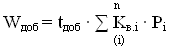

- Постанова
- 1. Загальні положення
- 2. Межі балансової належності та експлуатаційної відповідальності сторін
- 3. Встановлення та експлуатація засобів обліку і управління електроспоживанням
- 4. Режими постачання електричної енергії
- 5. Укладення договорів
- 6. Розрахунки за користування електричною енергією
- 7. Умови припинення або обмеження постачання та передачі електричної енергії
- 8. Права, обов'язки та відповідальність постачальника електричної енергії за регульованим тарифом
- 9. Права, обов'язки та відповідальність постачальника електричної енергії за нерегульованим тарифом
- 10. Права, обов'язки та відповідальність споживачів (субспоживачів) електричної енергії
- 11. Права, обов'язки та відповідальність електропередавальної організації
- 12. Особливості постачання електричної енергії для населених пунктів
- Додатки
- Постанова
- Загальні положення
- Установлення та експлуатація приладів обліку електричної енергії
- Розрахунки за спожиту електричну енергію
- Припинення користування електричною енергією
- Права та обов'язки енергопостачальника
- Права та обов'язки споживача електричної енергії
- Відповідальність енергопостачальника
- Відповідальність споживача електричної енергії
- Оформлення претензій
- Типовий договір про користування електричною енергією (Дод.1)
- Типовий акт-претензія (Дод.2)
- 1. Загальні положення
- 2. Визначення обсягу та вартості електричної енергії, не облікованої внаслідок порушення споживачами ПКЕЕ
- 3. Визначення обсягу та вартості електричної енергії, не облікованої внаслідок порушення споживачами ПКЕЕН
- 4. Складення акта про порушення
- Коефіцієнти використання струмоприймачів
- Коефіцієнти використання потужності
- Акт про порушення
Блокнот енергетика: Правила і Методика - це збірка чинного законодавства України у сфері електроенергетики та включає: Правила користування електричною енергією, затверджені Постановою Національної комісії з питань регулювання електроенергетики України від 31 липня 1996 року N 28, із змінами і доповненнями, внесеними постановою Національної комісії, що здійснює державне регулювання у сферах енергетики та комунальних послуг, від 29 жовтня 2015 року N 2684, Правила користування електричною енергією для населення, затверджені постановою Кабінету Міністрів України від 26 липня 1999 р. N 1357, Методика визначення обсягу та вартості електричної енергії, не облікованої внаслідок порушення споживачами правил користування електричною енергією, затверджена Постановою Національної комісії регулювання електроенергетики України від 4 травня 2006 року N 562
Працює в офлайн режимі без виходу в інтернет.
Оновлення виходять у разі внесення змін в нормативні акти, що становлять основу програми.
Програму створено в рамках проекту "Гурток якості" ПАТ "Прикарпаттяобленерго", як мобільна версія програми для ПК "Блокнот енергетика: Правила і Методика"
2. Забороняється вносити будь-які зміни у програму.
3. Програма поставляється "As is" ("як є").
© 2016, ідея та реалізація Дмитрук О.І.
31.07.1996 № 28
Зареєстровано в Міністерстві
юстиції України
02 серпня 1996 р.
за № 417/1442
{Із змінами, внесеними згідно з Постановами Національної комісії регулювання електроенергетики, № 1196 від 14.09.99, № 998 від 22.09.2000, № 1072 від 18.10.2000, № 393 від 20.04.2001, № 983 від 27.09.2001, № 280 від 25.03.2002, № 928 від 22.08.2002, № 1305 від 11.12.2003, № 910 від 17.10.2005, № 1497 від 22.11.2006, № 1449 від 25.12.2008, № 105 від 04.02.2010, Постановою Національної комісії, що здійснює державне регулювання у сферах енергетики та комунальних послуг № 2684 від 29.10.2015} {В тексті Постанови слова "розподільчий рахунок" в усіх відмінках та числах замінено словами "поточний рахунок із спеціальним режимом використання" у відповідних відмінках та числах згідно з Постановою НКРЕ № 280 від 25.03.2002} Згідно з Указами Президента України від 8 грудня 1994 року № 738 та від 14 березня 1995 року № 213 Національна комісія з питань регулювання електроенергетики України, ПОСТАНОВЛЯЄ:
1. Затвердити Правила користування електричною енергією (додаються).
2. Ввести в дію Правила користування електричною енергією з 13 серпня 1996 року.
Голова Комісії
З. Буцьо
1.1. Ці Правила регулюють взаємовідносини, які виникають в процесі продажу і купівлі електричної енергії між виробниками або постачальниками електричної енергії та споживачами (на роздрібному ринку електричної енергії).
Дія цих Правил поширюється на всіх юридичних осіб та фізичних осіб (крім населення).
Норми розділів "Загальні положення", "Межі балансової належності та експлуатаційної відповідальності сторін" та "Особливості постачання електричної енергії для населених пунктів" поширюються на всіх споживачів без винятку.
1.2. Для цілей цих Правил наведені нижче терміни та визначення вживаються в такому значенні:
авансовий платіж - часткова оплата (у розмірі, обумовленому договором) заявленого на наступний розрахунковий період обсягу електричної енергії, яка здійснюється до початку розрахункового періоду;
аварійна броня електропостачання - найменша величина електричної потужності та мінімальна добова величина електроспоживання, яка в разі повної зупинки виробництва забезпечує безпеку життя людей, запобігає пошкодженню основного обладнання та систем опалення споживача, забезпечує збереження аварійного, охоронного освітлення та сигналізації, мінімально допустимого рівня вентиляції та каналізації, роботу систем пожежогасіння, водовідведення та дренажу, запобігає негативним наслідкам техногенного та природного характеру;
аварійне розвантаження - режим роботи об'єднаної енергетичної системи України, при якому проводиться вимушене зменшення величини споживаної потужності для упередження порушення сталості роботи енергосистеми;
автоматизована система комерційного обліку електричної енергії (АСКОЕ) - сукупність об'єднаних в єдину функціональну метрологічно-атестовану систему локального устаткування збору і обробки даних засобів (засобу) обліку, каналів передачі інформації та пристроїв приймання, обробки, відображення та реєстрації інформації;
{Абзац п'ятий пункту 1.2 в редакції Постанови Національної комісії регулювання електроенергетики № 1497 від 22.11.2006; із змінами, внесеними згідно з Постановою Національної комісії регулювання електроенергетики № 1449 від 25.12.2008}
акт екологічної, аварійної та технологічної броні електропостачання споживача - документ установленої форми, у якому зазначені загальні відомості про споживача, перелік струмоприймачів, віднесених до екологічної, аварійної та технологічної броні, визначені їх навантаження, добове електроспоживання та враховано час, необхідний для завершення технологічного процесу (циклу виробництва);
акт розподілу електричної енергії - документ установленої сторонами форми щодо розподілу у відсотковому відношенні за зонами (годинами) доби та/або відповідними тарифами обсягу електричної енергії, облікованого за загальним однотарифним засобом обліку, складається за результатами інструментальних вимірювань протягом доби, коли підприємство (споживач) працювали в нормальному режимі;
базовий період - період впродовж року, що передує місяцю, у якому власником мереж наданий на погодження кошторис витрат на утримання технологічних електричних мереж; {Пункт 1.2 доповнено абзацом восьмим згідно з Постановою НКРЕ № 105 від 04.02.2010; в редакції Постанови Національної комісії, що здійснює державне регулювання у сферах енергетики та комунальних послуг № 2684 від 29.10.2015}
блок-станція - електростанція, яка належить споживачеві, працює в об'єднаній енергетичній системі України;
від'єднання споживача (від електромережі) - виконання організаційних і технічних заходів, спрямованих на усунення можливості здійснення передачі електричної енергії окремому споживачу;
відключення споживача (від електромережі) - припинення подачі електричної енергії споживачу за допомогою відповідної комутаційної апаратури та/або внаслідок виконання організаційних і технічних заходів, спрямованих на припинення передачі електричної енергії в електроустановку споживача;
відповідальна сторона - власник засобів комерційного обліку або інша організація, яка несе відповідальність за їх функціонування згідно з договором;{Пункт 1.2 доповнено абзацом згідно з Постановою НКРЕ № 1449 від 25.12.2008}
власник електричних мереж - юридична або фізична особа, якій на праві власності або користування належать електроустановки, призначені для передачі та/або розподілу електричної енергії;
{Пункт 1.2 доповнено абзацом згідно з Постановою Національної комісії регулювання електроенергетики № 1449 від 25.12.2008}
гранична величина споживання електричної потужності - максимальна величина сумарного споживання електричної потужності в години максимального навантаження Об'єднаної енергетичної системи України, яка визначається для споживачів постачальником електричної енергії за регульованим тарифом відповідно до порядку, встановленого чинними нормативно-правовими актами та договором;
договір про технічне забезпечення електропостачання споживача - домовленість двох сторін (споживач та електропередавальна організація або основний споживач), яка є документом певної форми, що встановлює зміст та регулює правовідносини між сторонами під час технічного забезпечення постачання електричної енергії;
договір про купівлю-продаж електричної енергії - домовленість двох сторін (постачальник електричної енергії за нерегульованим тарифом і споживач), що є документом певної форми, який встановлює зміст та регулює правовідносини між сторонами під час продажу постачальником за нерегульованим тарифом електричної енергії споживачу за вільними цінами;
договір про спільне використання технологічних електричних мереж - домовленість двох сторін, що є документом певної форми, який встановлює зміст та регулює правовідносини між електропередавальною організацією (ліцензіатом з передачі електричної енергії місцевими (локальними) мережами) та основним споживачем під час передачі (транзиту) електричної енергії технологічними електричними мережами;
{Абзац пункту 1.2 в редакції Постанови Національної комісії регулювання електроенергетики № 1449 від 25.12.2008}
договір про постачання електричної енергії - домовленість двох сторін (постачальник електричної енергії за регульованим тарифом і споживач), що є документом певної форми, який встановлює зміст та регулює правовідносини між сторонами під час продажу постачальником за регульованим тарифом електричної енергії споживачу за тарифами, які регулюються відповідно до законодавства України;
договірна величина споживання електричної енергії - узгоджена в договорі між постачальником електричної енергії і споживачем величина обсягу електричної енергії на відповідний розрахунковий період;
договірна потужність - узгоджена із споживачем на розрахунковий період відповідно до нормативних актів та зазначена у договорі гранична величина сумарної споживаної електричної потужності в періоди максимального навантаження енергосистеми, яка встановлюється для об'єкта споживача з приєднаною потужністю 150 кВт і більше та середньомісячним споживанням 50000 кВт·год і більше;
{Абзац двадцятий пункту 1.2 в редакції Постанови НКРЕ № 105 від 04.02.2010}
дозволена потужність - максимальна величина потужності, яку електропередавальна організація дозволила споживачу для одночасного використання (одночасного ввімкнення струмоприймачів) за кожним об'єктом споживача на підставі нормативно-технічних документів відповідно до умов договору;
{Абзац пункту 1.2 в редакції Постанов Національної комісії регулювання електроенергетики № 1449 від 25.12.2008, № 105 від 04.02.2010}
доставка (транзит) електричної енергії - комплекс технічних заходів з утримання електричних мереж, що здійснюються їх власником (уповноваженою власником особою) або суб'єктом господарювання, в господарському віданні якого є ці електричні мережі, з метою передачі електричної енергії та забезпечення в певній точці електричної мережі отримання певного обсягу електричної енергії електроустановками відповідної величини потужності із дотриманням якості електричної енергії;
екологічна броня електропостачання споживача - мінімальний рівень споживання електричної енергії споживачем (крім населення), який забезпечує передумови для запобігання виникненню надзвичайних ситуацій техногенного та природного характеру;
експертиза засобу обліку - комплекс заходів, які здійснюються з метою отримання даних щодо цілісності пломб, якими опломбовується засіб обліку, їх відповідності пломбам заінтересованих організацій, відповідності засобу обліку метрологічним характеристикам та умовам експлуатації;
{Абзац пункту 1.2 із змінами, внесеними згідно з Постановою Національної комісії регулювання електроенергетики № 1497 від 22.11.2006}
електрична енергія (активна) - енергоносій, який виступає на ринку як товар, що відрізняється від інших товарів особливими споживчими якостями та фізико-технічними характеристиками (одночасність виробництва та споживання, неможливість складування, повернення, переадресування), які визначають необхідність регулювання та регламентації використання цього товару;
електрична енергія (реактивна) - технологічно шкідлива циркуляція електричної енергії між джерелами електропостачання та приймачами змінного електричного струму, викликана електромагнітною незбалансованістю електроустановок;
електрична мережа - сукупність електроустановок для передачі та розподілу електричної енергії;
електропередавальна організація - суб'єкт господарювання, який отримав ліцензію на право здійснення підприємницької діяльності з передачі електричної енергії магістральними та міждержавними електричними мережами або місцевими (локальними) електричними мережами, а також суб'єкт господарювання, який отримав ліцензію на право здійснення підприємницької діяльності з передачі електричної енергії місцевими (локальними) електромережами та ліцензію на право здійснення підприємницької діяльності з постачання електричної енергії за регульованим тарифом, що здійснює свою діяльність на закріпленій території;
{Абзац двадцять восьмий пункту 1.2 глави 1 із змінами, внесеними згідно з Постановою Національної комісії, що здійснює державне регулювання у сферах енергетики та комунальних послуг № 2684 від 29.10.2015}
електропроводка - сукупність проводів і кабелів з кріпленнями, деталями монтажу та захисту, які прокладено на поверхні чи всередині конструктивних елементів споруд;
{Пункт 1.2 доповнено абзацом згідно з Постановою Національної комісії регулювання електроенергетики № 1497 від 22.11.2006}
електроустановка - комплекс взаємопов'язаних устаткування і споруд, призначених для виробництва або перетворення, передачі, розподілу чи споживання електричної енергії;
заінтересовані сторони - юридичні та фізичні особи, на яких впливає чи може вплинути реалізація заходів із програмування електронних багатофункціональних засобів обліку електричної енергії;
{Пункт 1.2 доповнено абзацом згідно з Постановою Національної комісії регулювання електроенергетики № 1449 від 25.12.2008}
засоби диференційного (погодинного) обліку електричної енергії - засоби обліку, які використовуються для визначення обсягу електричної енергії та реалізують процедуру реєстрації показів засобів обліку за відповідними періодами часу;
засоби обліку - засоби вимірювальної техніки, у тому числі лічильники, трансформатори струму та напруги, кола обліку, які використовуються для визначення обсягу електричної енергії та величини споживання електричної потужності;
збитки (з вини споживача) - витрати, недоотримана вигода (за винятком доходу від реалізації недоврахованої електричної енергії) постачальника електричної енергії або електропередавальної організації (основного споживача), яких вони зазнали внаслідок пошкодження електроустановок через зловмисну чи недбалу діяльність споживача (субспоживача) або інших осіб, та вартість робіт і послуг, необхідних для відновлення електроустановок та електропостачання;
збитки споживача - вартість пошкодженого устаткування, недоотримана вигода від реалізації недовиробленої продукції, втрати від екологічних наслідків і травматизму та втрати здоров'я, які виникли внаслідок обмеження чи припинення постачання електричної енергії з вини постачальника електричної енергії або електропередавальної організації, та вартість робіт, необхідних для відновлення устаткування та технологічних процесів;
зміна тарифних зон і тарифних коефіцієнтів - зміна зазначених параметрів первинного програмування електронного багатофункціонального засобу обліку після встановлення електронного багатофункціонального засобу обліку в точці обліку електричної енергії під час експлуатації;
{Пункт 1.2 доповнено абзацом згідно з Постановою Національної комісії регулювання електроенергетики № 1449 від 25.12.2008}
кваліфікований споживач електричної енергії (кваліфікований споживач) - споживач електричної енергії, який може вільно обирати електропостачальника та безпосередньо укладати з ним договір на обсяг власного споживання електричної енергії з урахуванням вимог Закону України "Про засади функціонування ринку електричної енергії України";
{Пункт 1.2 глави 1 доповнено новим абзацом тридцять сьомим згідно з Постановою Національної комісії, що здійснює державне регулювання у сферах енергетики та комунальних послуг № 2684 від 29.10.2015}
компенсація перетікань реактивної електричної енергії - комплекс технологічних заходів, які виконуються споживачем та спрямовані на забезпечення електромагнітної збалансованості його електроустановок на межі балансової належності;
контрольний огляд засобу обліку - виконання комплексу робіт з метою візуального обстеження цілісності засобу обліку (корпусу, скла, кріплення тощо), цілісності встановлених згідно з актом про пломбування пломб та наявності відбитків їх тавр, зняття показів засобів обліку, а також з метою виявлення без використання спеціальних технічних засобів та/або часткового демонтажу будівельних конструкцій або оздоблювальних матеріалів самовільних підключень;
{Абзац пункту 1.2 в редакції Постанови Національної комісії регулювання електроенергетики № 1449 від 25.12.2008}
користування електричною енергією - споживання електричної енергії з дотриманням споживачем визначених відповідними договорами умов підключення електроустановок споживача до електричних мереж у точці приєднання, умов оплати купованої електричної енергії та режимів споживання електричної енергії для отримання договірних обсягів електричної енергії та величини потужності;
локальне устаткування збору та обробки даних (ЛУЗОД) - улаштована з метою розрахунків за спожиту електричну енергію сукупність засобів обліку (або один засіб обліку), які забезпечують вимірювання, збір, накопичення, оброблення результатів вимірювань за відповідними періодами часу (формування первинної вимірювальної інформації) про обсяги і параметри потоків електричної енергії та значення споживаної потужності на окремій площадці вимірювання та мають інтерфейс дистанційного зчитування даних для роботи в складі автоматизованої системи комерційного обліку електричної енергії;
{Абзац пункту 1.2 в редакції Постанов Національної комісії регулювання електроенергетики № 1497 від 22.11.2006, № 1449 від 25.12.2008; із змінами, внесеними згідно з Постановою НКРЕ № 105 від 04.02.2010}
межа балансової належності - точка розділу елементів електричної мережі між власниками електроустановок за ознаками права власності або користування, або повного господарського відання;
{Абзац пункту 1.2 із змінами, внесеними згідно з Постановою НКРЕ № 105 від 04.02.2010}
межа експлуатаційної відповідальності - точка розділу електричної мережі за ознакою договірних зобов'язань з експлуатації тих чи інших її ділянок або елементів, встановлюється за згодою сторін. За відсутності такої згоди межа експлуатаційної відповідальності збігається з межею балансової належності;
населений пункт - юридична особа-споживач (власник електроустановок населеного пункту або уповноважена власником (співвласниками) експлуатаційна організація, в господарському віданні якої є електроустановки населеного пункту), об'єднує населення на визначеній території та утримує ці електроустановки з метою забезпечення електричною енергією споживачів населеного пункту;
населення - споживачі електричної енергії - фізичні особи, які з метою задоволення власних побутових або господарських потреб споживають електричну енергію для потреб електроустановок, що належать їм за ознакою права власності або користування, за винятком електроустановок, які використовуються для здійснення в установленому законодавством порядку підприємницької та/або незалежної професійної діяльності;
{Абзац сорок п'ятий пункту 1.2 глави 1 із змінами, внесеними згідно з Постановою Національної комісії, що здійснює державне регулювання у сферах енергетики та комунальних послуг № 2684 від 29.10.2015}
недовідпущена електрична енергія - різниця між обсягом електричної енергії, який мав бути поставлений споживачеві у певний період відповідно до договору, і фактично отриманим споживачем обсягом електричної енергії за цей період, що виникла в результаті перерви в електропостачанні, у тому числі при відключеннях та обмеженнях;
недоврахована електрична енергія - обсяг електричної енергії, використаний споживачем або переданий транзитом, але не врахований розрахунковими засобами обліку або врахований неправильно;
обмеження електропостачання - зниження обсягу постачання електричної енергії та (або) величини потужності споживачу в порівнянні із договірними величинами;
об'єкт - електрифікована споруда (сукупність електрифікованих споруд на одній території) або частина електрифікованої споруди, що належить суб'єкту господарювання на праві власності або користування;
{Абзац пункту 1.2 в редакції Постанови НКРЕ № 105 від 04.02.2010}
однотарифні засоби обліку - засоби вимірювальної техніки, які використовуються для визначення обсягу електричної енергії та реєструють виключно інтегральне (сумарне) значення показів;
оператор даних комерційного обліку - суб'єкт господарювання, який в установленому законодавством порядку забезпечує зчитування, обробку та передачу даних обліку, створення, управління базою даних обліку, перевірку достовірності та заміну даних обліку, надання даних обліку заінтересованим сторонам, які мають право доступу до відповідних даних;
{Пункт 1.2 доповнено абзацом згідно з Постановою Національної комісії регулювання електроенергетики № 1449 від 25.12.2008; із змінами, внесеними згідно з Постановою Національної комісії, що здійснює державне регулювання у сферах енергетики та комунальних послуг № 2684 від 29.10.2015}
оператор засобів комерційного обліку - суб'єкт господарювання, який в установленому законодавством порядку забезпечує установлення, налаштування, заміну, модернізацію, введення та виведення з експлуатації, а також технічну підтримку та обслуговування засобів обліку, вимірювальних комплексів та автоматизованих систем комерційного обліку електричної енергії, їх програмного та апаратного забезпечення на підставі відповідного договору з їх власником;
{Пункт 1.2 глави 1 доповнено новим абзацом п'ятдесят другим згідно з Постановою Національної комісії, що здійснює державне регулювання у сферах енергетики та комунальних послуг № 2684 від 29.10.2015}
основний споживач - споживач електричної енергії або власник електричних мереж, який передає частину електроенергії своїми технологічними електричними мережами субспоживачам та/або електропередавальній організації;
{Абзац пункту 1.2 із змінами, внесеними згідно з Постановою Національної комісії регулювання електроенергетики № 1449 від 25.12.2008}
остаточний розрахунок за розрахунковий період (за активну електричну енергію) - повний розрахунок споживача за спожиту в розрахунковому періоді електричну енергію згідно з призначенням платежу;
первинне програмування - установлення параметрів (параметризація) електронного багатофункціонального засобу обліку, достатніх для введення його в експлуатацію, залежно від розрахункової схеми обліку, порядку розрахунків за електричну енергію та вимог щодо інформаційного обміну в складі автоматизованої системи комерційного обліку електричної енергії та встановлення електронного багатофункціонального засобу обліку в точці обліку електричної енергії;
{Пункт 1.2 доповнено абзацом згідно з Постановою Національної комісії регулювання електроенергетики № 1449 від 25.12.2008}
перевірка програмування - інструментальна перевірка відповідності параметрів електронного багатофункціонального засобу обліку, установлених при первинному програмуванні та зміні тарифних зон і тарифних коефіцієнтів, значенням, указаним у протоколі параметризації, під час експлуатації;
{Пункт 1.2 доповнено абзацом згідно з Постановою Національної комісії регулювання електроенергетики № 1449 від 25.12.2008}
передача електричної енергії - транспортування електричної енергії за допомогою мереж на підставі договору;
перетікання реактивної електричної енергії на межі балансової належності електричних мереж (перетікання реактивної електричної енергії) - складова фізичних процесів передачі, розподілу та споживання активної електричної енергії, яка спричиняє додаткові технологічні втрати активної електричної енергії та впливає на показники якості активної електричної енергії;
підключення - виконання операцій комутації в місцях контактних з'єднань електропроводки з метою подачі напруги на електроустановку (електроустановки);
{Абзац пункту 1.2 в редакції Постанови НКРЕ № 105 від 04.02.2010}
планові платежі - перерахування коштів частинами з певною періодичністю (плановий період) протягом розрахункових періодів (розрахункового періоду);
плата за перетікання реактивної електроенергії - плата за послуги, які електропередавальна організація або власник технологічних електричних мереж змушені надавати споживачу, якщо він експлуатує електромагнітно незбалансовані електроустановки;
плата за спільне використання технологічних електричних мереж - еквівалент вартісної участі організації, що використовує технологічні електричні мережі відповідного власника електричних мереж в утриманні цих технологічних електричних мереж;
{Пункт 1.2 доповнено абзацом згідно з Постановою Національної комісії регулювання електроенергетики № 1449 від 25.12.2008}
платіж за резервування обсягу електричної енергії на покриття аварійної (екологічної) броні - обсяг коштів, необхідний для забезпечення постачання електричної енергії на рівні аварійної(екологічної) броні протягом періоду застосування аварійної (екологічної) броні;
повірка засобів обліку - встановлення придатності засобів вимірювальної техніки, на які поширюється державний метрологічний нагляд, до застосування, на підставі результатів контролю їхніх метрологічних характеристик;
площадка вимірювання - забезпечена точкою вимірювання або точками вимірювання електроустановка або сукупність електроустановок, виключно між якими можливі перетікання електричної енергії технологічними електричними мережами власника електроустановок, у які надходить або з яких віддається електрична енергія;
{Абзац пункту 1.2 із змінами, внесеними згідно з Постановами НКРЕ № 1497 від 22.11.2006, № 105 від 04.02.2010}
попередня оплата - оплата до початку розрахункового або планового періоду повної вартості прогнозованого обсягу споживання електричної енергії у найближчому наступному періоді;
{Абзац пункту 1.2 із змінами, внесеними згідно з Постановою НКРЕ № 105 від 04.02.2010}
постачальник електричної енергії - суб'єкт господарювання, який отримав ліцензію на право здійснення підприємницької діяльності з постачання електричної енергії;
{Абзац пункту 1.2 глави 1 із змінами, внесеними згідно з Постановою Національної комісії, що здійснює державне регулювання у сферах енергетики та комунальних послуг № 2684 від 29.10.2015}
постачання електричної енергії - надання електричної енергії споживачу за допомогою технічних засобів передачі та розподілу електричної енергії на підставі договору;
приєднана потужність - сумарна за об'єктом споживача номінальна потужність приєднаних до електричної мережі струмоприймачів та трансформаторів споживача (без урахування резервних трансформаторів), які перетворюють електричну енергію на робочу напругу (яка безпосередньо живить струмоприймачі), кВт;
{Абзац пункту 1.2 в редакції Постанов Національної комісії регулювання електроенергетики № 1497 від 22.11.2006, № 1449 від 25.12.2008; із змінами, внесеними згідно з Постановою НКРЕ № 105 від 04.02.2010}
прихована електропроводка - електрична проводка, яка приєднана до електричної мережі поза розрахунковим засобом обліку, яку представник постачальника без використання спеціальних технічних засобів або часткового демонтажу будівельних конструкцій, оздоблювальних матеріалів, під час попереднього контрольного огляду засобу обліку або технічної перевірки не мав можливості виявити;
{Пункт 1.2 доповнено абзацом згідно з Постановою Національної комісії регулювання електроенергетики № 1497 від 22.11.2006}
проектне рішення - інженерні, техніко-економічні, архітектурні, об'ємно-просторові характеристики електроустановки або її частини, розроблені у проектній документації;
протокол параметризації - вихідний документ (паперовий носій), створений за допомогою сервісного програмного забезпечення виробника багатофункціонального засобу обліку;
{Пункт 1.2 доповнено абзацом згідно з Постановою НКРЕ № 1449 від 25.12.2008; із змінами, внесеними згідно з Постановою НКРЕ № 105 від 04.02.2010}
реактивна потужність - складова повної потужності, яка залежно від параметрів, схеми та режиму роботи електричної мережі спричиняє додаткові технологічні втрати активної електричної енергії та впливає на показники якості електричної енергії;
розрахункові засоби обліку - засоби обліку електричної енергії, що застосовуються для здійснення комерційних розрахунків;
розрахунковий (комерційний) облік електричної енергії - визначення на підставі вимірів та інших регламентованих процедур у передбачених цими Правилами випадках обсягу електричної енергії та величини потужності для здійснення комерційних розрахунків;
розрахунковий період - період часу, зазначений у договорі, за який визначається обсяг спожитої та/або переданої електричної енергії, величина потужності та здійснюються відповідні розрахунки;
спільне використання технологічних електричних мереж - виконання комплексу заходів з метою експлуатації та утримання у належному технічному стані технологічних електричних мереж, які використовуються для забезпечення електропостачання інших суб'єктів господарювання, крім їх власника, або для забезпечення передачі (транзиту) електричної енергії в мережі електропередавальної організації;
{Пункт 1.2 доповнено абзацом згідно з Постановою НКРЕ № 105 від 04.02.2010}
споживач електричної енергії - юридична або фізична особа, що використовує електричну енергію для забезпечення потреб власних електроустановок на підставі договору;
споживачі населеного пункту - населення, електроустановки якого приєднані до технологічних електричних мереж населеного пункту та яке розраховується за використану електричну енергію з населеним пунктом;
струмоприймач - пристрій, призначений для перетворення електричної енергії в інший вид енергії;
субспоживач - споживач, електроустановки якого приєднані до технологічних електричних мереж основного споживача;
тариф - регульована та/або визначена відповідно до нормативно-правових актів ціна (сукупність цін відповідно до часу доби) на певні види товарів чи послуг;
{Абзац пункту 1.2 глави 1 із змінами, внесеними згідно з Постановою Національної комісії, що здійснює державне регулювання у сферах енергетики та комунальних послуг № 2684 від 29.10.2015}
тарифна зона - період за годинами доби, якому відповідає значення ціни електричної енергії та/або значення тарифного коефіцієнта;
{Пункт 1.2 доповнено абзацом згідно з Постановою Національної комісії регулювання електроенергетики № 1449 від 25.12.2008}
технічне забезпечення електропостачання споживача (субспоживача) - забезпечення власником електричних мереж технічної можливості передачі (транзиту) електричної енергії в точку приєднання електроустановок споживача (субспоживача) в певних обсягах у межах дозволеної потужності споживача (субспоживача) з показниками параметрів якості електричної енергії в точці приєднання електроустановок споживача (субспоживача) відповідно до умов договору;
технічна перевірка - виконання комплексу робіт з метою визначення відповідності стану засобу обліку електричної енергії та схеми його підключення, а також відповідності стану електропроводки та електроустановок від межі балансової належності до точки обліку "Правилам устройства электроустановок" (далі - ПУЕ) та іншим нормативно-технічним документам;
технічні (контрольні) засоби обліку - засоби обліку, що застосовуються суб'єктом господарської діяльності для контролю споживання електричної енергії, аналізу втрат електричної енергії у власних електричних мережах тощо;
технічні цілі - задоволення потреб споживача в електричній енергії для функціонування систем інженерного забезпечення належного йому об'єкта (забезпечення потреб електроустановок цього об'єкта, за винятком електроустановок, які використовуються для здійснення в установленому законодавством порядку підприємницької (комерційної) діяльності);
технологічна броня електропостачання споживача - найменша величина електричної потужності та тривалість часу, що потрібні споживачу для безаварійного завершення технологічного процесу (циклу виробництва);
технологічні витрати електричної енергії на передачу електричної енергії електричними мережами (технологічні витрати електричної енергії) - це сума втрат електричної енергії в елементах мереж, витрат електричної енергії на власні потреби підстанцій та витрат електричної енергії на плавлення ожеледі;
технологічні електричні мережі - сукупність електроустановок з усією інфраструктурою, у тому числі електричні мережі, системи автоматики, захисту, управління, регулювання та зв'язку, що призначені для перетворення, передачі та/або розподілу електричної енергії, що належать основному споживачу і використовуються для передачі електричної енергії для власного споживання та/або субспоживачам, а також для транзиту електричної енергії в мережі електропередавальної організації;
{Абзац пункту 1.2 із змінами, внесеними згідно з Постановою НКРЕ № 105 від 04.02.2010 Постановою Національної комісії, що здійснює державне регулювання у сферах енергетики та комунальних послуг № 2684 від 29.10.2015}
точка вимірювання - місце встановлення розрахункового засобу обліку в певній точці електричної мережі з метою вимірювання обсягу перетікань електричної енергії та рівня електричної потужності;
{Пункт 1.2 доповнено абзацом згідно з Постановою НКРЕ № 105 від 04.02.2010}
точка обліку - межа балансової належності, на якій за допомогою засобів обліку або розрахунковим шляхом визначаються та обліковуються значення обсягів споживання/передачі електричної енергії та величини споживання/транзиту електричної потужності за певний період;
{Абзац пункту 1.2 в редакції Постанови НКРЕ № 105 від 04.02.2010}
точка підключення - контактні з'єднання повітряних або кабельних ліній електропередач у місцях їх приєднання до відкритих або закритих розподільних пристроїв, місця відгалужень ліній електропередач;
{Пункт 1.2 доповнено абзацом згідно з Постановою Національної комісії регулювання електроенергетики № 1497 від 22.11.2006}
точка продажу електричної енергії - межа балансової належності, на якій відбувається перехід права власності на електричну енергію;
форс-мажорні обставини - надзвичайна і непереборна за наявних умов сила, захист від дії якої не передбачено в проектній та іншій нормативній документації, дію якої неможливо попередити застосуванням високопрофесійної практики персоналу, дія якої може бути викликана: винятковими погодними умовами і стихійним лихом (ураган, буря, повінь, нагромадження снігу, ожеледь, землетрус, пожежа, просідання і зсув ґрунту); непередбаченими ситуаціями, викликаними діями сторони, що не є стороною відповідного договору (страйк, локаут, дія суспільного ворога, оголошена та неоголошена війна, загроза війни, терористичний акт, блокада, революція, заколот, повстання, масові заворушення, громадська демонстрація, протиправні дії третіх осіб, пожежа, вибух); умовами, регламентованими відповідними органами виконавчої влади, а також пов'язаними з ліквідацією наслідків, викликаних винятковими погодними умовами і непередбаченими ситуаціями;
якість електричної енергії - перелік визначених центральним органом виконавчої влади, що реалізує державну політику у сфері технічного регулювання значень показників якості електричної енергії і значень нормально допустимих та гранично допустимих норм якості електричної енергії, у разі дотримання яких забезпечується електромагнітна сумісність електричних мереж електропередавальної організації та електроустановок споживачів електричної енергії, пожежно- та електробезпечність електроустановок споживачів.
{Пункт 1.2 глави 1 із змінами, внесеними згідно з Постановою Національної комісії, що здійснює державне регулювання у сферах енергетики та комунальних послуг № 2684 від 29.10.2015}
1.3. Постачання електричної енергії для забезпечення потреб електроустановки здійснюється на підставі договору про постачання електричної енергії, що укладається між власником цієї електроустановки (уповноваженою власником особою) та постачальником електричної енергії за регульованим тарифом, або договору про купівлю-продаж електричної енергії, що укладається між власником цієї електроустановки (уповноваженою власником особою) та постачальником електричної енергії за нерегульованим тарифом.
1.4. Точка продажу електричної енергії споживачу установлюється на межі балансової належності його електроустановок та зазначається в договорі про постачання електричної енергії або в договорі про купівлю-продаж електричної енергії.
{Абзац перший пункту 1.4 із змінами, внесеними згідно з Постановою Національної комісії регулювання електроенергетики № 1497 від 22.11.2006; в редакції Постанови Національної комісії регулювання електроенергетики № 1449 від 25.12.2008}
Електропередавальна організація покриває всі витрати, пов'язані з доставкою електричної енергії в точку продажу.
{Абзац другий пункту 1.4 в редакції Постанови Національної комісії регулювання електроенергетики № 1449 від 25.12.2008}
{Абзац третій пункту 1.4 виключено на підставі Постанови Національної комісії регулювання електроенергетики № 1449 від 25.12.2008}
1.5. У разі підключення електроустановок споживача до електричних мереж, власник яких не є постачальником електричної енергії, та виникнення у споживача відповідно до законодавства України зобов'язань уносити плату за перетікання реактивної електроенергії, між споживачем та цим власником електричних мереж на основі типового договору (додаток 1) укладається договір про технічне забезпечення електропостачання споживача.
{Пункт 1.5 в редакції Постанови Національної комісії регулювання електроенергетики № 1449 від 25.12.2008}
1.6. Договір про постачання електричної енергії на основі типового договору (додаток 3) укладається постачальником електричної енергії за регульованим тарифом з усіма споживачами та субспоживачами (крім населення), об'єкти яких розташовані на території здійснення ліцензованої діяльності постачальником електричної енергії за регульованим тарифом.
{Абзац перший пункту 1.6 із змінами, внесеними згідно з Постановою НКРЕ № 105 від 04.02.2010}
Умови договору про купівлю-продаж електричної енергії між споживачем (субспоживачем) та постачальником електричної енергії за нерегульованим тарифом визначаються за згодою сторін. Цей договір укладається відповідно до законодавства України.
1.7. {Абзац перший пункту 1.7 виключено на підставі Постанови Національної комісії регулювання електроенергетики № 1449 від 25.12.2008}
{Абзац другий пункту 1.7 виключено на підставі Постанови Національної комісії регулювання електроенергетики № 1449 від 25.12.2008}
У разі використання технологічних електричних мереж електропередавальною організацією відносини між власником цих мереж та електропередавальною організацією, у тому числі їх взаємна відповідальність, регулюються договором про спільне використання технологічних електричних мереж, що укладається між ними на основі типового договору (додаток 2).
{Абзац третій пункту 1.7 в редакції Постанови Національної комісії регулювання електроенергетики № 1449 від 25.12.2008>}
Основний споживач не має права відмовити електропередавальній організації, яка здійснює ліцензовану діяльність на закріпленій території, в укладенні (переукладенні) договору про спільне використання технологічних електричних мереж, а субспоживачу у разі дотримання ним вимог цих Правил в укладенні (переукладенні) договору про технічне забезпечення електропостачання споживача в передбачених цими Правилами випадках.
{Абзац четвертий пункту 1.7 в редакції Постанови Національної комісії регулювання електроенергетики № 1449 від 25.12.2008}
1.8. Умови договорів про постачання електричної енергії, про спільне використання технологічних електричних мереж, про технічне забезпечення електропостачання споживача виконуються з дати їх підписання, якщо інші дати не передбачені умовами відповідних договорів.
{Пункт 1.8 в редакції Постанови НКРЕ № 1449 від 25.12.2008; із змінами, внесеними згідно з Постановою НКРЕ № 105 від 04.02.2010}
1.9. Постачальники електричної енергії за регульованим тарифом на закріпленій території не мають права відмовити споживачу або субспоживачу, електроустановки якого розташовані на цій території, в укладенні договору, за умови дотримання вимог законодавства України, зокрема цих Правил та інших нормативно-технічних документів.
Зміна організаційно-правової форми, форми власності чи економічного стану постачальника електричної енергії за регульованим тарифом не може призводити до обмеження чи припинення постачання електричної енергії споживачу, якщо останній виконує свої зобов'язання згідно з договором та цими Правилами.
1.10. Електропередавальна організація не має права відмовити в передачі електричної енергії постачальникам електричної енергії, у приєднанні до її мереж інших електропередавальних організацій або замовників за умови дотримання ними вимог законодавства України, зокрема цих Правил та нормативно-технічних документів.
Електропередавальна організація, що здійснює діяльність з передачі електричної енергії місцевими (локальними) електричними мережами в межах закріпленої території здійснення ліцензованої діяльності забезпечує передачу електричної енергії місцевими (локальними) електричними мережами та технологічними електричними мережами інших власників, які не мають ліцензій на передачу електричної енергії місцевими (локальними) електричними мережами.
Для забезпечення передачі електричної енергії електричними мережами, що не належать електропередавальній організації, між електропередавальною організацією та відповідним власником мереж, який не має ліцензії на здійснення діяльності з передачі електричної енергії місцевими (локальними) електричними мережами, укладається договір щодо спільного використання електричних мереж. {Пункт 1.10 в редакції Постанови Національної комісії регулювання електроенергетики № 1497 від 22.11.2006}
1.11. У разі передачі електроустановки або її частини в оренду та обумовлення договором оренди передачі орендареві відповідних повноважень щодо врегулювання договірних відносин з електропередавальною організацією та/або постачальником електричної енергії щодо електрозабезпечення орендованої електроустановки або її частини між орендарем та суб'єктами електроенергетики мають бути укладені відповідні договори згідно з вимогами цих Правил.
1.12. Споживач, який має у власності блок-станцію, може реалізовувати вироблену понад власні потреби електричну енергію на оптовому ринку електричної енергії або постачальнику електричної енергії за регульованим тарифом, або безпосередньо іншим споживачам у встановленому законодавством порядку.
Власник когенераційної установки має право продажу виробленої цією когенераційною установкою електричної енергії окремим споживачам, у тому числі в години доби найбільшого або середнього навантаження електричної мережі (пікові та напівпікові періоди доби) одночасно (додатково) з основним постачальником електричної енергії.
1.13. Укладення, внесення змін, подовження чи розірвання дії будь-якого із договорів здійснюються відповідно до вимог законодавства та цих Правил.
1.14. Спірні питання між споживачем та постачальником електричної енергії або електропередавальною організацією розглядаються в межах наданих законодавством повноважень НКРЕКП, центральним органом виконавчої влади, що здійснює управління в електроенергетиці, Антимонопольним комітетом України, Держенергонаглядом та судом.
{Пункт 1.14 глави 1 із змінами, внесеними згідно з Постановою Національної комісії, що здійснює державне регулювання у сферах енергетики та комунальних послуг № 2684 від 29.10.2015}
1.15. Енергетичний нагляд в електроенергетиці, нагляд за охороною праці, контроль у сфері енергозбереження здійснюються персоналом підрозділів центральних органів виконавчої влади, на які покладені відповідні обов'язки згідно із законодавством України.
2.1. Межі балансової належності та експлуатаційної відповідальності між споживачем (субспоживачем) і електропередавальною організацією (основним споживачем) за технічний стан і обслуговування суміжних електроустановок фіксуються в акті розмежування балансової належності електроустановок і експлуатаційної відповідальності сторін.
Межа експлуатаційної відповідальності може не збігатися з межею балансової належності, яка визначається правом власності споживача і електропередавальної організації (основного споживача) на окремі елементи електричної мережі, про що зазначається в акті розмежування балансової належності електроустановок і експлуатаційної відповідальності сторін.
2.2. Межа експлуатаційної відповідальності між споживачем і електропередавальною організацією за технічний стан і обслуговування електроустановок напругою до 1000 В встановлюється:
1) у разі повітряного відгалуження - у точці кріплення проводів лінії електропередачі до перших ізоляторів на будівлі або на трубостояку, або на ввідних клемах першого комутаційного апарата, встановленого на ввідному пристрої будівлі споживача;
2) у разі кабельного вводу - на наконечниках кабелю живлення, приєднаних до ввідних клем першого комутаційного апарата, встановленого у ввідному пристрої будівлі споживача.
За технічний стан контактних з'єднань на межі балансової належності та на межі експлуатаційної відповідальності електромережі в будинках, що належать житловим організаціям, установам та іншим невиробничим споживачам, відповідає електропередавальна організація.
2.3. Межа експлуатаційної відповідальності за технічний стан і обслуговування електроустановок напругою 1000 В і вище встановлюється:
1) на з'єднувачі прохідного ізолятора повітряної лінії із зовнішньої сторони закритих розподільних пристроїв або на виході проводу з натяжного затискача портальної відтяжної гірлянди ізоляторів відкритих розподільних пристроїв;
2) на наконечниках кабельних або повітряних вводів живильних чи розподільних ліній.
За технічний стан зазначених у підпунктах "1)" і "2)" з'єднань відповідає організація, яка експлуатує підстанції (розподільні пристрої).
Межа відповідальності за стан і обслуговування ліній електропередачі напругою 1000 В і вище, що мають відгалуження (глухі або через роз'єднувачі), які належать різним організаціям, установлюється на опорі основної лінії, де здійснена відпайка. За технічний стан натяжних ізолювальних підвісок, установлених на лінійних порталах з боку лінії, а також усі затискачі, закріплені на проводах лінії, відповідає організація, що експлуатує лінію. За технічний стан лінійних порталів з натяжними ізолювальними підвісками з боку підстанцій, петлі на цих порталах, спуски з проводів лінії до різноманітного обладнання (комутаційних апаратів, розрядників, конденсаторів зв'язку, високочастотних загороджувачів тощо) відповідає організація, що експлуатує підстанцію.
{Абзац третій пункту 2.3 в редакції Постанови Національної комісії регулювання електроенергетики № 1497 від 22.11.2006}
За технічний стан затискачів, що приєднують відпайку, відповідає організація, яка експлуатує основну лінію.
{Абзац четвертий пункту 2.3 із змінами, внесеними згідно з Постановою Національної комісії регулювання електроенергетики № 1497 від 22.11.2006}
2.4. Межа експлуатаційної відповідальності між споживачем - фізичною особою, об'єднанням співвласників (власником) багатоквартирних будинків та/або власником електричних мереж за технічний стан і обслуговування суміжних електроустановок установлюється:
1) для квартир багатоповерхових будинків на відхідних клемах розрахункових засобів обліку поверхових або квартирних електрощитків;
{Підпункт 1 пункту 2.4 із змінами, внесеними згідно з Постановою НКРЕ № 105 від 04.02.2010}
2) для індивідуальних будинків:
у разі відгалуження від лінії електропередачі неізольованим проводом - у точці кріплення проводів лінії електропередачі до перших ізоляторів на будівлі або на трубостояку (при повітряному вводі);
у разі кабельного вводу або використання ізольованого проводу при відгалуженні від лінії електропередачі - на наконечниках кабелю живлення або ізольованого проводу на ввідному пристрої будівлі, якщо ввідно-розподільний пристрій розташований усередині будівлі, або на вихідних клемах розрахункового засобу обліку, якщо ввідно-розподільний пристрій та засіб обліку розміщені ззовні будівлі.
За стан контактних з'єднань на межі експлуатаційної відповідальності та на вхідних і вихідних клемах опломбованих розрахункових засобів обліку відповідає електропередавальна організація.
2.5. Може бути встановлена інша обґрунтована межа експлуатаційної відповідальності, яка обумовлена особливостями експлуатації електроустановок або пристроїв релейного захисту та автоматики (РЗА) і зв'язку.
2.6. Для технічного обслуговування та експлуатації електроустановок суб'єкт господарської діяльності, який згідно з актом балансової належності та експлуатаційної відповідальності сторін відповідає за експлуатацію цих електроустановок, має право на підставі відповідного договору залучити будь-яку організацію, яка має право на виконання таких робіт.
2.7. Якщо до електричних мереж електропередавальної організації приєднані електричні мережі, які на підставі права власності не належать жодному суб'єкту господарювання та через які електрична енергія передається до технологічних електричних мереж споживача, межа експлуатаційної відповідальності та точка продажу електричної енергії встановлюються на межі балансової належності споживача.
Такі електричні мережі в установленому законодавством України порядку мають бути передані в господарське відання електропередавальної організації, до мереж якої вони приєднані.
3.1. Електроустановки споживачів мають бути забезпечені необхідними розрахунковими засобами обліку електричної енергії для розрахунків за спожиту електричну енергію, технічними засобами контролю і управління споживанням електричної енергії та величини потужності, а також (за бажанням споживача) засобами вимірювальної техніки для контролю якості електричної енергії.
Розрахункові засоби обліку електричної енергії, технічні засоби контролю і управління споживанням електричної енергії та величини потужності, засоби вимірювальної техніки для контролю якості електричної енергії встановлюються відповідно до вимог ПУЕ, цих Правил та проектних рішень.
3.2. Відповідальною за технічний стан засобів обліку є організація, на балансі якої вони перебувають, або оператор засобів комерційного обліку (електропередавальна організація або інша організація) на підставі відповідного договору.
{Пункт 3.2 глави 3 в редакції Постанови Національної комісії, що здійснює державне регулювання у сферах енергетики та комунальних послуг № 2684 від 29.10.2015}
3.3. Відповідальність за збереження і цілісність розрахункових засобів обліку електричної енергії та пломб (відбитків їх тавр) відповідно до акта про пломбування покладається на власника (користувача) електроустановки або організацію, на території (у приміщенні) якої вони встановлені.
{Пункт 3.3 в редакції Постанови Національної комісії регулювання електроенергетики № 1449 від 25.12.2008}
3.4. Якщо протягом 2 послідовних розрахункових періодів спостерігається зменшення середнього завантаження вимірювальних трансформаторів струму до рівня, меншого ніж передбачений проектною документацією, вимогами ПУЕ та/або технічними характеристиками заводу-виробника щодо завантаження трансформаторів струму, то протягом наступного розрахункового періоду постачальник електричної енергії, електропередавальна організація або споживач має право звернутися до власника засобів обліку щодо приведення обліку у відповідність до вимог ПУЕ або технічних характеристик заводу-виробника засобів обліку, за винятком випадків обліку електричної енергії, використаної споживачами з нерівномірним споживанням електричної енергії протягом року (зменшення відповідно до технологічного циклу роботи споживаної потужності у 5 та більше разів протягом строку, який є не меншим одного розрахункового періоду).
У разі звернення до власника засобів обліку споживача або електропередавальної організації, або постачальника електричної енергії щодо невідповідності обліку вимогам ПУЕ або технічним характеристикам заводу-виробника засобів обліку сторонами складається акт про невідповідність метрологічних характеристик, у якому, в тому числі, зазначається термін приведення засобів обліку їх власником за його рахунок у відповідність до вимог ПУЕ або технічних характеристик заводу-виробника засобів обліку. У такому разі сторонами переглядається величина дозволеної потужності.
{Абзац другий пункту 3.4 із змінами, внесеними згідно з Постановою Національної комісії регулювання електроенергетики № 1497 від 22.11.2006}
Термін приведення обліку у відповідність до вимог ПУЕ або до технічних характеристик заводу-виробника засобів обліку має не перевищувати 1 місяць (для обліку в мережах 0,4 кВ) та 3 місяці (для обліку в мережах 6 кВ та вище) з дня складення акта.
У разі відмови представника власника засобу обліку від підпису в акті робиться відповідний запис. У цьому випадку акт вважається дійсним, якщо він підписаний не менш ніж трьома уповноваженими представниками сторони, що складає акт.
3.5. У разі виникнення зустрічного перетікання електричної енергії між електричними мережами споживача та електропередавальної організації розрахункові засоби обліку електричної енергії мають забезпечувати облік активної та реактивної електричної енергії в обох напрямках.
{Пункт 3.5 в редакції Постанови Національної комісії регулювання електроенергетики № 1449 від 25.12.2008}
3.6. Підключення електроустановки споживача, яка не забезпечена розрахунковими засобами (засобом) обліку електричної енергії, забороняється, за винятком випадків, передбачених розділом 6 цих Правил.
Споживання електричної енергії за відповідним тарифом має бути забезпечене окремим обліком.
Окремі площадки вимірювання мають бути забезпечені засобами обліку, які дають можливість організувати розрахунковий облік за відповідним тарифом на всій площадці вимірювання.
{Абзац четвертий пункту 3.6 виключено на підставі Постанови Національної комісії регулювання електроенергетики № 1449 від 25.12.2008}
3.7. Для розрахункового обліку електричної енергії мають використовуватися засоби обліку, які пройшли повірку і відповідають вимогам Закону України "Про метрологію та метрологічну діяльність" та іншим нормативно-правовим актам, що містять вимоги до таких засобів вимірювальної техніки.
{Абзац перший пункту 3.7 в редакції Постанови НКРЕ № 105 від 04.02.2010, Постанови Національної комісії, що здійснює державне регулювання у сферах енергетики та комунальних послуг № 2684 від 29.10.2015}
Місця та умови встановлення розрахункових засобів обліку визначаються згідно з ПУЕ та проектними рішеннями.
Засоби обліку мають бути встановлені таким чином, щоб для контролю за обсягом споживання електричної енергії забезпечити технічну можливість безперешкодного доступу до засобів обліку:
1) які встановлені на об'єктах електропередавальної організації, - відповідальних працівників Держенергонагляду, постачальника електричної енергії та споживача;
2) які встановлені на об'єктах споживача (основного споживача), - відповідальних працівників Держенергонагляду, постачальника електричної енергії (електропередавальної організації) та субспоживача;
3) які встановлені на об'єктах субспоживача, - відповідальних працівників Держенергонагляду, постачальника електричної енергії (електропередавальної організації) та основного споживача.
{Пункт 3.7 в редакції Постанови Національної комісії регулювання електроенергетики № 1449 від 25.12.2008}
3.8. У разі встановлення або заміни засобів обліку споживачем електропередавальна організація відповідно до вибраного споживачем виду тарифу із переліку, передбаченого нормативно-правовими актами НКРЕКП, та вимог нормативно-технічних документів щодо організації комерційного обліку має запропонувати споживачу перелік розрахункових засобів обліку електричної енергії та вимірювання величини споживаної електричної потужності, а також перелік каналів зв'язку, якими має забезпечуватися передача інформації щодо обліку, у тому числі форматів представлення даних щодо забезпечення можливості зчитування даних з засобів обліку електричної енергії та/або локального устаткування збору та обробки даних.
{Абзац перший пункту 3.8 із змінами, внесеними згідно з Постановами НКРЕ № 1449 від 25.12.2008, № 105 від 04.02.2010}
У рекомендаціях щодо вибору розрахункових засобів обліку електричної енергії та обладнання, яким має забезпечуватися передача інформації щодо обліку електричної енергії, електропередавальна організація має враховувати можливість об'єднання локального устаткування збору і обробки даних в автоматизовану систему комерційного обліку електричної енергії.
{Абзац другий пункту 3.8 із змінами, внесеними згідно з Постановою Національної комісії регулювання електроенергетики № 1449 від 25.12.2008}
У разі встановлення (заміни) розрахункових засобів обліку та/або локального устаткування збору та обробки даних зі зміною електричної схеми обліку або безпосередньо зміни електричної схеми обліку на основі технічних рекомендацій, наданих електропередавальною організацією, споживач або організація, на вимогу (за ініціативою) якого (якої) здійснюється встановлення (заміна) розрахункових засобів обліку, розробляє технічне завдання на встановлення (заміну) розрахункових засобів обліку, яке погоджується електропередавальною організацією впродовж десяти робочих днів з дня його отримання. На основі погодженого технічного завдання на встановлення (заміну) розрахункових засобів обліку проектною організацією за договором із споживачем або організацією, на вимогу (за ініціативою) якого (якої) здійснюється встановлення (заміна) розрахункових засобів обліку, розробляється проект встановлення розрахункових засобів обліку електричної енергії та/або локального устаткування збору та обробки даних. Установлення (заміна) розрахункових засобів обліку без зміни електричної схеми обліку здійснюється відповідно до існуючих проектних рішень без розробки технічного завдання.
{Абзац третій пункту 3.8 із змінами, внесеними згідно з Постановою Національної комісії регулювання електроенергетики № 1497 від 22.11.2006; в редакції Постанови Національної комісії регулювання електроенергетики № 1449 від 25.12.2008, Постанови Національної комісії, що здійснює державне регулювання у сферах енергетики та комунальних послуг № 2684 від 29.10.2015}
Термін розгляду поданого на узгодження робочого проекту не може перевищувати п'ятнадцяти робочих днів з дня його отримання електропередавальною організацією. За результатами розгляду електропередавальною організацією оформляється технічне рішення до робочого проекту. У технічному рішенні в стислій формі зазначаються основні показники вузла обліку. Зауваження та рекомендації до робочого проекту викладаються окремим розділом у технічному рішенні. За умови врахування зауважень та рекомендацій до робочого проекту погодження доопрацьованого робочого проекту з електропередавальною організацією не потрібно.
{Пункт 3.8 доповнено абзацом четвертим згідно з Постановою Національної комісії регулювання електроенергетики № 1497 від 22.11.2006}
Установлення, налаштування, заміна, модернізація та виведення з експлуатації розрахункових засобів обліку електричної енергії та/або локального устаткування збору та обробки даних виконуються за погодженням з електропередавальною організацією оператором засобів комерційного обліку (електропередавальною організацією або іншою організацією, яка має право на виконання таких робіт) на підставі заяви власника відповідного обладнання та за його рахунок (якщо такі дії планові або вимагаються нормативно-правовими актами) або за рахунок організації, на вимогу (за ініціативою) якої здійснюється установлення (заміна) розрахункових засобів обліку.
{Абзац п'ятий пункту 3.8 із змінами, внесеними згідно з Постановою НКРЕ № 1497 від 22.11.2006; в редакції Постанов НКРЕ № 1449 від 25.12.2008, № 105 від 04.02.2010, Постанови Національної комісії, що здійснює державне регулювання у сферах енергетики та комунальних послуг № 2684 від 29.10.2015}
Установлення (заміна) засобів розрахункового обліку без зміни електричної схеми обліку здійснюється на підставі заяви споживача за його рахунок електропередавальною організацією або іншою організацією, яка має право на виконання таких робіт, за погодженням з електропередавальною організацією. Робочий проект на встановлення (заміну) засобів розрахункового обліку із зміною електричної схеми обліку та/або локального устаткування збору та обробки даних виконується проектною організацією за договором, укладеним із організацією, на балансі якої перебувають розрахункові засоби обліку.
{Пункт 3.8 доповнено абзацом шостим згідно з Постановою Національної комісії регулювання електроенергетики № 1497 від 22.11.2006; в редакції Постанови Національної комісії регулювання електроенергетики № 1449 від 25.12.2008}
У разі встановлення на території споживача розрахункових засобів обліку електричної енергії організацією, яка має право на виконання таких робіт, але не є електропередавальною організацією, споживач має забезпечити безперешкодний доступ відповідальних представників постачальника за регульованим тарифом (електропередавальної організації) для контролю правильності підключення і перевірки роботи встановлених засобів обліку.
Локальне устаткування збору та обробки даних та автоматизовані системи комерційного обліку електричної енергії мають створюватись та проходити свій подальший розвиток (нарощування, розширення, модернізація, реконструкція, технічне переоснащення тощо) згідно з погодженим проектом.
{Пункт 3.8 доповнено абзацом згідно з Постановою НКРЕ № 1449 від 25.12.2008; із змінами, внесеними згідно з Постановою НКРЕ № 105 від 04.02.2010}
{Пункт 3.8 глави 3 із змінами, внесеними згідно з Постановою Національної комісії, що здійснює державне регулювання у сферах енергетики та комунальних послуг № 2684 від 29.10.2015}
3.9. Під час улаштування споживачем локального устаткування збору та обробки даних (ЛУЗОД) або автоматизованої системи комерційного обліку електричної енергії (АСКОЕ) на власних електроустановках споживач отримує від електропередавальної організації технічні рекомендації.
У складі ЛУЗОД та/або АСКОЕ забороняється незаконне використання об'єктів права інтелектуальної власності (комп'ютерних програм, баз даних тощо).
У разі влаштування складових ЛУЗОД або АСКОЕ споживача на електроустановках, які не перебувають у власності споживача, технічні рекомендації перед їх видачею мають бути узгоджені електропередавальною організацією з власниками відповідних електроустановок.
Власник електроустановки не має права обмежувати перелік типів засобів обліку, що можуть бути встановлені в точках обліку згідно з технічними рекомендаціями, наданими електропередавальною організацією споживачу.
Улаштування споживачем ЛУЗОД на базі багатофункціонального засобу обліку з вбудованим модулем для дистанційного зчитування даних без зміни електричної схеми обліку дозволяється здійснювати відповідно до існуючих проектних рішень без розробки технічного завдання на встановлення (заміну) розрахункового обліку та проекту встановлення ЛУЗОД.
{Пункт 3.9 доповнено новим абзацом п'ятим згідно з Постановою Національної комісії, що здійснює державне регулювання у сферах енергетики та комунальних послуг № 2684 від 29.10.2015}
{Правила доповнено пунктом 3.9 згідно з Постановою Національної комісії регулювання електроенергетики № 1449 від 25.12.2008}
3.10. Технічні рекомендації мають включати:
перелік даних, що передаються до електропередавальної організації;
протокол передачі даних;
перелік місць установлення засобів обліку;
перелік місць установлення комунікаційного обладнання;
інформацію про параметри каналів зв'язку, які будуть застосовуватись для зчитування даних з ЛУЗОД або обміну даними з АСКОЕ споживача;
{Абзац шостий пункту 3.10 із змінами, внесеними згідно з Постановою НКРЕ № 105 від 04.02.2010}
рекомендації щодо апаратного та програмного інтерфейсу лічильників;
граничні показники похибки вимірювання обсягу (кількості) електричної енергії;
граничні показники розсинхронізації часу;
алгоритм приведення даних вимірювань з лічильників до даних, що будуть використовуватися для проведення комерційних розрахунків;
умови спільного використання ЛУЗОД.
Технічні рекомендації можуть бути скориговані в разі введення в дію нових нормативних документів або внесення змін в існуючі нормативні документи, які змінюють вимоги до ЛУЗОД або АСКОЕ.
{Правила доповнено пунктом 3.10 згідно з Постановою Національної комісії регулювання електроенергетики № 1449 від 25.12.2008}
3.11. З урахуванням технічних рекомендацій електропередавальної організації щодо побудови ЛУЗОД або АСКОЕ споживача розробляється технічне завдання.
Розробка та узгодження технічного завдання проводиться відповідно до вимог діючих державних стандартів України.
Узгоджене технічне завдання має пройти метрологічну експертизу.
{Абзац третій пункту 3.11 в редакції Постанови НКРЕ № 105 від 04.02.2010}
Електропередавальна організація має погодити технічне завдання в обсязі виданих нею технічних рекомендацій впродовж десяти робочих днів з дня його отримання.
{Правила доповнено пунктом 3.11 згідно з Постановою Національної комісії регулювання електроенергетики № 1449 від 25.12.2008}
3.12. На основі погодженого технічного завдання проектною організацією за договором із споживачем або організацією, на вимогу (за ініціативою) якої здійснюється заміна розрахункового засобу обліку, розробляється проект встановлення ЛУЗОД або АСКОЕ споживача (далі - проект), який у разі розміщення елементів ЛУЗОД або АСКОЕ споживача на електроустановках електропередавальної організації узгоджується останньою в цій частині робочого проекту.
Термін розгляду поданого на узгодження проекту не може перевищувати п'ятнадцяти робочих днів з дня його отримання електропередавальною організацією.
{Правила доповнено пунктом 3.12 згідно з Постановою Національної комісії регулювання електроенергетики № 1449 від 25.12.2008}
3.13. Зауваження та рекомендації до технічного завдання або проекту мають надаватись з посиланням на нормативні документи. Зауваження, надані без посилання на нормативні документи, не враховуються та розгляду не підлягають.
За умови врахування зауважень та рекомендацій до технічного завдання або проекту погоджувати доопрацьоване технічне завдання або проект з електропередавальною організацією не потрібно.
Надання технічних рекомендацій, розгляд та узгодження технічного завдання та/або проекту виконуються електропередавальною організацією безкоштовно.
{Правила доповнено пунктом 3.13 згідно з Постановою Національної комісії регулювання електроенергетики № 1449 від 25.12.2008}
3.14. Після завершення робіт щодо влаштування ЛУЗОД або АСКОЕ складається акт прийняття в дослідну експлуатацію відповідно до вимог діючих державних стандартів України. Дослідна експлуатація ЛУЗОД або АСКОЕ здійснюється впродовж одного місяця від дати встановлення відповідного обладнання.
{Абзац перший пункту 3.14 із змінами, внесеними згідно з Постановою НКРЕ № 105 від 04.02.2010, Постановою Національної комісії, що здійснює державне регулювання у сферах енергетики та комунальних послуг № 2684 від 29.10.2015}
У разі відповідності ЛУЗОД або АСКОЕ технічному завданню та проектним рішенням складається акт прийняття в промислову (постійну) експлуатацію.
ЛУЗОД або АСКОЕ споживача, які прийняті в промислову (постійну) експлуатацію, мають бути інформаційно об'єднані електропередавальною організацією з її АСКОЕ з метою зчитування даних з ЛУЗОД або обміну даними з АСКОЕ споживача.
{Абзац третій пункту 3.14 в редакції Постанови НКРЕ № 105 від 04.02.2010; із змінами, внесеними згідно з Постановою Національної комісії, що здійснює державне регулювання у сферах енергетики та комунальних послуг № 2684 від 29.10.2015}
Прийняті в промислову (постійну) експлуатацію ЛУЗОД або АСКОЕ мають використовуватись для проведення комерційних розрахунків.
{Правила доповнено пунктом 3.14 згідно з Постановою Національної комісії регулювання електроенергетики № 1449 від 25.12.2008}
3.15. Власник електроустановки, на якій встановлюються складові ЛУЗОД або АСКОЕ, не має права обмежувати доступ власників відповідного обладнання, споживачів (або субспоживачів) та електропередавальної організації до засобів обліку та інформації, що зберігається в первинній базі даних засобів обліку.
{Правила доповнено пунктом 3.15 згідно з Постановою Національної комісії регулювання електроенергетики № 1449 від 25.12.2008; із змінами, внесеними згідно з Постановою НКРЕ № 105 від 04.02.2010}
3.16. Первинне програмування, зміна тарифних зон і тарифних коефіцієнтів (параметризація) електронних багатофункціональних засобів обліку здійснюються на замовлення та за рахунок власників цих засобів обліку оператором засобів комерційного обліку (електропередавальною організацією або іншою організацією).
{Правила доповнено пунктом 3.16 згідно з Постановою Національної комісії регулювання електроенергетики № 1449 від 25.12.2008; із змінами, внесеними згідно з Постановою Національної комісії, що здійснює державне регулювання у сферах енергетики та комунальних послуг № 2684 від 29.10.2015}
3.17. При первинному програмуванні електронного багатофункціонального засобу обліку встановлюються:
час внутрішнього годинника (синхронізація);
параметри зміни сезонів зима/літо;
значення напруги вторинних кіл обліку;
кількість відімкнених вимірювальних елементів;
параметри живлення електронного багатофункціонального засобу обліку (основне/резервне джерело живлення);
розподіл вимірювальних каналів;
алгоритм розрахунку енергії;
параметри вимірювальних каналів щодо зберігання даних;
параметри журналу позаштатних ситуацій;
параметри комунікаційного порту споживача;
параметри комунікаційного порту енергопостачальної компанії (у разі висунення технічних вимог при узгодженні типу приладу обліку);
параметри білінгових періодів (доба/місяць, розрахунковий день);
параметри диференційованого (погодинного) обліку;
пароль;
параметри виводу даних на дисплей.
Параметри програмування комунікаційних портів електронного багатофункціонального засобу обліку визначаються з урахуванням вимог щодо інформаційного обміну з електропередавальною організацією або відповідним оператором даних комерційного обліку. Зміна параметрів програмування комунікаційних портів виконується за обґрунтованим письмовим зверненням заінтересованої сторони.
{Правила доповнено пунктом 3.17 згідно з Постановою Національної комісії регулювання електроенергетики № 1449 від 25.12.2008}
3.18. Після виконання робіт з первинного програмування в паспорті електронного багатофункціонального засобу обліку або в додатку до паспорта (у разі відсутності місця в паспорті) указуються:
найменування суб'єкта господарської діяльності та ідентифікаційний код за Єдиним державним реєстром підприємств та організацій України, фахівці якого виконують роботи з первинного програмування;
прізвище та ініціали фахівця, який виконував первинне програмування;
назва органу державного метрологічного нагляду, який взяв на облік відповідного суб'єкта господарської діяльності;
дата первинного програмування.
До паспорта електронного багатофункціонального засобу обліку обов'язково додається протокол параметризації, створений за допомогою сервісного програмного забезпечення виробника багатофункціонального засобу обліку.
{Абзац шостий пункту 3.18 із змінами, внесеними згідно з Постановою НКРЕ № 105 від 04.02.2010}
Копії протоколів параметризації надаються заінтересованим сторонам організацією (підприємством), фахівці якої виконують роботи з первинного програмування.
{Правила доповнено пунктом 3.18 згідно з Постановою Національної комісії регулювання електроенергетики № 1449 від 25.12.2008}
3.19. Обсяг інформації, яка виводиться на дисплей, визначається замовником робіт із програмування електронного багатофункціонального засобу обліку. Зміна обсягу цієї інформації виконується за обґрунтованим письмовим зверненням заінтересованої сторони. Жодна із заінтересованих сторін не має права обмежувати обсяг інформації, що виводиться на дисплей електронного багатофункціонального засобу обліку.
{Правила доповнено пунктом 3.19 згідно з Постановою Національної комісії регулювання електроенергетики № 1449 від 25.12.2008}
3.20. Роботи зі зміни тарифних зон і тарифних коефіцієнтів (параметризації) виконуються на місці встановлення електронного багатофункціонального засобу обліку та оформлюються відповідним актом за підписом заінтересованих сторін, у якому вказуються:
{Абзац перший пункту 3.20 із змінами, внесеними згідно з Постановою НКРЕ № 105 від 04.02.2010}
причина зміни тарифних зон та тарифних коефіцієнтів;
найменування суб'єкта господарської діяльності та ідентифікаційний код за Єдиним державним реєстром підприємств та організацій України, фахівці якого виконують роботи з параметризації;
прізвище та ініціали фахівця, який виконував роботу;
назва органу державного метрологічного нагляду, який взяв на облік відповідного суб'єкта господарської діяльності;
дата зміни тарифних зон та тарифних коефіцієнтів.
До Акта виконання робіт зі зміни тарифних зон і тарифних коефіцієнтів (параметризації) додаються протоколи параметризації.
Копії протоколів параметризації надаються заінтересованим сторонам організацією (підприємством), фахівці якої виконують роботи зі зміни тарифних зон та тарифних коефіцієнтів (параметризації).
{Правила доповнено пунктом 3.20 згідно з Постановою Національної комісії регулювання електроенергетики № 1449 від 25.12.2008}
3.21. У разі розрахунків за тарифами, диференційованими за періодами часу, тарифні зони, які встановлюються при первинному програмуванні та зміні тарифних зон, мають відповідати діючим на момент програмування межам періодів за годинами доби (тарифним зонам), встановлених НЕК "Укренерго" та погоджених НКРЕКП.
Встановлення тарифних зон у електронного багатофункціонального засобу обліку не може бути завадою для проведення відповідно до договору розрахунків за тарифами, не диференційованими за періодами часу.
{Правила доповнено пунктом 3.21 згідно з Постановою Національної комісії регулювання електроенергетики № 1449 від 25.12.2008; із змінами, внесеними згідно з Постановою Національної комісії, що здійснює державне регулювання у сферах енергетики та комунальних послуг № 2684 від 29.10.2015}
3.22. При виконанні робіт зі зміни тарифних зон і тарифних коефіцієнтів (параметризації) електронних багатофункціональних засобів обліку електричної енергії у складі автоматизованих систем комерційного обліку електричної енергії є обов'язковим:
1) погодження зміни параметрів параметризації, встановлених при первинному програмуванні, з оператором даних комерційного обліку;
2) виконання робіт відповідно до технічної документації на систему обліку або в присутності представника оператора даних комерційного обліку.
{Правила доповнено пунктом 3.22 згідно з Постановою Національної комісії регулювання електроенергетики № 1449 від 25.12.2008}
3.23. Організація каналів зв'язку та зчитування інформації з локального устаткування збору і обробки даних від споживача до електропередавальної організації проводиться за рахунок електропередавальної організації.
{Абзац перший пункту із змінами, внесеними згідно з Постановами НКРЕ № 1497 від 22.11.2006, № 105 від 04.02.2010}
У разі встановлення на території споживача засобів диференційного (погодинного) обліку електричної енергії споживач має забезпечити безперешкодний доступ відповідальних представників постачальника за регульованим тарифом (електропередавальної організації) для отримання в електронному вигляді інформації щодо обсягу електричної енергії, врахованої цими засобами обліку.
3.24. Планова повірка розрахункових засобів обліку має здійснюватись за рахунок власників цих засобів обліку в терміни, встановлені нормативними документами центрального органу виконавчої влади, що реалізує державну політику у сфері технічного регулювання відповідно до договору.
Електропередавальна організація (постачальник електричної енергії за регульованим тарифом) здійснює контроль за вчасним проведенням повірки розрахункових засобів обліку відповідно до договору.
Якщо повірка розрахункових засобів обліку не виконана в передбачені терміни з вини електропередавальної оганізації, електропередавальна організація не має права на виставлення додаткових рахунків, виставлення яких пов'язане з похибкою показів розрахункових засобів обліку електричної енергії.
{Пункт 3.24 глави 3 із змінами, внесеними згідно з Постановою Національної комісії, що здійснює державне регулювання у сферах енергетики та комунальних послуг № 2684 від 29.10.2015}
3.25. Споживачі, які бажають здійснювати розрахунок за спожиту електричну енергію за тарифами, диференційованими за періодами часу, в тому числі за годинами доби, мають забезпечити облік електричної енергії для власного споживання відповідними засобами диференційного (погодинного) обліку електричної енергії.
3.26. У разі, якщо до технологічних електричних мереж основного споживача приєднані електроустановки інших суб'єктів господарювання, власників мереж тощо, розрахунковий облік має бути організований основним споживачем таким чином, щоб забезпечити складення балансу електричної енергії у власних технологічних електричних мережах для проведення комерційних розрахунків.
Споживач (власник електричних мереж), технологічні електричні мережі якого використовуються електропередавальною організацією для передачі (транзиту) електричної енергії в електричні мережі субспоживачів або електропередавальної організації, має надати електропередавальній організації у повному обсязі необхідні вихідні дані для визначення в передбаченому цими Правилами порядку величини технологічних втрат електричної енергії, що пов'язані з передачею (транзитом) електричної енергії в електричні мережі інших суб'єктів.
{Пункт 3.26 доповнено абзацом згідно з Постановою Національної комісії регулювання електроенергетики № 1449 від 25.12.2008}
3.27. Планова заміна, у тому числі на виконання вимог нормативно-правових актів, технічна підтримка та обслуговування розрахункових засобів обліку електричної енергії здійснюються оператором засобів комерційного обліку (електропередавальною організацією або іншою організацією) за рахунок їх власників. Непланова заміна розрахункових засобів обліку електричної енергії здійснюється оператором засобів комерційного обліку (електропередавальною організацією або іншою організацією) за рахунок організації, на вимогу (за ініціативою) якої здійснюється непланова заміна розрахункового засобу обліку.
{Абзац перший пункту 3.27 із змінами, внесеними згідно з Постановою НКРЕ № 105 від 04.02.2010; в редакції Постанови Національної комісії, що здійснює державне регулювання у сферах енергетики та комунальних послуг № 2684 від 29.10.2015}
Ремонт розрахункових засобів обліку електричної енергії здійснюється організаціями, які мають право на виконання цих робіт, за рахунок їх власників
{Абзац другий пункту 3.27 глави 3 в редакції Постанови Національної комісії, що здійснює державне регулювання у сферах енергетики та комунальних послуг № 2684 від 29.10.2015}
{Абзац третій пункту 3.27 виключено на підставі Постанови Національної комісії регулювання електроенергетики № 1449 від 25.12.2008}
Експлуатація та планові заміна, ремонт, обслуговування, повірка розрахункових засобів обліку електричної енергії, що призначені для розрахунків населення за електричну енергію, здійснюється за власний рахунок електропередавальною організацією, яка здійснює ліцензовану діяльність з передачі електричної енергії місцевими (локальними) електричними мережами на закріпленій території (постачальником електричної енергії за регульованим тарифом, який постачає електричну енергію населенню).
3.28. Споживач або постачальник електричної енергії має право звернутись до територіальних органів центрального органу виконавчої влади, що реалізують державну політику у сфері технічного регулювання або акредитованих метрологічних служб з метою позачергової повірки засобів обліку, а також до електропередавальної організації (оператора даних комерційного обліку) для позачергової технічної перевірки та/або перевірки програмування засобів обліку, схем їх підключення, правильності роботи, ремонту, заміни або експертизи.
{Абзац перший пункту 3.28 із змінами, внесеними згідно з Постановою Національної комісії регулювання електроенергетики № 1449 від 25.12.2008}
Перевірка програмування виконується за обґрунтованим письмовим зверненням заінтересованої сторони, в якому зазначається вичерпний перелік параметрів, які необхідно перевірити.
{Пункт 3.28 доповнено абзацом другим згідно з Постановою Національної комісії регулювання електроенергетики № 1449 від 25.12.2008}
Вартість позачергової повірки засобів обліку оплачується стороною, за ініціативою якої здійснюється позачергова повірка засобів обліку.
У разі проведення позачергової технічної перевірки, перевірки програмування перевірки правильності роботи, ремонту, заміни або експертизи засобу обліку вартість робіт оплачується:
{Абзац четвертий пункту 3.28 із змінами, внесеними згідно з Постановою Національної комісії регулювання електроенергетики № 1449 від 25.12.2008}
1) суб'єктом господарювання, за ініціативою якого проводилась позачергова технічна перевірка, перевірка програмування, перевірка схем підключення засобу обліку та/або правильності його роботи, ремонт, заміна або експертиза, - у разі, якщо порушень у роботі розрахункових засобів обліку та схем їх підключення за результатами перевірки не виявлено;
{Абзац п'ятий пункту 3.28 із змінами, внесеними згідно з Постановою Національної комісії регулювання електроенергетики № 1449 від 25.12.2008}
2) власником засобу обліку чи суб'єктом господарської діяльності, який відповідає за технічний стан та/або збереження засобу обліку, - у разі, якщо виявлено порушення схеми розрахункового обліку електричної енергії, пошкодження або викрадення розрахункових засобів обліку електричної енергії з вини власника засобу обліку чи суб'єкта господарської діяльності, який відповідає за технічний стан та/або збереження засобу обліку;
3) електропередавальною організацією - у разі, якщо виявлено порушення схеми розрахункового обліку електричної енергії, пошкодження розрахункових засобів обліку електричної енергії або їх невідповідності нормативно-технічній документації з вини електропередавальної організації.
{Пункт 3.28 глави 3 із змінами, внесеними згідно з Постановою Національної комісії, що здійснює державне регулювання у сферах енергетики та комунальних послуг № 2684 від 29.10.2015}
3.29. Виконання робіт з перевірки програмування до початку експлуатації та під час експлуатації електронного багатофункціонального засобу обліку оформлюється відповідним актом за підписом сторін, у якому вказуються:
{Абзац перший пункту 3.29 із змінами, внесеними згідно з Постановою НКРЕ № 105 від 04.02.2010}
причина перевірки;
найменування суб'єкта господарської діяльності та ідентифікаційний код за Єдиним державним реєстром підприємств та організацій України, фахівці якого виконують роботи з програмування;
прізвище та ініціали фахівця, який виконував роботу;
назва органу державного метрологічного нагляду, який взяв на облік відповідного суб'єкта господарської діяльності;
дата перевірки;
результати перевірки.
{Правила доповнено пунктом 3.29 згідно з Постановою Національної комісії регулювання електроенергетики № 1449 від 25.12.2008}
3.30. Експертиза засобу обліку в частині дослідження його відповідності нормованим метрологічним характеристикам та умовам експлуатації здійснюється у присутності уповноважених представників власника засобу обліку або організації, яка відповідає за його збереження, постачальника електричної енергії, електропередавальної організації, представника територіального органу, уповноваженого центральним органом виконавчої влади, що реалізує державну політику у сфері технічного регулювання, на проведення державних приймальних і контрольних випробувань і повірки засобів вимірювальної техніки та на проведення атестації методик виконання вимірювань, що використовуються у сфері та/або поза сферою поширення державного метрологічного нагляду.
{Абзац перший пункту із змінами, внесеними згідно з Постановою Національної комісії регулювання електроенергетики № 1497 від 22.11.2006, Постановою Національної комісії, що здійснює державне регулювання у сферах енергетики та комунальних послуг № 2684 від 29.10.2015}
Експертиза засобу обліку в частині дослідження матеріалів, речовин, з яких виготовлені засіб обліку та/або пломби, здійснюється спеціалізованими організаціями, які мають право на виконання таких робіт.
{Пункт доповнено абзацом другим згідно з Постановою Національної комісії регулювання електроенергетики № 1497 від 22.11.2006}
Числові та описові дані, отримані під час експертизи, висновки зазначаються у відповідному документі.
{Абзац третій пункту 3.30 в редакції Постанови Національної комісії регулювання електроенергетики № 1449 від 25.12.2008}
3.31. Розрахунковий засіб обліку електричної енергії має бути опломбований на кріпленні кожуха лічильника пломбою з тавром центрального органу виконавчої влади, що реалізує державну політику у сфері технічного регулювання, а на затискній кришці - пломбою електропередавальної організації.
Пломби з тавром електропередавальної організації мають бути встановлені також на пристроях, що закривають первинні і вторинні кола живлення засобу обліку, приводи і кнопки управління комутаційних апаратів та кришки автоматів, встановлених у цих колах, двері комірок трансформаторів напруги, кришки на зборках і колодках затискачів, випробувальних блоках, лінії зв'язку автоматизованих систем обліку та всі інші пристрої і місця, що унеможливлюють доступ до струмоведучих частин схеми обліку.
Підготовка місць для опломбування здійснюється власником електроустановки згідно з переліком, наданим електропередавальною організацією. Перелік місць пломбування може бути розширений за обґрунтованою пропозицією однієї із сторін.
У зазначених місцях можуть бути встановлені пломби інших заінтересованих сторін.
{Пункт 3.31 глави 3 із змінами, внесеними згідно з Постановою Національної комісії, що здійснює державне регулювання у сферах енергетики та комунальних послуг № 2684 від 29.10.2015}
3.32. При пломбуванні та/або встановленні індикаторів та приладів обліку з вмонтованими індикаторами оформляється акт про пломбування та встановлення індикаторів.
В акті про пломбування та встановлення індикаторів мають бути зазначені: місце встановлення кожної пломби та/або індикаторів, сторона, яка їх встановила, сторона, відповідальна за збереження і цілісність розрахункових засобів обліку електричної енергії та пломб і індикаторів на них.
Акт про пломбування та встановлення індикаторів підписується керівниками або уповноваженими особами сторін, які брали участь у пломбуванні приладу обліку.
{Абзац третій пункту із змінами, внесеними згідно з Постановою Національної комісії регулювання електроенергетики № 1497 від 22.11.2006}
{Пункт 3.32 глави 3 в редакції Постанови Національної комісії, що здійснює державне регулювання у сферах енергетики та комунальних послуг № 2684 від 29.10.2015}
3.33. Електропередавальна організація (постачальник електричної енергії за регульованим тарифом) не рідше одного разу на шість місяців має здійснювати контрольний огляд засобу обліку.
Технічна перевірка здійснюється електропередавальною організацією (постачальником електричної енергії за регульованим тарифом) не рідше одного разу на три роки.
Роботи з контрольного огляду засобу обліку та технічної перевірки розрахункових засобів обліку електричної енергії проводяться у присутності уповноважених представників споживача, а в разі, якщо споживач купує електричну енергію у постачальника електричної енергії за нерегульованим тарифом - додатково в присутності представників постачальника за нерегульованим тарифом та оформляються актом про проведені роботи із зазначенням в акті прізвища уповноваженого представника електропередавальної організації, який проводив роботи, та номера його службового посвідчення, підстави проведення технічної перевірки або контрольного огляду засобу обліку та детального опису результатів обстеження.
{Абзац третій пункту із змінами, внесеними згідно з Постановою Національної комісії регулювання електроенергетики № 1497 від 22.11.2006}
3.34. Будь-які роботи, пов'язані з порушенням або зміною схеми розрахункового обліку електричної енергії, заміною типу розрахункового засобу обліку електричної енергії, проводяться за погодженням з електропередавальною організацією (постачальником електричної енергії) у присутності представників заінтересованих сторін та оформляються актом.
{Абзац перший пункту із змінами, внесеними згідно з Постановою Національної комісії регулювання електроенергетики № 1497 від 22.11.2006}
Роботи з розпломбування, випробування, вимірювання, зміни схеми розрахункового обліку, заміни типу розрахункового обліку електричної енергії без оформлення акта в присутності уповноважених осіб споживача та електропередавальної організації (постачальника електричної енергії) не допускаються.
Під час проведення вищезазначених робіт розрахунковий облік обсягу електричної енергії здійснюється за тимчасовими схемами, узгодженими з постачальником електричної енергії. У разі неможливості створення тимчасових схем розрахункового обліку розрахунки за електричну енергію, спожиту протягом часу проведення вищезазначених робіт, здійснюються відповідно до порядку, погодженого заінтересованими сторонами.
Після закінчення робіт засоби обліку опломбовуються та передаються на збереження згідно з процедурою, визначеною пунктами 3.31-3.32 цих Правил.
{Абзац четвертий пункту 3.34 із змінами, внесеними згідно з Постановою НКРЕ № 105 від 04.02.2010}
3.35. Об'єкт (крім багатоквартирних житлових будинків та населених пунктів) з приєднаною потужністю електроустановок 150 кВт і більше та середньомісячним обсягом споживання за попередні 12 розрахункових періодів для діючих електроустановок або заявленим обсягом споживання електричної енергії для нових електроустановок 50 тис.кВт.год і більше має бути забезпечений локальним устаткуванням збору та обробки даних у межах періоду, визначеного для встановлення зазначених засобів обліку відповідно до договору.
{Абзац перший пункту 3.35 із змінами, внесеними згідно з Постановою НКРЕ № 105 від 04.02.2010}
Об'єкт з приєднаною потужністю електроустановок до 150 кВт та середньомісячним обсягом споживання за попередні 12 розрахункових періодів для діючих електроустановок або заявленим обсягом споживання електричної енергії для нових електроустановок до 50 тис. кВт·год може бути забезпечений ЛУЗОД електропередавальною організацією за власний рахунок, якщо це необхідно з технічних та/або економічних міркувань електропередавальної організації.
{Пункт 3.35 глави 3 доповнено новим абзацом згідно з Постановою Національної комісії, що здійснює державне регулювання у сферах енергетики та комунальних послуг № 2684 від 29.10.2015}
У разі підключення нових електроустановок середньомісячним обсягом споживання вважається заявлений споживачем обсяг споживання електричної енергії. Якщо на об'єкті з приєднаною потужністю електроустановок 150 кВт і більше впродовж трьох послідовних розрахункових періодів середньомісячний обсяг споживання електричної енергії становить 50 тис. кВт·год і більше, такий об'єкт має бути забезпечений ЛУЗОД.
{Абзац третій пункту 3.35 глави 3 в редакції Постанови Національної комісії, що здійснює державне регулювання у сферах енергетики та комунальних послуг № 2684 від 29.10.2015}
Період для встановлення локального устаткування збору та обробки даних, автоматизованої системи комерційного обліку електричної енергії споживача для організації обліку діючих електроустановок визначається окремим договором між електропередавальною організацією та споживачем.
Характеристики засобів диференційного (погодинного) обліку електричної енергії, призначених для визначення обсягу електричної енергії з метою забезпечення проведення розрахунків за електричну енергію, мають відповідати вимогам нормативних документів до автоматизованих систем комерційного обліку суб'єктів Оптового ринку електричної енергії України.
{Абзац шостий пункту 3.35 глави 3 виключено на підставі Постанови Національної комісії, що здійснює державне регулювання у сферах енергетики та комунальних послуг № 2684 від 29.10.2015}
Споживач має право об'єднати локальне устаткування збору та обробки даних в автоматизовану систему комерційного обліку електричної енергії споживача.
Електропередавальна організація приймає до розрахунків за електричну енергію схему розрахункового обліку електричної енергії після встановлення локального устаткування збору та обробки даних або автоматизованої системи комерційного обліку електричної енергії споживача.
{Пункт 3.35 в редакції Постанови Національної комісії регулювання електроенергетики № 1449 від 25.12.2008}
3.36. Для контрольного обліку електричної енергії (контроль за виконанням установлених норм витрат електричної енергії) споживачі додатково можуть установлювати технічні (контрольні) засоби обліку в окремих цехах, на енергоємних агрегатах, технологічних лініях, у будинках.
Технічні (контрольні) засоби обліку електричної енергії перебувають на балансі споживача, їх обслуговування здійснюється споживачем або іншою організацією за договором.
Покази технічних (контрольних) засобів обліку електричної енергії не можуть бути використані для розрахунків за електричну енергію за винятком випадків, передбачених цими Правилами.
4.1. Постачання електричної енергії всім споживачам здійснюється відповідно до режимів, передбачених договорами.
Постачальник електричної енергії за регульованим тарифом (електропередавальна організація) забезпечує рівень надійності електропостачання відповідно до узгодженої в договорі категорії з надійності електропостачання.
Споживач зобов'язаний не перевищувати у години контролю максимального навантаження енергосистеми граничну величину споживання електричної потужності, доведену цьому споживачу відповідно до умов договору.
За взаємною згодою сторін рівень споживання електричної потужності може регулюватися шляхом встановлення автоматичних засобів обмеження електроспоживання.
4.2. Відомості про обсяги очікуваного споживання електричної енергії в наступному році з помісячним або поквартальним розподілом подаються споживачами постачальнику електричної енергії за регульованим тарифом у термін, обумовлений договором. У разі відхилення від обсягів фактичного споживання за минулий рік на 15% обсяги очікуваного споживання електричної енергії обґрунтовуються споживачем за даними запланованої до використання потужності та режиму роботи електроустановок відповідно до умов договору.
{Абзац перший пункту 4.2 із змінами, внесеними згідно з Постановою НКРЕ № 105 від 04.02.2010}
Пропозиції споживача щодо необхідного йому обсягу електричної енергії та строків постачання є пріоритетними для оформлення договірних величин споживання електричної енергії за наявності виробничих можливостей у постачальника електричної енергії.
{Абзац другий пункту 4.2 із змінами, внесеними згідно з Постановою НКРЕ № 105 від 04.02.2010}
Розмір очікуваного споживання електричної енергії визначається та вказується для кожної площадки вимірювання.
У разі ненадання споживачем зазначених відомостей у встановлений договором термін розмір очікуваного споживання електричної енергії на наступний рік установлюється постачальником електричної енергії за фактичними обсягами споживання у відповідних періодах поточного року, що минули, та у відповідних періодах минулого року, які відповідають майбутнім періодам поточного року.
{Абзац четвертий пункту 4.2 із змінами, внесеними згідно з Постановою НКРЕ № 105 від 04.02.2010}
Споживачі, які розраховуються за електричну енергію за тарифами, диференційованими за періодами часу, та споживачі постачальників за нерегульованим тарифом, електроустановки яких обладнані засобами диференційного (погодинного) обліку електричної енергії, додатково подають відомості про заявку величини споживання електричної потужності у години контролю максимального навантаження енергосистеми на відповідні розрахункові періоди.
Узгоджені сторонами обсяги очікуваного споживання електричної енергії та заявлені величини споживання електричної потужності оформлюються додатком до договору як договірні величини.
4.3. Граничні величини споживання електричної потужності для споживача визначаються постачальником електричної енергії за регульованим тарифом у порядку, передбаченому законодавством України та зазначеному у договорі про постачання електричної енергії між споживачем та постачальником електричної енергії за регульованим тарифом.
Гранична величина споживання електричної потужності визначається окремо для кожного об'єкта споживача з приєднаною потужністю 150 кВт та більше і середньомісячним споживанням 50 000 кВт.год та більше (за підсумком минулого року).
{Абзац другий пункту 4.3 із змінами, внесеними згідно з Постановою НКРЕ № 105 від 04.02.2010}
4.4. Споживач має право протягом розрахункового періоду звернутися до постачальника електричної енергії за регульованим тарифом із заявою щодо коригування договірної величини споживання електричної енергії.
Споживач, який розраховується за тарифами, диференційованими за періодами часу, та/або споживач постачальника за нерегульованим тарифом, електроустановки якого обладнані засобами диференційного (погодинного) обліку електричної енергії, має право протягом розрахункового періоду звернутися до постачальника електричної енергії за регульованим тарифом із заявою щодо коригування договірної граничної величини споживання електричної потужності.
Постачальник електричної енергії за регульованим тарифом протягом п'яти робочих днів від дня отримання звернення розглядає заяву споживача, приймає рішення за цим зверненням та не пізніше шостого робочого дня від дня отримання звернення письмово повідомляє споживача про результати розгляду заяви. Пропозиції споживача щодо коригування договірних величин є пріоритетними за умови попередньої оплати додатково заявлених обсягів та отримання постачальником за регульованим тарифом заяви споживача не пізніше ніж за п'ять робочих днів до закінчення розрахункового періоду. Постачальник електричної енергії за регульованим тарифом має право відмовити споживачу в коригуванні (збільшенні) договірних величин у разі невиконання споживачем своїх зобов'язань щодо оплати електричної енергії за договором про постачання електричної енергії.
{Абзац третій пункту 4.4 в редакції Постанови Національної комісії регулювання електроенергетики № 1497 від 22.11.2006}
У разі коригування за заявою споживача договірної величини споживання обсягу електричної енергії здійснюється відповідне коригування договірної граничної величини споживання електричної потужності.
Датою коригування вважається дата попередньої оплати додатково заявлених обсягів активної електричної енергії. У разі, якщо договором про постачання електричної енергії попередня оплата не передбачена, датою коригування вважається дата прийняття постачальником електричної енергії рішення про коригування договірних величин на підставі письмового звернення споживача. Для споживача, який розраховується за тарифами, диференційованими за періодами часу, та/або споживача постачальника за нерегульованим тарифом, електроустановки якого обладнані засобами диференційного (погодинного) обліку електричної енергії, за дату коригування договірної граничної величини споживання електричної потужності приймається дата отримання постачальником електричної енергії звернення від споживача.
{Пункт 4.4 доповнено абзацом п'ятим згідно з Постановою Національної комісії регулювання електроенергетики № 1497 від 22.11.2006}
Скоригована гранична величина споживання електричної потужності дійсна з дня проведення коригування.
За результатами розгляду споживачу надсилається повідомлення про рівні відкоригованих договірних величин або обґрунтована відмова здійснення коригування. Повідомлення про рівні відкоригованих договірних величин обсягу споживання та електричної потужності є невід'ємною частиною договору.
4.5. Відносини сторін в умовах виникнення аварійних ситуацій та дефіциту паливно-енергетичних ресурсів, а саме: рівні споживання електричної енергії та потужності, участь споживача у графіках обмеження споживання електричної енергії, обмеження споживання електричної потужності, аварійних відключень споживачів електричної енергії, спеціальних графіків аварійних відключень та порядок їх застосування визначаються нормативними документами та умовами договору.
{Абзац другий пункту 4.5 вилучено на підставі Постанови Національної комісії регулювання електроенергетики № 1497 від 22.11.2006}
4.6. Постачальник електричної енергії доводить споживачам граничні величини споживання електричної потужності в години контролю максимального навантаження енергосистеми відповідно до законодавства України та умов договору. Ці величини встановлюються для об'єктів споживача з приєднаною потужністю 150 кВт та більше і середньомісячним споживанням 50 000 кВт.год та більше, виходячи з режиму роботи об'єднаної енергетичної системи України, і доводяться до відома споживачів окремими письмовими повідомленнями не пізніше ніж за 10 днів до початку наступного розрахункового періоду. Це письмове повідомлення є невід'ємною частиною договору.
{Абзац перший пункту 4.6 із змінами, внесеними згідно з Постановою НКРЕ № 105 від 04.02.2010}
У разі, якщо для відповідних об'єктів споживач має погоджену технологічну броню електропостачання, договірна гранична величина споживання електричної потужності в години максимуму навантаження має бути не нижче технологічної броні, обумовленої актом екологічної, аварійної та технологічної броні електропостачання споживача.
{Абзац другий пункту 4.6 із змінами, внесеними згідно з Постановою НКРЕ № 105 від 04.02.2010}
Періоди контролю максимумів навантаження встановлюються відповідно до нормативних документів і згідно з умовами договору доводяться до споживачів письмовим повідомленням, яке є додатком до договору. Загальна тривалість періодів контролю максимального навантаження має не перевищувати 6 годин на добу.
Для різних постачальників електричної енергії за регульованим тарифом органом, що здійснює централізоване диспетчерське управління, можуть установлюватися різні години початку періоду контролю максимального навантаження енергосистеми в залежності від добового графіка навантаження об'єднаної енергетичної системи України.
Для споживачів, які розраховуються за спожиту електроенергію за тарифами, диференційованими за періодами часу, початок та тривалість періоду контролю максимуму навантаження встановлюються відповідно до початку та тривалості пікової зони.
4.7. Для визначення режимів роботи об'єднаної енергосистеми України та споживачів відповідні електропередавальні організації двічі на рік у характерні режимні дні літнього та зимового періоду організовують проведення споживачами вимірів добових графіків споживання електричної енергії. Під час проведення режимних днів обмеження споживання електричної енергії та величини потужності та контроль за дотриманням установлених режимів електроспоживання не застосовуються. У разі введення (з будь-яких причин) у день зняття добового графіка обмежень цей графік не застосовується і має бути знятий повторно в узгоджений сторонами день.
{Абзац перший пункту 4.7 із змінами, внесеними згідно з Постановою Національної комісії регулювання електроенергетики № 1497 від 22.11.2006}
Основні споживачі в добових графіках споживання електричної енергії та величини потужності окремо визначають обсяги електричної енергії та величини потужності, яка передається субспоживачам.
Споживачі із сезонним циклом роботи та споживачі, які у визначений день не брали участі у графіках споживання електричної енергії та величини потужності, мають за вимогою постачальника електричної енергії подати добовий графік споживання електричної енергії та величини потужності в інший установлений робочий день.
4.8. Контроль за дотриманням установлених режимів електроспоживання здійснюється постачальником електричної енергії за регульованим тарифом та Держенергонаглядом.
Постачальник електричної енергії може делегувати повноваження щодо контролю за дотриманням установлених режимів електропередавальній організації, про що зазначається в договорі між постачальником електричної енергії та електропередавальною організацією.
4.9. Контроль за фактичним навантаженням електроустановок споживачів, яким установлені граничні величини електричної потужності, має здійснюватися засобами вимірювальної техніки, що фіксують середню за 30 хвилин величину потужності у періоди контролю максимального навантаження енергосистеми.
Умови контролю мають бути визначені в договорі.
У разі живлення електроустановок споживача від власної блок-станції і від мереж та підстанцій електропередавальної організації контроль за фактичним навантаженням електроустановок споживача здійснюється розрахунковими засобами обліку, які враховують обсяги електричної енергії, отриманої від електропередавальної організації.
4.10. За умови наявності декількох ліній живлення фактичне навантаження споживача визначається як сумарне півгодинне навантаження кожної з ліній живлення в години добового максимуму навантаження енергосистеми (півгодинного максимального навантаження).
5.1. Договір про постачання електричної енергії є основним документом, який регулює відносини між постачальником електричної енергії за регульованим тарифом, що здійснює свою діяльність на закріпленій території, і споживачем та визначає зміст правових відносин, прав та обов'язків сторін.
Споживання електричної енергії без договору не допускається.
Між постачальником електричної енергії за регульованим тарифом та споживачем укладається один договір про постачання електричної енергії за усіма об'єктами споживача, які розташовані на території здійснення ліцензованої діяльності постачальником електричної енергії за регульованим тарифом. За взаємною згодою сторін можуть бути укладені окремі договори про постачання електричної енергії за кожним об'єктом споживача.
{Абзац третій пункту 5.1 в редакції Постанови НКРЕ № 105 від 04.02.2010}
5.2. При укладенні договору про постачання електричної енергії сторони визначають його зміст на основі типового договору (додаток 3).
Умови договору про постачання електричної енергії, зазначені у додатку 3 та пунктах 5.5, 5.6 та 5.7 цих Правил, є істотними та обов'язковими для сторін під час укладення договору про постачання електричної енергії.
5.3. Постачальник електричної енергії за регульованим тарифом зобов'язаний надати на розгляд проект договору про постачання електричної енергії протягом 7 робочих днів для споживачів із приєднаною потужністю до 150 кВт та протягом 14 робочих днів для споживачів із приєднаною потужністю 150 кВт та більше від дати прийняття від споживача документів, зазначених у пункті 5.4 цих Правил.
Якщо в разі зміни споживача, форми власності чи власника електроустановки фактичний стан розрахункових засобів обліку не відповідає вимогам нормативно-технічних документів, відповідні договори з новим власником укладаються після приведення розрахункових засобів обліку у відповідність до вимог нормативно-технічних документів.
5.4. Для укладення договору про постачання електричної енергії, договору про технічне забезпечення електропостачання споживача або договору про спільне використання технологічних електричних мереж заявник (споживач, власник технологічних електричних мереж (основний споживач) або субспоживач) має надати відповідній організації такі документи:
{Абзац перший пункту 5.4 із змінами, внесеними згідно з Постановою НКРЕ № 105 від 04.02.2010}
1) заяву щодо укладення відповідного договору із зазначенням роду виробничої діяльності, місцезнаходження та банківських реквізитів заявника;
2) акти про розмежування балансової належності та експлуатаційної відповідальності сторін (у разі укладення відповідного договору щодо об'єктів, які вводяться в експлуатацію вперше);
{Підпункт 2 пункту 5.4 із змінами, внесеними згідно з Постановою Національної комісії регулювання електроенергетики № 1497 від 22.11.2006}
3) однолінійну схему електропостачання об'єкта (у разі укладення відповідного договору щодо об'єктів, які вводяться в експлуатацію вперше);
{Підпункт 3 пункту 5.4 із змінами, внесеними згідно з Постановою Національної комісії регулювання електроенергетики № 1497 від 22.11.2006}
4) відомості щодо розрахункових засобів обліку (тип, марка, технічні характеристики тощо) (у разі укладення відповідного договору щодо об'єктів, які вводяться в експлуатацію вперше);
{Підпункт 4 пункту 5.4 із змінами, внесеними згідно з Постановами НКРЕ № 1497 від 22.11.2006, № 105 від 04.02.2010}
5) заявку на очікуваний обсяг споживання електричної енергії та величини споживання електричної потужності у години контролю максимального навантаження енергосистеми (за необхідності), довідку про укладені державні контракти (за наявності), відомості про величину приєднаної потужності і категорії надійності електропостачання струмоприймачів;
6) акти екологічної, аварійної та технологічної броні споживача (за наявності);
7) копію свідоцтва про державну реєстрацію та виписку з Єдиного державного реєстру юридичних осіб та фізичних осіб - підприємців (для юридичних осіб та фізичних осіб - підприємців);
{Підпункт 7 пункту 5.4 в редакції Постанови НКРЕ № 105 від 04.02.2010}
{Підпункт 8 пункту 5.4 виключено на підставі Постанови НКРЕ № 105 від 04.02.2010}
8) копію документа, яким визначено право власності чи користування на об'єкт (приміщення) або копію документа, що підтверджує право власності чи користування на земельну ділянку (у разі відсутності на відповідній земельній ділянці об'єкта);
{Підпункт 8 пункту 5.4 із змінами, внесеними згідно з Постановою НКРЕ № 105 від 04.02.2010}
9) копію належним чином оформленої довіреності на право укладати договори особі, яка уповноважена підписувати договори;
{Підпункт 10 пункту 5.4 виключено на підставі Постанови НКРЕ № 105 від 04.02.2010}
10) у визначених законодавством випадках - копію декларації про готовність об'єкта до експлуатації або сертифіката (для новозбудованих та реконструйованих електроустановок), копію декларації про початок виконання будівельних робіт або дозволу на виконання будівельних робіт (для укладення договору про постачання електричної енергії на будівельні майданчики);
{Підпункт пункту 5.4 в редакції Постанови НКРЕ № 1497 від 22.11.2006; із змінами, внесеними згідно з Постановою НКРЕ № 105 від 04.02.2010; в редакції Постанови Національної комісії, що здійснює державне регулювання у сферах енергетики та комунальних послуг № 2684 від 29.10.2015}
{Підпункт 11 пункту 5.4 виключено на підставі Постанови НКРЕ № 105 від 04.02.2010}
11) паспортні дані силових трансформаторів, кабельних та/або повітряних ліній передачі електричної енергії (для споживачів, у яких розрахункові засоби обліку встановлені не на межі балансової належності) (у разі укладення відповідного договору щодо об'єктів, які вводяться в експлуатацію вперше);
{Підпункт пункту 5.4 із змінами, внесеними згідно з Постановою Національної комісії регулювання електроенергетики № 1497 від 22.11.2006}
12) довідку про перелік субспоживачів (у разі їх наявності), дані (зазначені у підпункті 4 цього пункту) розрахункових засобів обліку субспоживачів (у разі укладення відповідного договору щодо об'єктів, які вводяться в експлуатацію вперше).
{Підпункт пункту 5.4 із змінами, внесеними згідно з Постановами НКРЕ № 1497 від 22.11.2006, № 105 від 04.02.2010}
У разі укладення за двома та більше об'єктами споживача одного договору про постачання електричної енергії споживач подає документи, передбачені підпунктами 2-6, 8, 10-12 цього пункту, за кожним із об'єктів споживача.
{Пункт 5.4 доповнено абзацом згідно з Постановою НКРЕ № 105 від 04.02.2010}
Ініціатором укладення відповідного договору може бути будь-яка із сторін такого договору.
{Пункт 5.4 доповнено абзацом згідно з Постановою НКРЕ № 105 від 04.02.2010}
5.5. Договір про постачання електричної енергії містить такі умови, що є істотними та обов'язковими для цього виду домовленостей:
1) найменування постачальника електричної енергії та споживача;
2) місце і дату укладення Договору про постачання електричної енергії;
3) договірні величини споживання електричної енергії, договірні величини споживання електричної потужності (помісячно);
4) величини дозволеної та приєднаної потужності;
5) клас напруги споживача за точкою продажу, порядок застосування тарифів на електричну енергію, що використовується на потреби струмоприймачів різних тарифних груп тощо;
6) режим роботи електроустановки споживача. У разі укладення одного договору про постачання електричної енергії за двома або більше об'єктами споживача значення величин дозволеної та приєднаної потужності, режим роботи електроустановок споживача визначаються за кожним з об'єктів споживача;
{Підпункт 6 пункту 5.5 в редакції Постанови НКРЕ № 105 від 04.02.2010}
7) значення показників якості електричної енергії (ПЯЕ);
8) узгоджений рівень надійності електропостачання (за категорією надійності);
9) порядок обліку перетікання реактивної електричної енергії, порядок розрахунків за перетікання реактивної електричної енергії (у разі приєднання електроустановок споживача безпосередньо до мереж постачальника електричної енергії за регульованим тарифом);
10) режими постачання, розрахунковий облік споживання електричної енергії та величини потужності, контролю показників якості електричної енергії, порядок розрахунків за спожиту електричну енергію;
11) порядок погодження, встановлення, перегляду та коригування договірних величин;
12) заходи з підтримання стійкості енергосистеми, порядок введення обмежень та відключень при дефіциті енергії та потужності в енергосистемі;
13) відповідальність сторін за невиконання умов договору та підстави її застосування;
14) зобов'язання сторін у разі порушення договірних величин;
15) порядок зняття показів розрахункових засобів обліку, порядок надання та підтвердження інформації щодо даних розрахункового обліку електричної енергії, порядок та строки проведення розрахунків;
{Підпункт 15 пункту 5.5 в редакції Постанови НКРЕ № 105 від 04.02.2010}
16) строк дії договору;
17) умови та порядок розірвання договору;
18) місцезнаходження, банківські реквізити сторін.
5.6. Невід'ємними частинами договору про постачання електричної енергії є:
1) акт (акти) про розмежування балансової належності та експлуатаційної відповідальності сторін;
2) відомості про розрахункові засоби обліку активної та реактивної електричної енергії (точка встановлення, тип, покази на момент укладання договору тощо);
3) схема електропостачання споживача із зазначенням ліній, що живлять електроустановки споживача, і точок їх приєднання;
4) повідомлення про граничні величини споживання електричної потужності та години контролю максимального навантаження енергосистеми;
5) За необхідності до договору про постачання електричної енергії додаються:
а) акти екологічної, аварійної та технологічної броні електропостачання споживача;
б) порядок розрахунку технічних втрат електричної енергії в електричних мережах;
в) перелік випадків, коли постачання електричної енергії може бути обмежене споживачу, та порядок обмеження.
5.7. У разі укладення договору про постачання електричної енергії між постачальником електричної енергії за регульованим тарифом та споживачем (основним споживачем), до технологічних електричних мереж якого приєднані електроустановки інших суб'єктів господарювання (субспоживачів або електропередавальних організацій), у ньому зазначаються додатково такі умови:
1) відомості про приєднані електроустановки інших суб'єктів господарювання та їх власників;
2) обсяги передачі електричної енергії в електричні мережі інших суб'єктів господарювання;
3) порядок припинення електропостачання субспоживачів у передбачених цими Правилами випадках;
4) порядок розрахунку втрат електричної енергії в технологічних електричних мережах споживача (основного споживача), пов'язаних з передачею електричної енергії в електроустановки інших суб'єктів господарювання;
5) порядок розрахунку балансу електричної енергії в технологічних електричних мережах споживача (основного споживача);
6) порядок передачі даних про обсяги переданої електричної енергії в електроустановки інших суб'єктів господарювання, у тому числі у випадках порушення розрахункового обліку електричної енергії у цих суб'єктів господарювання.
{Підпункт сьомий пункту 5.7 виключено на підставі Постанови Національної комісії регулювання електроенергетики № 1449 від 25.12.2008}
5.8. Споживач, електроустановки якого приєднані до мереж електропередавальної організації, яка не є постачальником електричної енергії за регульованим тарифом, має укласти з електропередавальною організацією договір про технічне забезпечення електропостачання.
5.9. Споживач має право укласти договір про купівлю-продаж електричної енергії із будь-яким постачальником електричної енергії за нерегульованим тарифом за умови відсутності заборгованості за електричну енергію перед іншим постачальником електричної енергії. При цьому додатком до договору про постачання електричної енергії або окремим договором між споживачем та постачальником електричної енергії за регульованим тарифом оформляється домовленість сторін про внесення змін в договір про постачання електричної енергії щодо припинення-відновлення продажу електричної енергії (додаток 6).
{Абзац перший пункту 5.9 із змінами, внесеними згідно з Постановою Національної комісії регулювання електроенергетики № 1497 від 22.11.2006}
Продаж електричної енергії споживачу постачальником електричної енергії за регульованим тарифом припиняється на строк дії договору про купівлю-продаж електричної енергії з постачальником електричної енергії за нерегульованим тарифом.
Договір про купівлю-продаж електричної енергії укладається на весь прогнозований обсяг споживання електричної енергії, необхідний споживачу, та на строк, який кратний величині розрахункового періоду.
5.10. Про необхідність внесення змін до договору про постачання електричної енергії споживач має не пізніше ніж за 20 днів до початку дії договору про купівлю-продаж електричної енергії письмово повідомити постачальника електричної енергії за регульованим тарифом та остаточно розрахуватися з ним.
Орієнтовна сума остаточного розрахунку з постачальником електричної енергії за регульованим тарифом станом на перший день дії договору про купівлю-продаж електричної енергії визначається за фактичним середньодобовим споживанням попереднього розрахункового періоду.
На підставі заяви споживача постачальником електричної енергії за регульованим тарифом та споживачем оформляється домовленість сторін про внесення змін в договір про постачання електричної енергії щодо припинення-відновлення продажу електричної енергії і двосторонній акт, у якому фіксуються покази розрахункових засобів обліку на перший день дії договору про купівлю-продаж електричної енергії.
На підставі акта визначаються фактичні обсяги електричної енергії, використаної споживачем до першого дня дії договору про купівлю-продаж електричної енергії. Споживачу протягом 5 робочих днів від дня оформлення акта повертаються кошти, сплачені понад вартість електричної енергії, отриманої від постачальника за регульованим тарифом, або виписується платіжний документ для розрахунку за електричну енергію, використану понад обсяг, оплачений постачальнику за регульованим тарифом.
5.11. Для відновлення продажу електричної енергії споживачу постачальником електричної енергії за регульованим тарифом споживач має звернутися до нього із заявою про відновлення продажу електричної енергії у повному обсязі за 5 днів до закінчення дії договору про купівлю-продаж електричної енергії з постачальником електричної енергії за нерегульованим тарифом.
Продаж електричної енергії відновлюється після спільного оформлення відповідного акта представниками постачальника електричної енергії за регульованим тарифом та споживача.
5.12. У разі невиконання зобов'язань постачальником електричної енергії за нерегульованим тарифом перед споживачем та/або електропередавальною організацією продаж електричної енергії споживачу постачальником за регульованим тарифом відновлюється у повному обсязі з першого дня, наступного після дня припинення виконання зобов'язань постачальником електричної енергії за нерегульованим тарифом.
У разі закінчення терміну дії договору про купівлю-продаж електричної енергії з постачальником електричної енергії за нерегульованим тарифом та відмови споживача відновити купівлю електричної енергії у постачальника електричної енергії за регульованим тарифом електропередавальна організація або основний споживач відключає електроустановки споживача у порядку, передбаченому цими Правилами.
5.13. Споживачі, які отримують електричну енергію від двох або більше постачальників електричної енергії за регульованим тарифом, укладають окремий договір про постачання електричної енергії з кожним із них.
5.14. Обсяги споживання електричної енергії і величина використання електричної потужності споживачем у розрахунковому періоді зазначаються в договорах у відповідних фізичних одиницях вимірювання та/або зазначається порядок визначення цих величин.
5.15. Відносини сторін у разі передачі (транзиту) електропередавальною організацією електричної енергії технологічними електричними мережами власника електричних мереж (споживача, основного споживача) регулюються договором про спільне використання технологічних електричних мереж, який електропередавальна організація зобов'язана укласти з відповідним власником технологічних електричних мереж.
{Абзац перший пункту 5.15 в редакції Постанови НКРЕ № 105 від 04.02.2010}
Передача електричної енергії, виробленої на блок-станції або когенераційній установці споживача, до електроустановок цього споживача та/або інших споживачів мережами інших суб'єктів господарської діяльності здійснюється на підставі договору про передачу (транзит) електричної енергії або договору про спільне використання технологічних електричних мереж, який укладається між власником електричної енергії, виробленої на блок-станції (когенераційній установці), та відповідним власником електричних мереж.
5.16. У разі передачі електричної енергії послідовно мережами декількох власників електричних мереж договори про спільне використання технологічних електричних мереж укладаються електропередавальною організацією з усіма власниками електричних мереж, технологічні електричні мережі яких використовуються для передачі електричної енергії.
Договори про технічне забезпечення електропостачання споживача, за необхідності, укладаються безпосередньо між суб'єктами господарювання, які мають спільну межу балансової належності.
{Пункт 5.16 в редакції Постанови Національної комісії регулювання електроенергетики № 1449 від 25.12.2008}
5.17. Договір про технічне забезпечення електропостачання споживача та договір про спільне використання технологічних електричних мереж споживача (основного споживача) має містити такі умови, що є істотними та обов'язковими для цього виду домовленостей:
1) найменування сторін;
2) місце і дату укладення договору;
3) обсяг передачі електричної енергії та договірної граничної величини електричної потужності;
4) режими постачання;
5) гарантований рівень надійності електропостачання (за категорією надійності електропостачання);
6) величини дозволеної та приєднаної потужності електроустановок субспоживача;
7) порядок обліку перетікання реактивної енергії, порядок розрахунків за перетікання реактивної електроенергії (за необхідності);
8) порядок обліку споживання електричної енергії та вимірювання величини потужності, споживання та генерування реактивної електроенергії, контролю показників якості електричної енергії (у тому числі у випадку пошкодження або тимчасової відсутності відповідних розрахункових засобів обліку);
9) порядок надання даних щодо використаної субспоживачем електричної енергії;
10) умови дії договору у разі відсутності у споживача договору про постачання або про купівлю-продаж електричної енергії та/або у разі відключення споживача за борги чи з інших причин;
11) строк дії договору;
12) умови та порядок розірвання договору;
13) місцезнаходження, банківські реквізити сторін.
Договір про спільне використання технологічних електричних мереж додатково містить:
1) порядок розрахунків за використання технологічних електричних мереж споживача (основного споживача);
2) однолінійну схему технологічних електричних мереж спільного використання з обов'язковим зазначенням місць установлення, типів, марки устаткування та технічних характеристик цього устаткування;
{Абзац сімнадцятий пункту 5.17 в редакції Постанови НКРЕ № 105 від 04.02.2010, Постанови Національної комісії, що здійснює державне регулювання у сферах енергетики та комунальних послуг № 2684 від 29.10.2015}
3) перелік елементів технологічних електричних мереж споживача (основного споживача), які використовуються для передачі електричної енергії;
{Абзац вісімнадцятий пункту 5.17 в редакції Постанови НКРЕ № 105 від 04.02.2010}
4) розрахунок умовних одиниць технологічних електричних мереж спільного використання, узгоджений електропередавальною організацією, на території здійснення ліцензованої діяльності якої розташовані ці технологічні електричні мережі.
{Абзац п'ятнадцятий пункту 5.17 в редакції Постанови Національної комісії регулювання електроенергетики № 1449 від 25.12.2008}
5.18. Невід'ємними частинами договору про технічне забезпечення електропостачання споживача та про спільне використання технологічних електричних мереж є:
1) акт про розмежування балансової належності та експлуатаційної відповідальності сторін;
2) відомості про засоби комерційного обліку активної та реактивної електричної енергії;
3) схема електропостачання, зазначення точок приєднання і ліній, що живлять струмоприймачі субспоживача;
4) акт екологічної, аварійної та технологічної броні електропостачання споживача (за необхідності згідно з вимогами нормативно-правових актів);
5) довідка про обсяги переданої електричної енергії за базовий період.
{Підпункт 5 пункту 5.18 в редакції Постанови НКРЕ № 105 від 04.02.2010}
5.19. У разі укладення між основним споживачем та субспоживачем договору про технічне забезпечення електропостачання споживача цей договір та зміни до нього узгоджуються з електропередавальною організацією у частині режимів споживання електричної енергії, приєднаної потужності, режимів перетікання реактивної електроенергії та дотримання показників якості електричної енергії.
{Пункт 5.19 в редакції Постанови Національної комісії регулювання електроенергетики № 1449 від 25.12.2008}
5.20. У відповідних договорах вказуються показники якості електричної енергії, що забезпечуються постачальником електричної енергії за регульованим тарифом (електропередавальною організацією) або основним споживачем відповідно до державних стандартів.
Перелік показників якості електричної енергії, що є суттєвими, сторони договору встановлюють на підставі державних стандартів шляхом врахування і погодження пропозицій постачальника електричної енергії і споживача. Засоби і умови контролю показників якості електричної енергії зазначають у договорі.
Підтримання погодженого переліку показників якості є обов'язком для сторін договору.
Усі порушення, пов'язані з відхиленнями показників якості електричної енергії, які встановлені договором, оформляються двостороннім актом.
5.21. У разі, якщо на території суб'єкта господарювання розташована електроустановка, належна іншому суб'єкту господарювання, охорону та збереження зазначеної електроустановки забезпечує власник території на підставі договору з власником електроустановки.
5.22. До договорів, укладення яких передбачено цими Правилами, за взаємною згодою сторін можуть бути оформлені додатки. В додатках до відповідного договору обумовлюються технічні та організаційні особливості врегулювання відносин між сторонами. Додатки мають не суперечити законодавству України, в тому числі цим Правилам та нормативно-технічним документам.
5.23. Зміна або розірвання договору у зв'язку з істотною зміною обставин, якими сторони керувалися при укладенні договору, здійснюється у порядку, визначеному законодавством України.
6.1. Розрахунки споживача за використану електричну енергію здійснюються за розрахунковий період відповідно до умов договору.
{Абзац перший пункту 6.1 із змінами, внесеними згідно з Постановою НКРЕ № 105 від 04.02.2010}
Розрахунковий період становить один місяць, за винятком випадку, передбаченого пунктом 6.8 цих Правил.
{Пункт 6.1 доповнено абзацом другим згідно з Постановою НКРЕ № 105 від 04.02.2010>}
Вибір виду тарифу здійснюється споживачем, зазначається у договорі та може бути змінений у порядку, передбаченому договором, але не частіше ніж один раз на рік.
Споживач має право на зміну виду тарифу у разі зміни значення тарифних коефіцієнтів, які використовуються для визначення рівня ставок тарифів, диференційованих за періодами часу.
Обсяги електричної енергії, які підлягають оплаті, мають визначатися відповідно до даних розрахункового обліку електричної енергії про її фактичне споживання за винятком випадків, передбачених цими Правилами.
За електричну енергію, що обліковується на окремій площадці вимірювання, розрахунки здійснюються за одним тарифом.
{Абзац шостий пункту 6.1 із змінами, внесеними згідно з Постановою НКРЕ № 105 від 04.02.2010}
На території споживача за однією адресою відповідно до проектних рішень може бути організовано одну або декілька додаткових (окремих) площадок вимірювання. При цьому проектом має бути виключена можливість приєднання на додаткових (окремих) площадках вимірювання електроустановок або струмоприймачів, не передбачених проектом.
{Пункт 6.1 доповнено абзацом сьомим згідно з Постановою НКРЕ № 105 від 04.02.2010}
6.2. Для проведення розрахунків за електричну енергію постачальник електричної енергії за регульованим тарифом або його відокремлений підрозділ відкривають в установі уповноваженого банку поточний рахунок із спеціальним режимом використання, номер якого зазначається у договорі про постачання електричної енергії.
6.3. Оплата вартості електричної енергії постачальнику електричної енергії за регульованим тарифом, у тому числі на підставі визнаної претензії, здійснюється виключно коштами в уповноваженому банку на поточний рахунок із спеціальним режимом використання постачальника електричної енергії за регульованим тарифом. У разі перерахування споживачем коштів за електричну енергію на інший рахунок постачальника останній має повернути ці кошти за заявою споживача або за власною ініціативою в триденний термін з моменту їх отримання. У разі неповернення споживачу в цей термін коштів за електричну енергію, сплачених на інший, не на поточний рахунок із спеціальним режимом використання, ці суми підлягають вилученню до Державного бюджету України як санкція за вчинене правопорушення і не зараховуються як оплата електричної енергії. Зарахування коштів до Державного бюджету України не звільняє їх одержувача від повернення суми цих коштів споживачу.
Плата споживача за спожиту електричну енергію постачальнику електричної енергії за нерегульованим тарифом перераховується на його поточний рахунок, зазначений у договорі.
6.4. Плата за перетікання реактивної електричної енергії, за передачу (транспортування) електричної енергії, яка постачається постачальниками електричної енергії за нерегульованим тарифом, плата за надання споживачу додаткових послуг, плата у рахунок відшкодування завданих збитків, суми штрафних санкцій зараховуються на поточний рахунок постачальника електричної енергії за регульованим тарифом або електропередавальної організації відповідно до умов укладеного договору.
6.5. У разі виникнення у споживача заборгованості з оплати за спожиту електричну енергію, сторони за взаємною згодою та у порядку, передбаченому законодавством України, укладають договір щодо реструктуризації заборгованості. При цьому оформлюється графік погашення заборгованості, який є додатком до цього договору.
У разі відсутності графіка погашення заборгованості та при відсутності у платіжному документі у реквізиті призначення платежу посилань на період, за який здійснюється оплата або перевищення суми платежу, необхідної для цього періоду, ці кошти, перераховані споживачем за електричну енергію, постачальник електричної енергії має право зарахувати як погашення існуючої заборгованості цього споживача з найдавнішим терміном її виникнення.
Укладення сторонами та дотримання споживачем узгодженого графіка погашення заборгованості не звільняє споживача від оплати поточного споживання електричної енергії.
6.6. Оплата електричної енергії, яка відпускається споживачу, здійснюється споживачем у формі попередньої оплати у розмірі вартості заявленого обсягу споживання електричної енергії на відповідний розрахунковий або плановий період.
Споживачі за взаємною згодою сторін (постачальника електричної енергії та споживача) можуть здійснювати оплату вартості обсягу електричної енергії плановими платежами з наступним перерахунком.
У разі систематичного (тричі впродовж календарного року) порушення споживачем, який застосовує порядок оплати авансовими та/або плановими платежами, умов договору про постачання електричної енергії в частині своєчасної оплати вартості обсягу електричної енергії авансовими та/або плановими платежами постачальник електричної енергії має право ініціювати внесення змін до договору в частині переведення споживача на попередню оплату заявлених обсягів споживання електричної енергії.
Споживачі, які користуються об'єктами (електроустановками) на підставі договорів оренди, здійснюють повну попередню оплату прогнозованого обсягу споживання електричної енергії на розрахунковий період.
Початок та тривалість розрахункового та/або планового періоду для розрахунку плати за спожиту електричну енергію, форма та порядок оплати, терміни здійснення планових платежів та остаточного розрахунку зазначаються у договорі між постачальником електричної енергії та споживачем.
{Пункт 6.6 глави 6 в редакції Постанови Національної комісії, що здійснює державне регулювання у сферах енергетики та комунальних послуг № 2684 від 29.10.2015}
6.7. У разі застосування порядку розрахунків плановими платежами величина планового платежу, розрахункового та планового періодів обумовлюється в договорі.
Після закінчення періоду, обумовленого в договорі, здійснюється коригування обсягів оплати, що була здійснена протягом цього періоду, відповідно до фактичного обсягу спожитої електричної енергії протягом відповідного планового періоду (планових періодів).
За результатами коригування перший плановий платіж наступного періоду збільшується або зменшується на відповідну величину.
6.8. Якщо розмір нарахованого споживачу місячного платежу менший вартості 50 кВт.год, постачальник електричної енергії може нараховувати споживачу зазначені платежі раз на квартал.
6.9. Споживач, який має погоджену у встановленому порядку екологічну та/або аварійну броню електропостачання, здійснює протягом перших трьох днів поточного розрахункового періоду платіж за резервування обсягу електричної енергії на покриття аварійної (екологічної) броні в наступному розрахунковому періоді за тарифами, які діють на день здійснення платежу.
Обсяг електричної енергії на покриття аварійної (екологічної) броні визначається відповідно до даних складеного акта екологічної, аварійної та технологічної броні електропостачання споживача.
У разі використання споживачем зарезервованого обсягу електричної енергії на покриття аварійної (екологічної) броні, постачальником електричної енергії здійснюється перерахунок його вартості відповідно до тарифів, які діяли в період використання зарезервованого обсягу електричної енергії.
6.10. Фінансування екологічної броні електропостачання при несплаті або неповній оплаті за спожиту електричну енергію споживачами, що мають таку броню, здійснюється відповідно до встановленого порядку.
Споживач, який має погоджену та затверджену в установленому законодавством порядку величину екологічної броні електропостачання, зобов'язаний у разі несплати або неповної оплати за спожиту електричну енергію вжити вичерпних заходів, передбачених законодавством щодо оплати екологічної броні електропостачання.
{Пункт 6.10 доповнено абзацом другим згідно з Постановою Національної комісії регулювання електроенергетики № 1497 від 22.11.2006}
6.11. Остаточний розрахунок споживача за електричну енергію, спожиту протягом розрахункового періоду, здійснюється на підставі виставленого постачальником електричної енергії, рахунка відповідно до даних про фактичне споживання електричної енергії визначеного за показами розрахункових засобів обліку, які фіксуються у терміни, передбачені договором, та/або розрахунковим шляхом у випадках, передбачених цими Правилами.
Покази розрахункових засобів обліку знімаються представником електропередавальної організації (основного споживача) та підтверджуються споживачем відповідно до договору. За ініціативою однієї із сторін договору у ньому може бути передбачений інший порядок зняття показів розрахункових засобів обліку. Порядок зняття показів розрахункових засобів обліку зазначається у договорі про постачання електричної енергії. У разі послідовного приєднання засобів обліку споживача та субспоживача (субспоживачів) зняття показань розрахункових засобів обліку основного споживача та субспоживача (субспоживачів) має здійснюватись одночасно.
{Абзац другий пункту 6.11 із змінами, внесеними згідно з Постановою НКРЕ № 105 від 04.02.2010, Постановою Національної комісії, що здійснює державне регулювання у сферах енергетики та комунальних послуг № 2684 від 29.10.2015}
Рахунок на оплату електричної енергії, спожитої впродовж звітного розрахункового періоду (остаточний розрахунок), та рахунок на оплату заявленого обсягу споживання електричної енергії на найближчий наступний розрахунковий або плановий період (авансовий платіж або попередня оплата) у разі, коли договором про постачання електричної енергії передбачено виставлення рахунків на авансовий платіж або попередню оплату, надаються постачальником електричної енергії одночасно у порядку, передбаченому договором про постачання електричної енергії. У таких рахунках обов'язково зазначається кінцева дата їх оплати згідно з договором про постачання електричної енергії.
{Пункт 6.11 доповнено абзацом третім згідно з Постановою НКРЕ № 105 від 04.02.2010}
Надання споживачами інформації щодо даних розрахункового обліку електричної енергії здійснюється у порядку, передбаченому договором про постачання електричної енергії:
{Пункт 6.11 доповнено абзацом четвертим згідно з Постановою НКРЕ № 105 від 04.02.2010}
щодо даних розрахункового обліку електричної енергії, на який поширюється дія пункту 3.35 цих Правил, - за допомогою електронного обміну інформацією між електропередавальною організацією та споживачем з використанням АСКОЕ електропередавальної організації;
{Пункт 6.11 доповнено абзацом п'ятим згідно з Постановою НКРЕ № 105 від 04.02.2010}
щодо даних розрахункового обліку електричної енергії, на який не поширюється дія пункту 3.35 глави 3 цих Правил, - через персональну сторінку споживача на web-сайті постачальника електричної енергії або електронною поштою, факсимільним зв'язком чи іншими способами з використанням новітніх інформаційних технологій у системі електронного документообігу.
{Пункт 6.11 доповнено абзацом шостим згідно з Постановою НКРЕ № 105 від 04.02.2010; в редакції Постанови Національної комісії, що здійснює державне регулювання у сферах енергетики та комунальних послуг № 2684 від 29.10.2015}
Рахунки на оплату надаються споживачам у відповідних структурних підрозділах постачальника електричної енергії через персональну сторінку споживача на web-сайті постачальника електричної енергії або електронною поштою, факсимільним зв'язком, поштовим зв'язком, кур'єром чи іншими способами з використанням новітніх інформаційних технологій у системі електронного документообігу у порядку, передбаченому договором про постачання електричної енергії.
{Пункт 6.11 доповнено абзацом сьомим згідно з Постановою НКРЕ № 105 від 04.02.2010; в редакції Постанови Національної комісії, що здійснює державне регулювання у сферах енергетики та комунальних послуг № 2684 від 29.10.2015}
Під час визначення суми платежу остаточного розрахунку за поточний розрахунковий період мають бути враховані суми проведеної в попередньому та поточному розрахункових періодах оплати споживання електричної енергії за поточний розрахунковий період.
{Абзац восьмий пункту 6.11 із змінами, внесеними згідно з Постановою НКРЕ № 105 від 04.02.2010}
Тривалість періоду для здійснення споживачем розрахунків зазначається у договорі та/або на платіжному повідомленні і має не перевищувати 5 операційних днів з дня отримання рахунка для споживачів, які оплачують електричну енергію самостійно, і 10 операційних днів з дня отримання рахунка для споживачів, які здійснюють розрахунки через структурний підрозділ, який розташований в іншому місті.
Дата оплати рахунка (здійснення розрахунку) визначається датою, на яку були зараховані кошти на поточний рахунок із спеціальним режимом використання постачальника електричної енергії за регульованим тарифом.
6.12. Величина коштів, яку має оплатити споживач за спожиту протягом розрахункового періоду електричну енергію, визначається постачальником електричної енергії за однією з таких схем:
{Абзац перший пункту 6.12 із змінами, внесеними згідно з Постановою Національної комісії регулювання електроенергетики № 1497 від 22.11.2006}
сума добутків величин обсягів споживання електричної енергії, визначених за даними (протоколами) автоматизованої системи обліку, на величини відповідних тарифів;
обсяг спожитої (переданої) електричної енергії між датами зняття показів засобів обліку розкладається пропорційно до тривалості дії протягом розрахункового періоду кожного з тарифів, після чого величина коштів, які має сплатити споживач, визначається як сума добутків тарифів на відповідний їм обсяг електричної енергії;
період між датами на початку та в кінці розрахункового періоду прирівнюється до періоду дії тарифу (календарного місяця), і величина коштів, які має сплатити споживач, визначається як добуток обсягу електричної енергії, спожитої (переданої) між датами зняття показів засобів обліку, на тариф, який діяв на початок або кінець розрахункового періоду відповідно до умов договору.
Обрана схема обов'язково зазначається у договорі і не може бути змінена до закінчення терміну дії договору або внесення до договору в установленому порядку відповідних змін.
6.13. У передбачений договором термін за результатами розрахункового періоду споживачем, постачальником електричної енергії, електропередавальною організацією (основним споживачем) на підставі даних розрахункового обліку електричної енергії визначається фактичний обсяг переданої та поставленої споживачу (субспоживачу) електричної енергії та оформляється акт про використану електричну енергію (акт прийняття-передавання товарної продукції).
6.14. Перевищення договірної величини споживання електричної енергії визначається під час підбиття підсумків розрахункового періоду на основі підтверджених сторонами даних розрахункового обліку електричної енергії або акта прийняття-передавання електричної енергії.
Період підбиття підсумків розрахункового періоду та повідомлення споживача про їх результати розпочинається з 3 робочого дня і має не перевищувати 10 робочих днів від останнього дня періоду для здійснення споживачем остаточного розрахунку.
6.15. Перевищення договірної величини електричної потужності фіксується протягом розрахункового періоду в години контролю максимуму навантаження та оформляється актом з контролю електричної потужності.
6.16. Обсяг перевищення договірних величин споживання електричної енергії та/або величини потужності протягом розрахункового періоду оплачується споживачами постачальнику електричної енергії за регульованим тарифом відповідно до законодавства України та договору.
Визначені відповідно до законодавства України вартість різниці між обсягом фактично спожитої величини і обсягом договірної величини електричної енергії, а також вартість різниці між найбільшою величиною споживаної електричної потужності, що зафіксована протягом розрахункового періоду в години контролю максимуму навантаження, та договірною граничною величиною електричної потужності зараховуються на поточний рахунок із спеціальним режимом використання постачальника електричної енергії за регульованим тарифом.
6.17. У разі перевищення договірної величини споживання електричної енергії за розрахунковий період споживачем, який розраховується за тарифами, диференційованими за періодами часу, або якщо відповідно до договору для споживача протягом розрахункового періоду змінювався тариф, він за обсягом перевищення сплачує на поточний рахунок із спеціальним режимом використання постачальника електричної енергії підвищену згідно з законом вартість різниці між фактично спожитим та договірним обсягами електричної енергії за середньозваженим тарифом.
Середньозважений тариф розраховується як частка від ділення всієї нарахованої за розрахунковий період суми оплати за електричну енергію на обсяг всієї електричної енергії, спожитої за цей період.
6.18. У разі звільнення займаного приміщення та/або остаточного припинення користування електричною енергією споживач зобов'язаний повідомити постачальника електричної енергії та (у разі наявності відповідного договору) електропередавальну організацію або основного споживача не пізніше ніж за 20 робочих днів до дня звільнення приміщення та/або остаточного припинення користування електричною енергією та надати заяву щодо розірвання договору, і в цей самий термін здійснити сплату всіх видів платежів, передбачених відповідними договорами, до заявленого споживачем дня звільнення приміщення та/або остаточного припинення користування електричною енергією включно.
{Абзац перший пункту 6.18 із змінами, внесеними згідно з Постановою Національної комісії регулювання електроенергетики № 1497 від 22.11.2006}
Постачальник електричної енергії зобов'язаний припинити постачання електричної енергії за договором, а електропередавальна організація (основний споживач) - передачу електричної енергії (спільне використання технологічних електричних мереж) з заявленого споживачем дня звільнення приміщення та/або остаточного припинення користування електричною енергією. За умови одночасного розірвання договору про постачання електричної енергії з попереднім споживачем, виплати всіх видів платежів, передбачених відповідними договорами, та звернення нового споживача щодо укладення договору про постачання електричної енергії в межах одного розрахункового періоду припинення електропостачання об'єкта не здійснюється
{Абзац другий пункту 6.18 із змінами, внесеними згідно з Постановою Національної комісії регулювання електроенергетики № 1497 від 22.11.200, Постановою Національної комісії, що здійснює державне регулювання у сферах енергетики та комунальних послуг № 2684 від 29.10.2015}
У разі неповідомлення або несвоєчасного повідомлення споживачем постачальника електричної енергії та (у разі наявності відповідного договору) електропередавальну організацію або основного споживача про звільнення приміщення та/або остаточного припинення користування електричною енергією споживач зобов'язаний здійснювати оплату спожитої на таких об'єктах електричної енергії та інших платежів, виходячи з умов відповідних договорів.
{Абзац третій пункту 6.18 із змінами, внесеними згідно з Постановою Національної комісії регулювання електроенергетики № 1497 від 22.11.2006}
З новим споживачем укладаються договори відповідно до вимог законодавства України, зокрема цих Правил та нормативно-технічних документів після розірвання договорів із споживачем, який звільняє приміщення.
6.19. У разі живлення від одного джерела електропостачання електроустановок декількох споживачів та/або струмоприймачів одного споживача, яким встановлюються різні тарифи на електричну енергію, за відсутності окремого розрахункового обліку електричної енергії (загальний розрахунковий облік в цьому разі обов'язковий) розрахунки із споживачами (споживачем) здійснюються окремо за відповідними тарифами.
Розрахунок обсягу спожитої електричної енергії здійснюється на підставі договору або акта, який складається представниками постачальника електричної енергії і споживача, в якому визначається частка участі в сумарному обсязі споживання електричної енергії кожного споживача (струмоприймача) відповідного тарифу.
6.20. У разі тимчасового порушення розрахункового обліку електричної енергії не з вини споживача обсяг електричної енергії, використаної споживачем від дня порушення розрахункового обліку до дня відновлення розрахункового обліку, за згодою сторін, може бути визначений на підставі показів технічних (контрольних) засобів обліку або розрахований постачальником електричної енергії за середньодобовим обсягом споживання електричної енергії попереднього розрахункового періоду до порушення розрахункового обліку або наступного після відновлення розрахункового обліку періоду.
Датою початку періоду порушення розрахункового обліку вважається перший день поточного розрахункового періоду, у якому було виявлено порушення обліку, або час та день, зафіксовані засобом обліку (автоматизованою системою обліку).
За день відновлення обліку приймається день складення спільного акта про покази засобів обліку після завершення ремонтних та налагоджувальних робіт схеми обліку.
Розрахунковий період, який використовується для визначення середньодобового обсягу постачання електричної енергії, визначається за згодою сторін.
У разі заміни та/або повірки приладів обліку електричної енергії, трансформаторів струму чи напруги, за умови споживання електричної енергії впродовж строку виконання зазначених робіт, обсяг спожитої електричної енергії визначається за фактичним середньодобовим споживанням попереднього розрахункового періоду.
{Пункт 6.20 доповнено абзацом згідно з Постановою Національної комісії регулювання електроенергетики № 1449 від 25.12.2008}
6.21. У разі зниження споживачем протягом двох розрахункових періодів середньої фактичної величини споживання електричної потужності та/або обсягу споживання електричної енергії до рівня, який нижче мінімально допустимого рівня завантаження схеми обліку (а саме, значення обсягу електричної енергії, визначеного за показами засобів обліку менше значення обсягу електричної енергії, визначеного як добуток навантаження електроустановок на мінімально допустимому рівні завантаження схеми обліку на тривалість визначеного в договорі часу роботи струмоприймачів протягом розрахункового періоду), електропередавальна організація (постачальник електричної енергії) має висунути вимогу до власника цих засобів обліку щодо приведення розрахункового обліку відповідно до вимог нормативно-технічних документів (якщо таке зниження споживання електричної потужності та/або обсягу споживання електричної енергії не передбачено проектними рішеннями).
Мінімально допустимий рівень завантаження схеми обліку визначається:
у разі, якщо схема обліку не обладнана трансформаторами струму, виходячи із струму навантаження, який дорівнює порогу чутливості лічильника прямого включення;
у разі встановлення у схемі обліку трансформаторів струму, виходячи з величини, яка є більшою: мінімального струму первинних обмоток трансформаторів струму, при яких нормується їх похибка, або добутку порога чутливості засобу обліку (лічильника) на коефіцієнт трансформації трансформаторів струму.
До закінчення одного повного розрахункового періоду з дня надання такої вимоги вперше розрахунки за спожиту електричну енергію проводяться за показами встановлених засобів обліку. Після закінчення цього терміну та за умов, що розрахунковий облік належить споживачу та не був приведений у відповідність до вимог нормативно-технічних документів, обсяг спожитої електричної енергії розраховується, виходячи з навантаження електроустановок споживача на рівні мінімально допустимого рівня завантаження схеми обліку та визначеного в договорі часу роботи струмоприймачів.
У разі, якщо умови температурного режиму в місці встановлення належного споживачу засобу обліку не відповідають визначеним нормативно-технічними документами та/або паспортними даними засобів обліку вимогам температурного режиму експлуатації засобів обліку, у зимовий період (грудень-лютий) обсяг спожитої електричної енергії збільшується на 5% у порівнянні з обсягом, визначеним за фактичними показами цього засобу обліку.
6.22. У разі обґрунтованого звернення споживача до власника засобів обліку щодо приведення обліку відповідно до вимог ПУЕ або технічних характеристик заводу-виробника трансформаторів струму, корегування значення обсягу спожитої електричної енергії до розрахункового значення згідно з пунктом 6.21 Правил не застосовується від дня отримання власником засобів обліку відповідного звернення споживача.
{Пункт 6.22 із змінами, внесеними згідно з Постановою Національної комісії регулювання електроенергетики № 1497 від 22.11.2006}
6.23. Обсяг електричної енергії, спожитої основним споживачем та субспоживачем, визначається залежно від порядку (схеми) приєднання засобів обліку з урахуванням втрат електричної енергії, пов'язаних із спільним використанням технологічних електричних мереж основного споживача.
6.23.1. У разі послідовного приєднання засобів обліку споживача та субспоживача.
6.23.1.1. Якщо точка продажу електричної енергії субспоживачу встановлена на межі балансової належності суміжних електроустановок, які належать за ознакою права власності основному споживачу та субспоживачу:
для визначення обсягу електричної енергії, спожитої основним споживачем, обсяг втрат електричної енергії, пов'язаних із спільним використанням технологічних електричних мереж основного споживача, віднімається від різниці між обсягом електричної енергії, що надійшла в електричні мережі основного споживача, та обсягом електричної енергії, відданої в електричні мережі субспоживача (субспоживачів);
обсяг електричної енергії, спожитої субспоживачем, визначається за засобом обліку електричної енергії, отриманої субспоживачем.
6.23.1.2. Якщо точка продажу електричної енергії субспоживачу встановлена на межі балансової належності суміжних електроустановок, які належать за ознакою права власності основному споживачу та електропередавальній організації або іншому споживачу:
для визначення обсягу електричної енергії, спожитої основним споживачем, обсяг втрат електричної енергії, пов'язаних із спільним використанням технологічних електричних мереж основного споживача, віднімається від різниці між обсягом електричної енергії, що надійшла в електричні мережі основного споживача, та обсягом електричної енергії, відданої в електричні мережі субспоживача (субспоживачів);
для визначення обсягу електричної енергії, спожитої субспоживачем, обсяг втрат електричної енергії, пов'язаних із спільним використанням технологічних електричних мереж основного споживача, додається до обсягу електричної енергії, отриманої субспоживачем.
6.23.2. У разі паралельного приєднання засобів обліку споживача та субспоживача.
6.23.2.1. Якщо точка продажу електричної енергії субспоживачу встановлена на межі балансової належності суміжних електроустановок, які належать за ознакою права власності основному споживачу та субспоживачу:
обсяг електричної енергії, спожитої основним споживачем, визначається за показами розрахункового засобу обліку основного споживача;
обсяг електричної енергії, спожитої субспоживачем, визначається за засобом обліку субспоживача.
6.23.2.2. Якщо точка продажу електричної енергії субспоживачу встановлена на межі балансової належності суміжних електроустановок, які належать за ознакою права власності основному споживачу та електропередавальній організації або іншому споживачу:
обсяг електричної енергії, спожитої основним споживачем, визначається за показами розрахункового засобу обліку основного споживача;
для визначення обсягу електричної енергії, спожитої субспоживачем, обсяг втрат електричної енергії, пов'язаних із спільним використанням технологічних електричних мереж основного споживача, додається до обсягу електричної енергії, отриманої субспоживачем;
6.24. Основні споживачі, які встановили засоби диференційного (погодинного) обліку електричної енергії на загальний обсяг електричної енергії та розраховуються за електричну енергію, спожиту для власних потреб, за тарифами, диференційованими за періодами часу, у разі, якщо для субспоживачів засоби диференційного (погодинного) обліку електричної енергії не встановлені, мають право визначати обсяги споживання електричної енергії за зонами доби на власні потреби основного споживача відніманням від загальних обсягів, обсягів електричної енергії, переданої субспоживачам (з урахуванням втрат електричної енергії, пов'язаних із спільним використанням технологічних електричних мереж основного споживача), які визначаються за відповідними актами розподілу електричної енергії, що складаються основним споживачем та субспоживачем на основі добових графіків споживання електричної енергії та величини потужності в установлений характерний режимний день літнього і зимового періоду і погоджуються постачальником електричної енергії.
Акт розподілу електричної енергії не може бути використаний для розрахунків субспоживача з постачальником електричної енергії за тарифами, диференційованими за періодами часу (зонами доби).
6.25. У разі встановлення розрахункових засобів обліку не на межі розподілу балансової належності електромереж значення обсягу електричної енергії, визначеного за показами такого засобу обліку, приводиться до відповідної межі балансової належності електромереж, а саме, втрати електричної енергії на ділянці мережі від точки обліку до точки вимірювання відносяться на рахунок організації, на балансі якої перебуває зазначена ділянка мережі.
{Абзац перший пункту 6.25 із змінами, внесеними згідно з Постановою НКРЕ № 105 від 04.02.2010}
Порядок визначення (розрахунковим шляхом) технологічних втрат електричної енергії в мережах на ділянці від місця встановлення розрахункових засобів обліку до межі балансової належності зазначається в договорі.
6.26. Величина технологічних втрат електричної енергії в технологічних електричних мережах споживача, що пов'язані з передачею електричної енергії в електричні мережі інших суб'єктів господарювання, визначаються цим споживачем або за домовленістю електропередавальною організацією розрахунковим шляхом відповідно до однолінійної схеми електропостачання.
Погоджений електропередавальною організацією порядок розрахунків цієї величини та її значення зазначається у відповідних договорах.
{Абзац другий пункту 6.26 із змінами, внесеними згідно з Постановою Національної комісії регулювання електроенергетики № 1449 від 25.12.2008}
6.27. Розрахунок обсягу технологічних втрат електричної енергії в мережах споживача (основного споживача) здійснюється відповідно до методичних рекомендацій, затверджених центральним органом виконавчої влади, що здійснює управління в електроенергетиці.
У разі встановлення розрахункових засобів обліку реактивної електричної енергії не на межі розподілу балансової належності електромереж обсяги перетікання реактивної електричної енергії коригуються відповідно до методичних рекомендацій, затверджених центральним органом виконавчої влади, що здійснює управління в електроенергетиці.
6.28. Технологічні втрати електричної енергії в мережах споживача розподіляються між суб'єктами господарювання пропорційно обсягу переданої цими мережами належної електричної енергії відповідним суб'єктам господарювання, включаючи споживача-власника цих мереж.
6.29. Електропередавальні організації, які використовують технологічні електричні мережі інших власників електричних мереж, сплачують останнім плату за спільне використання технологічних електричних мереж, яка визначається відповідно до Методики обрахування плати за спільне використання технологічних електричних мереж, затвердженої постановою НКРЕ від 12.06.2008 № 691, зареєстрованої в Міністерстві юстиції України 08.08.2008 за № 732/15423.
{Пункт 6.29 в редакції Постанови Національної комісії регулювання електроенергетики № 1449 від 25.12.2008}
6.30. Відшкодування обґрунтованих витрат з утримання технологічних електричних мереж споживача (основного споживача) оплачується відповідно до договору про спільне використання технологічних електричних мереж і враховує фактичні обґрунтовані витрати основного споживача на утримання цих електричних мереж.
6.31. Порядок та розмір плати за спільне використання технологічних електричних мереж, умови спільного використання технологічних електричних мереж споживача (основного споживача) з електропередавальною організацією зазначаються в договорі про спільне використання технологічних електричних мереж.
{Пункт 6.31 в редакції Постанови Національної комісії регулювання електроенергетики № 1449 від 25.12.2008}
6.32. Фактичні обґрунтовані витрати на утримання технологічних електричних мереж відшкодовуються власнику електричних мереж відповідно до його кошторису витрат на здійснення цієї діяльності.
Кошторис витрат на утримання технологічних електричних мереж складається на підставі бухгалтерських документів про фактичні витрати на здійснення цієї діяльності впродовж базового періоду.
{Абзац другий пункту 6.32 із змінами, внесеними згідно з Постановою НКРЕ № 105 від 04.02.2010}
До витрат на утримання технологічних електричних мереж належать лише ті витрати, які безпосередньо стосуються вказаного виду діяльності.
Величина витрат споживача не може перевищувати граничної величини витрат, визначених відповідно до нормативів витрат за об'ємом умовних одиниць електроустановок, які складаються за результатами діяльності електропередавальної організації, на території здійснення ліцензованої діяльності якої приєднані електроустановки основного споживача (споживача).
У разі використання технологічних електричних мереж власника електричних мереж (споживача, основного споживача) для електрозабезпечення електроустановок декількох суб'єктів господарювання величина витрат на утримання цих технологічних електричних мереж розподіляється пропорційно обсягам електричної енергії, що надійшла в мережі відповідних суб'єктів господарювання, та обсягу електричної енергії, використаної власником електричних мереж (споживачем, основним споживачем), відповідно до фактичного балансу за розрахунковий період, що минув.
{Абзац п'ятий пункту 6.32 із змінами, внесеними згідно з Постановою НКРЕ № 105 від 04.02.2010, Постановою Національної комісії, що здійснює державне регулювання у сферах енергетики та комунальних послуг № 2684 від 29.10.2015}
{Абзац шостий пункту 6.32 глави 6 виключено на підставі Постанови Національної комісії, що здійснює державне регулювання у сферах енергетики та комунальних послуг № 2684 від 29.10.2015}
У разі використання електропередавальною організацією, яка здійснює ліцензовану діяльність на закріпленій території, мереж споживача (основного споживача) останній погоджує кошторис обґрунтованих витрат у відповідному територіальному представництві НКРЕКП.
Узгоджений з територіальним представництвом НКРЕКП кошторис витрат є невід'ємним додатком до договору про спільне використання технологічних електричних мереж.
{Пункт 6.32 в редакції Постанови Національної комісії регулювання електроенергетики № 1449 від 25.12.2008; із змінами, внесеними згідно з Постановою Національної комісії, що здійснює державне регулювання у сферах енергетики та комунальних послуг № 2684 від 29.10.2015}
6.33. Величина плати за перетікання реактивної електроенергії на межі розділу електромереж визначається електропередавальною організацією відповідно до Методики обчислення плати за перетікання реактивної електроенергії між електропередавальною організацією та її споживачами, затвердженої наказом Міністерства палива та енергетики України від 17 січня 2002 року № 19, зареєстрованої в Міністерстві юстиції України 1 лютого 2002 року за № 93/6381 (далі - Методика обчислення плати за перетікання реактивної електроенергії), та зазначається у відповідному договорі між електропередавальною організацією та споживачем, електроустановки якого приєднані до електричних мереж електропередавальної організації.
Величина плати за перетікання реактивної електричної енергії між основним споживачем та його субспоживачами визначається основним споживачем відповідно до Методики обчислення плати за перетікання реактивної електричної енергії та зазначається у відповідному договорі, що укладається між ними.
6.34. Споживачі, електроустановки яких приєднані до мереж, що належать електропередавальній організації, вносять плату за перетікання реактивної електроенергії на поточний рахунок електропередавальної організації відповідно до умов договору про технічне забезпечення електропостачання споживача або договору про постачання електричної енергії.
Умови участі цих споживачів у добовому регулюванні балансів реактивної потужності в електричних мережах електропередавальної організації у разі потреби зазначаються в цьому самому договорі.
{Пункт 6.34 в редакції Постанови Національної комісії регулювання електроенергетики № 1497 від 22.11.2006}
6.35. Плата за перетікання реактивної електричної енергії призначена для адресного економічного стимулювання ініціативи споживача до впровадження технологічних заходів на вирішення питань з компенсації перетікань реактивної електричної енергії.
Досудовий розгляд спірних питань між суб'єктами господарювання щодо перетікання реактивної електричної енергії здійснюється Держенергонаглядом. До розгляду цих питань Держенергонагляд може залучати спеціалізовані організації.
6.36. У разі виникнення у споживача сумніву в правильності показів розрахункових засобів обліку або визначення суми в пред'явленому до оплати документі щодо оплати електричної енергії споживач подає про це заяву постачальнику електричної енергії (електропередавальній організації).
Постачальник електричної енергії (електропередавальна організація) має протягом 5 робочих днів від дня одержання заяви перевірити рахунок на оплату, а в разі потреби протягом 20 днів провести технічну перевірку та/або експертизу розрахункових засобів обліку відповідно до встановленого цими Правилами порядку та повідомити споживача про результати.
6.37. У разі виникнення сумніву з боку постачальника електричної енергії (електропередавальної організації) у роботі розрахункових засобів обліку постачальник електричної енергії (електропередавальна організація) виконує позапланову технічну перевірку розрахункових засобів обліку.
6.38. За результатами технічної перевірки складається акт, в якому зазначаються виявлені недоліки. У разі потреби проводиться експертиза відповідних засобів обліку. Якщо експертиза виявить втручання споживача в роботу засобів обліку, споживачу проводиться перерахунок кількості спожитої електричної енергії відповідно до законодавства України.
6.39. У разі неможливості отримання постачальником електричної енергії даних про спожиту електричну енергію в зазначений термін (за винятком порушення роботи розрахункового обліку) визначення обсягу спожитої електричної енергії за поточний розрахунковий період здійснюється за середньодобовим обсягом споживання за попередній розрахунковий період з подальшим перерахунком у разі надання даних протягом наступного розрахункового періоду.
Тривалість періоду розрахунку за середньодобовим обсягом споживання електричної енергії до отримання показів розрахункових засобів обліку має не перевищувати одного повного розрахункового періоду, після чого розрахунок обсягу спожитої електричної енергії здійснюється постачальником електричної енергії за величиною дозволеної потужності струмоприймачів та кількістю годин їх використання без подальшого перерахунку. У цьому разі відновлення розрахунків за розрахунковими засобами обліку здійснюється після спільного складання акта, у якому фіксуються покази розрахункових засобів обліку електричної енергії.
6.40. У разі виявлення представниками електропередавальної організації або представниками постачальника електричної енергії пошкоджень чи зриву пломб, установлених у місцях, указаних в акті про пломбування, або пошкоджень відбитків тавр на цих пломбах, пошкодження розрахункових засобів обліку, явних ознак втручання в параметри розрахункових засобів (систем) обліку з метою зміни їх показів перерахунок обсягу електричної енергії, який підлягає оплаті, здійснюється відповідно до Методики визначення обсягу та вартості електричної енергії, не облікованої внаслідок порушення споживачами правил користування електричною енергією, затвердженої постановою НКРЕ від 04.05.2006 № 562, зареєстрованої в Міністерстві юстиції України 04.07.2006 за № 782/12656.
{Пункт 6.40 в редакції Постанови Національної комісії регулювання електроенергетики № 1449 від 25.12.2008}
6.41. У разі виявлення під час контрольного огляду або технічної перевірки уповноваженим представником постачальника електричної енергії, від якого споживач одержує електричну енергію, або електропередавальної організації порушень цих Правил або умов договору на місці виявлення порушення у присутності представника споживача оформляється акт порушень.
{Абзац перший пункту 6.41 із змінами, внесеними згідно з Постановою Національної комісії регулювання електроенергетики № 1449 від 25.12.2008}
В акті мають бути зазначені зміст виявленого порушення із посиланням на відповідні пункти цих Правил та вихідні дані, необхідні та достатні для визначення обсягу недоврахованої електричної енергії та/або суми завданих споживачем збитків. За необхідності в акті зазначаються заходи, які необхідно вжити для усунення допущених порушень.
Акт складається в двох примірниках, один з яких передається або надсилається споживачеві.
Акт підписується представником постачальника електричної енергії (електропередавальної організації) та представником споживача.
{Пункт 6.41 доповнено абзацом четвертим згідно з Постановою Національної комісії регулювання електроенергетики № 1449 від 25.12.2008}
У разі відмови споживача підписати акт в ньому робиться запис про відмову. У цьому разі акт вважається дійсним, якщо він підписаний не менше ніж трьома уповноваженими представниками постачальника електричної енергії (електропередавальної організації).
Споживач має право подати пояснення і зауваження щодо змісту акта, які зазначаються в акті, а також викласти мотиви своєї відмови від його підписання.
Акт підписують тільки особи, які брали участь в контрольному огляді або технічній перевірці.
6.42. На підставі акта порушень уповноваженими представниками постачальника електричної енергії (електропередавальної організації) під час засідань комісії з розгляду актів про порушення визначаються обсяг недоврахованої електричної енергії та сума завданих споживачем збитків.
{Абзац перший пункту 6.42 із змінами, внесеними згідно з Постановою Національної комісії регулювання електроенергетики № 1497 від 22.11.2006}
Комісія з розгляду актів порушень створюється постачальником електричної енергії (електропередавальною організацією) і має складатися не менше ніж з трьох уповноважених представників постачальника електричної енергії.
Споживач має бути повідомлений про час і дату засідання комісії не пізніше ніж за 5 робочих днів до призначеного дня засідання і має право бути присутнім на засіданні комісії.
Рішення комісії оформляється протоколом і набирає чинності з дня вручення протоколу споживачу. Разом з протоколом споживачу надаються розрахунок величини вартості та розрахункові документи для оплати недоврахованої електричної енергії та/або збитків.
{Абзац четвертий пункту 6.42 в редакції Постанови Національної комісії регулювання електроенергетики № 1497 від 22.11.2006}
Споживач має право оскаржити рішення комісії в суді. У разі звернення до суду впродовж 10 робочих днів з дня вручення протоколу споживачу останній має право не оплачувати виставлені рахунки до вирішення спірних питань у судовому порядку.
{Абзац п'ятий пункту 6.42 в редакції Постанови Національної комісії регулювання електроенергетики № 1449 від 25.12.2008}
Постачальник електричної енергії (електропередавальна організація) під час вручення протоколу споживачу зобов'язаний ознайомити споживача з його правом щодо можливості оскарження рішення комісії.
{Абзац пункту 6.42 в редакції Постанови Національної комісії регулювання електроенергетики № 1449 від 25.12.2008>}
У разі звернення споживача до суду щодо оскарження рішення комісії споживач впродовж 10 робочих днів з дня вручення протоколу повідомляє про це постачальника електричної енергії (до прийняття постачальником електричної енергії рішення про обмеження або відключення електропостачання) та надає копію зареєстрованої в канцелярії суду позовної заяви. У разі неотримання постачальником електричної енергії ухвали про відкриття провадження у справі впродовж 20 робочих днів з дня реєстрації позовної заяви канцелярією суду постачальник електричної енергії може звернутись до суду щодо встановлення факту порушення провадження у справі.
{Пункт 6.42 доповнено абзацом сьомим згідно з Постановою НКРЕ № 105 від 04.02.2010}
На період розгляду судом спірних питань щодо порушення споживачем цих Правил обмеження та відключення електропостачання такого споживача, пов'язане з оскаржуваним фактом порушення, не здійснюється.
{Абзац пункту 6.42 в редакції Постанови Національної комісії регулювання електроенергетики № 1449 від 25.12.2008}
У разі задоволення судом скарги споживача постачальник електричної енергії (електропередавальна організація) скасовує відповідний акт про порушення. Оплачені споживачем за рішенням комісії кошти постачальник електричної енергії (електропередавальна організація) має право зарахувати як погашення існуючої заборгованості цього споживача з найдавнішим терміном її виникнення (який не перевищує трьох років), у разі відсутності заборгованості - зараховує ці кошти в рахунок майбутніх розрахункових періодів або, за заявою споживача, повертає оплачені ним кошти.
{Абзац пункту 6.42 в редакції Постанови Національної комісії регулювання електроенергетики № 1449 від 25.12.2008}
6.43. Кошти за недовраховану електричну енергію перераховуються споживачем на поточний рахунок із спеціальним режимом використання постачальника електричної енергії за регульованим тарифом або поточний рахунок постачальника електричної енергії за нерегульованим тарифом.
Споживач має оплатити розрахункові документи за недовраховану електричну енергію протягом 30 календарних днів від дня отримання рахунка.
{Абзац другий пункту 6.43 із змінами, внесеними згідно з Постановою Національної комісії регулювання електроенергетики № 1497 від 22.11.2006}
Нараховані до оплати за актами порушень обсяги електричної енергії, які припадають на попередні розрахункові періоди, не враховуються під час підбиття підсумків розрахункового періоду при визначенні фактичної величини споживання за цей розрахунковий період.
Сума збитків перераховується споживачем на поточний рахунок постачальника електричної енергії або електропередавальної організації.
Спірні питання, які виникають між сторонами при складанні акта, визначення розміру коштів, належних до оплати, здійснення платежів вирішуються у судовому порядку.
6.44. У разі не передбаченого умовами договору переривання постачання електричної енергії з вини електропередавальної організації або постачальника електричної енергії та/або відпуску електричної енергії, параметри якості якої перебувають поза межами показників, зазначених у договорі, споживач має право на повернення йому коштів у розмірі, визначеному відповідно до законодавства України.
6.45. У разі порушення цих Правил або умов договору постачальником електричної енергії та/або електропередавальною організацією споживач, у якого укладені із зазначеними суб'єктами господарювання відповідні договори, викликає представника постачальника електричної енергії та/або електропередавальної організації для складання двостороннього акта порушень.
Акт складається в двох примірниках, один з яких передається або надсилається постачальнику електричної енергії або електропередавальній організації. Представник постачальника електричної енергії та/або електропередавальної організації має право внести до акта свої зауваження.
У разі відмови представника постачальника електричної енергії або електропередавальної організації від підпису або неприбуття у визначений споживачем термін в акті робиться відповідний запис. У цьому разі акт вважається дійсним, якщо він підписаний не менш ніж трьома уповноваженими представниками споживача.
6.46. У разі переривання електропостачання уповноваженими представниками споживача, постачальника електричної енергії та електропередавальної організації (основного споживача) складається акт про застосування обмеження, у якому зазначаються час перерви та обсяг недовідпущеної споживачу електричної енергії, інші необхідні дані. Сторони можуть додати до акта документи, які підтверджують вину іншої сторони або відсутність своєї вини.
Час переривання визначається спільно за документацією споживача, постачальника електричної енергії та електропередавальної організації (основного споживача) з моменту припинення або обмеження постачання електричної енергії до відновлення електропостачання відповідно до диспетчерських оперативних документів електропередавальної організації.
Якщо переривання в електропостачанні викликане технологічними порушеннями в роботі мереж електропередавальної організації, то у разі визначення обсягу недовідпущеної електричної енергії час перерви зменшується на проміжок часу, який регламентується ПУЕ відповідно до категорії надійності електропостачання струмоприймачів.
Час спрацювання пристроїв автоматичного підключення резерву та автоматичного повторного підключення не вважається перериванням електроспоживання.
Обсяг електричної енергії, що недовідпущена споживачу, визначається як різниця між обсягом електричної енергії, який мав бути поставлений споживачеві у період обмеження відповідно до договору (визначається, виходячи із середньодобового обсягу споживання за попередній розрахунковий період та часу переривання), і фактично отриманим споживачем обсягом електричної енергії за цей період.
{Абзац п'ятий пункту 6.46 із змінами, внесеними згідно з Постановою Національної комісії регулювання електроенергетики № 1497 від 22.11.2006}
Нарахована за актом величина відшкодування за перерву в електропостачанні враховується в наступних розрахункових періодах або за заявою споживача перераховується на його поточний рахунок.
6.47. У разі отримання постачальником електричної енергії або електропередавальною організацією повідомлення від споживача про відхилення показників якості електричної енергії від договірних значень сторони у дводенний термін мають організувати спільні вимірювання, провести їх аналіз та оформити двосторонній акт про якість електричної енергії.
У випадку невідповідності параметрів якості електричної енергії показникам, передбаченим договором про постачання електричної енергії або договором про технічне забезпечення електропостачання, внаслідок дій (бездіяльності) постачальника електричної енергії або електропередавальної організації, споживач має право на відшкодування відповідно до законодавства України за розрахунковий період, в якому проводилися заміри, якщо інший термін постачання електричної енергії з відхиленням показників якості електричної енергії від договірних значень не буде доведено постачальником електричної енергії (електропередавальною організацією).
У разі підтвердження відповідності параметрів якості електричної енергії показникам, передбаченим договором між сторонами, споживач має відшкодувати витрати постачальника електричної енергії на проведення вимірювання.
У разі відмови постачальника електричної енергії провести необхідні вимірювання параметрів якості електричної енергії споживач має право сам організувати такі вимірювання із залученням організацій, які мають відповідні повноваження, надані центральним органом виконавчої влади, що реалізує державну політику у сфері технічного регулювання. За результатами вимірювань складається акт про якість електричної енергії, який підписується споживачем та представником організації, що проводила ці вимірювання. Акт подається (надсилається) постачальнику електричної енергії та/або електропередавальній організації для вжиття відповідних заходів та проведення перерахунку оплати за неякісну електричну енергію. У разі постачання неякісної електричної енергії постачальник електричної енергії має відшкодувати витрати споживача на проведення вимірювань.
У разі відмови постачальника електричної енергії або зволікання щодо вжиття відповідних заходів з приведення показників якості електричної енергії у відповідність до визначених Державним комітетом України з питань технічного регулювання та споживчої політики та зазначених у відповідному договорі проведення перерахунку оплати за неякісну електричну енергію, відшкодування витрат споживача на проведення вимірювань споживач на підставі оформленого належним чином акта про постачання неякісної електричної енергії має право виставити постачальнику електричної енергії платіжну вимогу-доручення та звернутися до суду за захистом порушених прав.
{Пункт 6.47 глави 6 із змінами, внесеними згідно з Постановою Національної комісії, що здійснює державне регулювання у сферах енергетики та комунальних послуг № 2684 від 29.10.2015}
6.48. На підставі акта порушень представник споживача визначає завдані споживачу внаслідок дій (бездіяльності) постачальника електричної енергії (електропередавальної організації) збитки і виписує постачальнику електричної енергії (електропередавальній організації) відповідні платіжні вимоги-доручення.
У разі несплати нарахованих сум постачальником електричної енергії (електропередавальною організацією) у визначений термін споживач має право подати позов до суду.
6.49. Тимчасове безоблікове користування електричною енергією за заявою споживача може бути дозволено постачальником електричної енергії:
на строк до 30 діб у разі, якщо у замовника відсутня технічна можливість встановити розрахункові засоби обліку електричної енергії через відсутність пристосованого для цього приміщення;
на строк до 1 року у разі, якщо встановлення розрахункових засобів обліку електричної енергії недоцільне внаслідок використання електричної енергії для електроустановки потужністю до 0,1 кВт.
{Абзац третій пункту 6.49 в редакції Постанови НКРЕ № 105 від 04.02.2010>}
Строк тимчасового безоблікового користування електричною енергією може продовжуватись на такий же період, якщо споживач не менше ніж за 2 робочих дні до закінчення терміну дії домовленості звернувся щодо продовження цього строку до постачальника електричної енергії відповідно до умов договору.
Тимчасове безоблікове користування електричною енергією дозволяється, якщо споживачем:
проведено попередню оплату за обсяг електричної енергії, визначений постачальником електричної енергії за потужністю струмоприймачів і часом їх роботи та узгоджений споживачем (замовником);
проведено оплату в розмірі, визначеному згідно з кошторисом електропередавальної організації (основного споживача) за тимчасове підключення електроустановок замовника до діючої електричної мережі та за відключення його електроустановок від електричної мережі після закінчення терміну безоблікового користування електричною енергією;
надано електропередавальній організації (основному споживачу) необхідні протоколи вимірювання відповідно до вимог ПУЕ.
Тимчасове безоблікове користування електричною енергією здійснюється споживачем на підставі договору про тимчасове безоблікове користування електричною енергією (додаток 4) між споживачем та постачальником електричної енергії.
Підключення струмоприймачів споживача у разі укладення договору про тимчасове безоблікове користування електричною енергією здійснюється власником електричної мережі.
6.50. У разі наявності у споживача блок-станції або когенераційної установки визначається сальдо взаємно одержаної електричної енергії між споживачем та електропередавальною організацією. Сальдо взаємно одержаної електричної енергії визначається з періодом інтеграції, який відповідає періоду диференціації оптових цін для постачальника електричної енергії на оптовому ринку електричної енергії (далі - ОРЕ). Договір про постачання електричної енергії укладається на обсяги отриманої споживачем електричної енергії.
Відданий споживачем обсяг електричної енергії, вироблений блок-станцією або кваліфікованою когенераційною електроустановкою споживача понад потреби цього споживача, може бути з дотриманням вимог законодавства України реалізований на ОРЕ, ліцензіату з постачання електричної енергії за регульованим тарифом або іншим споживачам.
7.1. Електрична енергія постачається споживачу безперервно, крім випадків, передбачених договором та нормативно-правовими актами, у тому числі цими Правилами.
Обмеження в споживанні електричної енергії, а також вживання заходів щодо регулювання постачання електричної енергії споживачам здійснюється в порядку, встановленому законодавством України.
7.2. У разі, якщо споживач має погоджену технологічну, аварійну та екологічну броню, обмеження постачання електричної енергії має бути виконано не нижче зарезервованого рівня аварійної броні, а за відсутності оплати за обсяг електричної енергії, що необхідний для забезпечення аварійної броні, не нижче рівня екологічної броні.
Для споживачів, які мають погоджену екологічну броню електропостачання, обмеження може бути застосовано до рівня екологічної броні електропостачання.
7.3. Обмеження в споживанні електричної енергії внаслідок відключення споживача має проводитися за умови одночасного забезпечення збереження необхідних рівнів надійності та якості електропостачання інших споживачів та субспоживачів.
У разі відсутності технічної можливості виконання умови одночасного забезпечення збереження необхідних рівнів надійності і якості електропостачання інших споживачів та субспоживачів (унаслідок застосування відповідної схеми електропостачання) споживач, електропостачання якого має бути обмежене або припинене, зобов'язаний надати доступ до власних електроустановок уповноваженим представникам електропередавальної організації або постачальника електричної енергії для вибіркового відключення струмоприймачів з наступним пломбуванням пристроїв їх підключення.
7.4. У разі незадовільного технічного стану електроустановок споживачів, який загрожує аварією, пожежею і створює загрозу життю обслуговуючого персоналу, населенню і сільськогосподарським тваринам, у разі невиконання вимог щодо усунення недоліків в електроустановках, уповноважений представник органу виконавчої влади, на який покладено відповідні обов'язки згідно із законодавством України, зобов'язаний видати споживачу припис щодо негайного (протягом години) припинення споживання електричної енергії та направити відповідний припис електропередавальній організації та/або постачальнику електричної енергії.
Невиконання споживачем або електропередавальною організацією та/або постачальником електричної енергії припису тягне за собою відповідальність, встановлену законодавством України.
7.5. Постачальник електричної енергії (електропередавальна організація або основний споживач за погодженням постачальника електричної енергії) зобов'язаний, попередивши споживача не пізніше ніж за три робочих дні, припинити повністю або частково постачання йому електричної енергії (передачу або спільне використання технологічних електричних мереж), у тому числі на виконання припису представника відповідного органу виконавчої влади, у разі:
1) відсутності персоналу для обслуговування електроустановок споживача або договору на обслуговування електроустановок (на виконання припису представника відповідного органу виконавчої влади);
{Підпункт 1 пункту 7.5 із змінами, внесеними згідно з Постановою НКРЕ № 105 від 04.02.2010}
2) недопущення до електроустановок споживача, пристроїв релейного захисту, автоматики і зв'язку, які забезпечують регулювання навантаження в енергосистемі, та/або розрахункових засобів обліку електричної енергії уповноважених посадових осіб органів виконавчої влади та/або електропередавальної організації, на яких покладено згідно з законодавством України та/або договором відповідні обов'язки;
{Підпункт 3 абзацу першого пункту 7.5 вилучено на підставі Постанови Національної комісії регулювання електроенергетики № 1497 від 22.11.2006}
3) несплати рахунків відповідно до умов договорів, наявність яких передбачена цими Правилами (для споживача, який у встановленому законодавством порядку визнаний банкрутом, припинення повністю або частково постачання електричної енергії здійснюється без попередження у разі наявності від'ємного сальдо на особовому рахунку згідно з показаннями засобу обліку, крім випадків, коли такий споживач, щодо якого в установленому порядку вживаються заходи для запобігання банкрутству, здійснює своєчасний розрахунок поточної плати за спожиту електричну енергію, а погашення його заборгованості включено до заходів щодо забезпечення вимог кредиторів);
{Підпункт абзацу першого пункту 7.5 із змінами, внесеними згідно з Постановою Національної комісії регулювання електроенергетики № 1497 від 22.11.2006; в редакції Постанови Національної комісії, що здійснює державне регулювання у сферах енергетики та комунальних послуг № 2684 від 29.10.2015}
4) несплати за недовраховану електричну енергію, визначену відповідно до законодавства;
{Підпункт 4 пункту 7.5 із змінами, внесеними згідно з Постановою НКРЕ № 105 від 04.02.2010}
5) невиконання припису представника відповідного органу виконавчої влади;
6) невиконання обґрунтованих вимог електропередавальної організації (постачальника електричної енергії) щодо приведення розрахункового обліку в технічний стан відповідно до вимог нормативних документів;
{Підпункт 6 пункту 7.5 із змінами, внесеними згідно з Постановою Національної комісії регулювання електроенергетики № 1449 від 25.12.2008}
7) закінчення терміну дії, розірвання або неукладення між суб'єктами господарювання договорів, наявність яких передбачена цими Правилами;
8) порушення споживачем під час виконання робіт або провадження іншої діяльності поблизу електричних мереж Правил охорони електричних мереж унаслідок незабезпечення збереження електричних мереж, створення неналежних умов експлуатації зазначених електричних мереж, створення умов, наслідком яких можуть стати нещасні випадки від впливу електричного струму. Відключенню підлягають електроустановки та струмоприймачі споживача, для електрозабезпечення яких використовуються електричні мережі, щодо яких споживачем порушуються Правила охорони електричних мереж.
Попередження про припинення повністю або частково постачання електричної енергії оформляється після встановлення факту наявності підстав для вчинення вказаних дій та надається окремим письмовим повідомленням, у якому зазначаються підстава, дата і час, з якого електропостачання буде повністю або частково припинено.
{Пункт 7.5 доповнено абзацом десятим згідно з Постановою НКРЕ № 105 від 04.02.2010}
У разі якщо договором про постачання електричної енергії передбачена попередня оплата або авансові платежі, припинення повністю або частково постачання електричної енергії за несплату передбачених договором рахунків на попередню оплату або авансових платежів не може застосовуватись раніше початку розрахункового або планового періоду, на який має здійснюватись відповідна оплата.
{Пункт 7.5 доповнено абзацом одинадцятим згідно з Постановою НКРЕ № 105 від 04.02.2010}
У разі усунення споживачем в установлений строк порушень, що завчасно (до дня відключення) підтверджується належним чином, електроустановки споживача не відключаються.
7.6. У разі самовільного підключення споживачем струмоприймачів або збільшення величини приєднаної потужності понад величину, визначену умовами договору та/або проектними рішеннями, приєднання струмоприймачів поза розрахунковими засобами обліку, зниження показників якості електричної енергії з вини споживача до величин, які порушують нормальне функціонування електроустановок електропередавальної організації та інших споживачів, невиконання припису уповноваженого представника відповідного органу виконавчої влади, який стосується вищенаведених порушень, постачальник електричної енергії (електропередавальна організація) має право без попередження повністю припинити споживачу електропостачання (технічне забезпечення електропостачання споживача) після оформлення у встановленому цими Правилами порядку акта про порушення.
{Пункт 7.6 із змінами, внесеними згідно з Постановою Національної комісії регулювання електроенергетики № 1449 від 25.12.2008}
7.7. Відключення електроустановок споживача здійснюється персоналом власника електричних мереж, до яких приєднані ці електроустановки, у разі виявлення порушень, зазначених у пунктах 7.5 та 7.6 цих Правил, та/або на виконання вимоги постачальника електричної енергії чи на виконання припису відповідного центрального органу виконавчої влади, на який покладено відповідні обов'язки згідно із законодавством України. Відключення здійснюється в зазначений у вимозі або приписі термін із дотриманням процедури, передбаченої цими Правилами.
7.8. Електроустановка може бути відключена електропередавальною організацією (основним споживачем) за заявою власника цієї електроустановки у зазначений заявником термін.
7.9. Споживач, рівень споживання електричної енергії якого за заборгованість з оплати за електричну енергію обмежено до рівня аварійної броні електропостачання та який не здійснює поточну оплату обсягу електричної енергії на рівні аварійної броні, зобов'язаний протягом терміну, передбаченого актом екологічної, аварійної та технологічної броні, обмежити споживання електричної енергії на власні потреби до рівня екологічної броні або повністю припинити споживання електричної енергії у разі відсутності в акті визначеного у встановленому порядку рівня екологічної броні.
7.10. У разі прийняття рішення про припинення або обмеження постачання та передачі електричної енергії споживачу, з яким укладений один договір про постачання електричної енергії за усіма об'єктами споживача, припинення або обмеження постачання та передачі електричної енергії такому споживачу здійснюється за усіма об'єктами споживача, які зазначені у договорі про постачання електричної енергії, якщо це передбачено таким договором.
Для підприємств житлово-комунального господарства, житлових кооперативів, об'єднань співвласників багатоквартирних будинків тощо заходи з припинення або обмеження постачання та передачі електричної енергії здійснюються в першу чергу щодо електроустановок адміністративного, виробничого та службового призначення.
{Пункт 7.10 в редакції Постанови НКРЕ № 105 від 04.02.2010}
7.11. Підключення електроустановок споживача, які були відключені на виконання вимоги або припису, здійснюється після усунення споживачем порушень, яке підтверджується відповідним документом організації, що висунула вимогу або видала припис.
Підключення електроустановок споживача, у тому числі які були відключені за заявою споживача, здійснюється відповідно до договору про відключення та повторне підключення або відповідно до домовленості між замовником та електропередавальною організацією, факт якої підтверджується заявою замовника та розрахунковими документами, що підтверджують оплату послуги.
7.12. Електропередавальна організація (основний споживач) підключає електроустановку протягом 5 робочих днів з дня оплати власником електроустановки вартості послуг з відключення та підключення електроустановок споживача.
7.13. У разі відсутності резервного джерела живлення для проведення планових робіт, пов'язаних з ремонтом устаткування та підключенням електроустановок нових споживачів, у договорі про постачання електричної енергії обумовлюються умови та порядок відключень споживачів з цією метою.
Електропередавальна організація має попередити споживача про очікуване відключення не пізніше ніж за 10 днів для узгодження з ним точної дати (дня і години) перерви постачання електричної енергії. Якщо в п'ятиденний термін після одержання попередження споживач не узгодить дату перерви постачання електричної енергії, електропередавальна організація зобов'язана самостійно встановити цей час з повторним попередженням споживача про це не пізніше ніж за 24 години до відключення.
7.14. У разі перевищення споживачем договірної граничної величини електричної потужності протягом 30 хвилин і більше в години максимуму навантаження Об'єднаної енергетичної системи України електропередавальна організація або Держенергонагляд зобов'язані вимагати від споживача зниження навантаження до встановленої договірної граничної величини електричної потужності.
Вимога електропередавальної організації та/або Держенергонагляду щодо зниження навантаження до встановленого договором рівня або до заданого обмеження має бути виконана споживачем негайно. У разі невиконання вимог щодо зниження навантаження протягом 10 хвилин після попередження електропередавальна організація може самостійно або на вимогу Держенергонагляду провести часткове відключення споживача від мережі на період максимуму навантаження (у разі неможливості часткового відключення застосовується обмеження до величини аварійної або екологічної броні електропостачання).
7.15. Після одержання повідомлення про відключення споживач зобов'язаний ужити комплекс заходів, спрямованих на запобігання травматизму, загибелі тварин, пошкодженню обладнання, негативним екологічним та іншим наслідкам.
7.16. У разі недостатності виробничої потужності, виникнення аварійної ситуації відповідно до нормативно-правових актів законодавства України застосовуються графіки обмеження споживання електричної енергії, обмеження споживання електричної потужності, аварійних відключень споживачів електричної енергії, спеціальні графіки аварійних відключень. Порядок введення і тривалість їх дії, величини зниження зазначаються в договорі.
7.17. Заходи з припинення або обмеження постачання (передачі) електричної енергії споживачеві мають здійснюватися відповідно до акта екологічної, аварійної та технологічної броні, шляхом поетапного обмеження для можливості завершення технологічного циклу виробництва та поступового розвантаження струмоприймачів до рівня аварійної та/або екологічної броні.
Початок виведення з технологічної до аварійної (екологічної) броні визначається датою одержання попередження про обмеження.
8.1. Постачальник електричної енергії за регульованим тарифом має право:
1) на отримання від споживача своєчасної оплати за електричну енергію та інших платежів відповідно до умов договору та законодавства України;
2) на всі види забезпечення виконання зобов'язань споживачем щодо оплати договірних обсягів споживання електричної енергії у формі і видах, передбачених законодавством України;
3) на відшкодування у передбаченому законодавством України порядку несплаченої споживачем частини вартості електричної енергії, що постачається йому на рівні екологічної броні електропостачання;
4) на безперешкодний доступ (за пред'явленням службового посвідчення) до розрахункових засобів обліку електричної енергії, що встановлені на об'єктах споживачів, для візуального або автоматизованого зняття показів розрахункових засобів обліку;
5) на безперешкодний доступ (за пред'явленням службового посвідчення) до електричних установок споживача для проведення технічної перевірки засобів обліку, контролю за рівнем споживання електричної енергії, контрольного огляду електричних мереж від межі балансової належності до точки обліку та технічної перевірки засобів обліку споживача відповідно до умов укладених договорів, а також для виконання відключення та обмеження споживання відповідно до встановленого цими Правилами порядку та умов договору, виконання інших робіт відповідно до договору;
6) на отримання інформації з бази даних локального устаткування збору і обробки даних споживачів для контролю обсягів споживання електричної енергії та величини потужності;
7) на отримання від споживача підвищеної оплати за електричну енергію за обсяг перевищення споживачем договірних величин споживання електричної енергії та величини потужності за розрахунковий період відповідно до актів законодавства та умов договору;
8) на стягнення пені та застосування інших санкцій за несвоєчасну оплату спожитої електричної енергії;
9) на відшкодування збитків, завданих постачальнику електричної енергії за регульованим тарифом діями споживача або постачальника електричної енергії за нерегульованим тарифом;
10) надавати обов'язкові до виконання вимоги щодо приведення належних споживачу розрахункових засобів обліку і схем їх підключення у відповідність до вимог цих Правил та нормативно-технічних документів;
{Підпункт 10 пункту 8.1 в редакції Постанови Національної комісії регулювання електроенергетики № 1449 від 25.12.2008}
11) за власний рахунок здійснювати заміну та повірку засобів обліку споживача;
12) вимагати від споживача дотримання на належному рівні показників якості електричної енергії на межі балансової належності електричних мереж відповідно до умов договору;
13) припиняти постачання, обмежувати обсяг постачання електричної енергії споживачу у випадках та порядку, передбачених положеннями законодавства України та цих Правил;
14) перевіряти схеми приєднання струмоприймачів споживача, які беруть участь у регулюванні навантаження в електромережі, а також перевіряти працездатність установлених у споживача пристроїв протиаварійної автоматики та інших пристроїв, що забезпечують регулювання навантаження в енергосистемі;
15) контролювати додержання споживачами та субспоживачами вимог цих Правил відповідно до умов укладених договорів;
16) складати акти про невідповідність дій (бездіяльності) споживача умовам договору про постачання електричної енергії та порушення вимог законодавства України в електроенергетиці;
17) організовувати роботу консультаційних центрів з питань постачання електричної енергії та енергозбуту.
8.2. Постачальник електричної енергії за регульованим тарифом зобов'язаний:
1) укладати договори про постачання електричної енергії з усіма споживачами, які заявили про бажання купувати електричну енергію та об'єкти яких розташовані на території здійснення ліцензованої діяльності постачальником електричної енергії за регульованим тарифом;
{Підпункт 1 пункту 8.2 в редакції Постанови НКРЕ № 105 від 04.02.2010}
2) забезпечувати постачання електричної енергії, якісні характеристики якої відповідають параметрам, визначеним державними стандартами, та зазначені в договорі;
3) розглядати та коригувати договірні величини обсягу споживання електричної енергії та величини потужності протягом дії договору у порядку, передбаченому нормативно-правовими актами, у тому числі цими Правилами;
4) не протидіяти постачальникам електричної енергії за нерегульованим тарифом у постачанні електричної енергії споживачам;
5) відповідно до умов договору повідомляти споживачів та постачальників електричної енергії за нерегульованим тарифом про застосування графіків обмеження споживання електричної енергії, обмеження споживання електричної потужності, аварійних відключень споживачів електричної енергії, час їх початку та закінчення, величину зниження споживання електричної енергії та потужності, планові ремонтні роботи в електричних мережах, що спричиняють перерву в електропостачанні споживачів;
6) забезпечувати безперешкодний доступ до власних об'єктів уповноважених представників відповідних органів виконавчої влади (за їх службовим посвідченням), яким згідно з законодавством України надано відповідні повноваження, а також виконувати їх приписи та надавати інформацію, передбачену нормативно-правовими актами;
7) на вимогу споживача надавати інформацію щодо цін і тарифів на електричну енергію, якості електричної енергії, порядку оплати та режимів споживання електричної енергії;
8) проводити у межах компетенції методологічно-консультаційну роботу із споживачами;
9) забезпечувати розвиток електричних мереж з метою задоволення потреб споживачів в електричній енергії;
10) повідомляти споживача про величину розрахованих граничних величин споживання електричної потужності відповідно до умов договору.
8.3. Постачальник електричної енергії за регульованим тарифом несе відповідальність у порядку, передбаченому законодавством України, за завдані споживачу збитки внаслідок порушення ним умов договору про постачання електричної енергії та Правил користування електричною енергією.
8.4. У разі переривання електропостачання, спричиненого діями (бездіяльністю) постачальника електричної енергії за регульованим тарифом, він несе відповідальність перед споживачем електричної енергії згідно з законом.
Збитки споживача внаслідок перерви в електропостачанні та недотримання порядку переведення на аварійну (екологічну) броню з вини постачальника електричної енергії за регульованим тарифом відшкодовуються останнім відповідно до законодавства України.
Постачальник електричної енергії за регульованим тарифом несе відповідальність за дотримання умов договору та цих Правил щодо припинення або часткового обмеження електропостачання.
8.5. У разі постачання електричної енергії, параметри якості якої перебувають поза межами показників, зазначених у договорі про постачання електричної енергії, постачальник електричної енергії за регульованим тарифом несе відповідальність перед споживачем у розмірі двадцяти п'яти відсотків вартості обсягу такої енергії.
Постачальник електричної енергії за регульованим тарифом не несе відповідальності перед споживачем за постачання електричної енергії, яка не відповідає показникам якості електричної енергії за той час, протягом якого споживач не дотримувався встановленого договором режиму електроспоживання, допускав перевищення встановленої договірної граничної величини електричної потужності та не виконував інші умови договору, що підтверджено відповідними документами.
8.6. Постачальник електричної енергії за регульованим тарифом не несе відповідальності за майнову шкоду, заподіяну споживачу або третім особам внаслідок обмеження у постачанні електричної енергії, та матеріальні збитки, які викликані:
1) протиправними діями третіх осіб;
2) форс-мажорними обставинами (наслідки форс-мажорних обставин підтверджуються відповідним актом);
3) некваліфікованими діями персоналу споживача;
4) внаслідок припинення або обмеження електропостачання, здійсненого у порядку, встановленому цими Правилами, та/або застосованого відповідно до законодавства України;
5) пошкодженням устаткування споживача, що спричинило автоматичне відключення лінії живлення;
6) недотриманням споживачем встановленого договором режиму електроспоживання та перевищення договірної граничної величини електричної потужності;
7) перервами в електропостачанні споживача при спрацюванні пристроїв протиаварійної автоматики автоматичного частотного розвантаження (далі - АЧР), а також системи автоматичного відключення навантаження (далі - САВН), яка має автоматичний і ручний запуск, на час, передбачений нормативними документами, для забезпечення сталої роботи енергосистеми та на час, що необхідний для стабілізації режиму роботи енергосистеми.
Сторони можуть передбачити в умовах договору, які саме умови мають бути підтверджені документально.
9.1. Постачальник електричної енергії за нерегульованим тарифом має право:
1) пропонувати послуги з електропостачання всім споживачам електричної енергії;
2) укладати договір купівлі-продажу електричної енергії із споживачем за умови відсутності заборгованості споживача за електричну енергію перед постачальником електричної енергії за регульованим тарифом;
3) отримувати від споживача своєчасну оплату електричної енергії відповідно до умов договору купівлі-продажу електричної енергії;
4) на забезпечення виконання зобов'язань споживачем у формі і видах, передбачених законодавством України. Обраний сторонами вид забезпечення виконання зобов'язань зазначається в договорі;
5) на безперешкодний доступ до розрахункових засобів обліку електричної енергії, розташованих на об'єктах споживачів та електропередавальної організації виключно для контролю за обсягом споживання електричної енергії;
6) на повну і достовірну інформацію від споживача, з яким укладено договір про купівлю-продаж електричної енергії, щодо режимів споживання електричної енергії;
7) припиняти постачання електричної енергії споживачам у випадках, визначених договором купівлі-продажу електричної енергії, відповідно до порядку, передбаченого договором з електропередавальною організацією та цими Правилами.
9.2. Постачальник електричної енергії за нерегульованим тарифом зобов'язаний:
1) укласти відповідний договір з електропередавальною організацією щодо передачі електричної енергії до мереж споживача, з яким укладено договір про купівлю-продаж електричної енергії;
{Підпункт 1 пункту 9.2 із змінами, внесеними згідно з Постановою Національної комісії регулювання електроенергетики № 1449 від 25.12.2008}
2) здійснювати оплату послуг з передачі електричної енергії мережами електропередавальної організації та основного споживача, а також інших послуг в обсязі та в строки, що обумовлені відповідним договором;
3) узгодити з постачальниками електричної енергії за регульованим тарифом графіки добового навантаження споживача, з яким укладено договір про купівлю-продаж електричної енергії.
9.3. Постачальник електричної енергії за нерегульованим тарифом за порушення ним договірних умов несе матеріальну відповідальність перед споживачем і електропередавальною організацією в обсягах, передбачених договорами між сторонами та законодавством України.
9.4. Постачальник електричної енергії за нерегульованим тарифом не несе відповідальності за недовідпущену споживачу електричну енергію у разі перерви електропостачання внаслідок дій або бездіяльності електропередавальної організації.
9.5. Постачальник електричної енергії за нерегульованим тарифом не несе відповідальності за майнову шкоду, заподіяну споживачу або третім особам внаслідок припинення або обмеження електропостачання, здійсненого у порядку, встановленому цими Правилами.
10.1. Споживачі електричної енергії мають право на:
1) приєднання власних електроустановок до мереж електропередавальної організації або іншого власника електромереж у порядку, передбаченому законодавством України;
2) вибір постачальника електричної енергії;
3) отримання електричної енергії, якісні характеристики якої зазначені в договорі;
4) вибір виду тарифу із переліку, передбаченого нормативно-правовими актами НКРЕКП, відповідно до групи та класу споживача. Вибір виду тарифу обмежується технічними можливостями встановленого засобу (засобів) обліку;
5) отримання інформації щодо якості електричної енергії, тарифів, порядку оплати, умов та режимів її споживання, цін на послуги постачальника електричної енергії (електропередавальної організації);
6) відшкодування згідно з законодавством України збитків, завданих унаслідок порушення його прав;
7) передачу функцій експлуатації своїх електроустановок на підставі окремого договору іншій організації, яка має право на здійснення такої діяльності;
8) приєднання до власних мереж субспоживачів у межах величини потужності, дозволеної до використання відповідно до договору з постачальником електричної енергії;
9) отримання від електропередавальної організації відшкодування в межах обґрунтованих витрат на утримання технологічних електричних мереж, які спільно із споживачем використовуються електропередавальною організацією;
{Підпункт 9 пункту 10.1 в редакції Постанови НКРЕ № 105 від 04.02.2010}
10) звернення до постачальника електричної енергії з питання змін договірних умов у порядку, передбаченому цими Правилами;
11) доступ до встановлених поза межами об'єкта споживача розрахункових засобів обліку та інформації, яка зберігається в первинній базі даних електронних багатофункціональних розрахункових засобів обліку;
{Підпункт 11 пункту 10.1 в редакції Постанови НКРЕ № 105 від 04.02.2010}
12) повернення від постачальника електричної енергії, який постачає електричну енергію субспоживачу, коштів за недовраховану засобами обліку субспоживача електричну енергію або на постачання цим постачальником електричної енергії споживачу (основному споживачу) електричної енергії на відповідний обсяг коштів;
13) організацію додаткових площадок вимірювання за однією адресою;
{Пункт 10.1 доповнено підпунктом 13 згідно з Постановою НКРЕ № 105 від 04.02.2010}
14) приєднання нових субспоживачів до власних технологічних електричних мереж у межах дозволеної потужності.
{Пункт 10.1 доповнено підпунктом 14 згідно з Постановою НКРЕ № 105 від 04.02.2010}
{Пункт 10.1 глави 10 із змінами, внесеними згідно з Постановою Національної комісії, що здійснює державне регулювання у сферах енергетики та комунальних послуг № 2684 від 29.10.2015}
10.2. Споживач електричної енергії зобов'язаний:
1) користуватися електричною енергією виключно на підставі договору (договорів);
2) оплачувати обсяг спожитої електричної енергії, а також здійснювати інші платежі відповідно до умов договору та рахунків, виставлених на підставі актів про порушення цих Правил та умов договору;
3) за умови неповної оплати за спожиту електричну енергію обмежити власне електроспоживання до рівня екологічної броні або повністю його припинити у разі відсутності такої;
4) додержуватись вимог нормативно-технічних документів та умов договорів;
5) забезпечувати належний технічний стан та безпечну експлуатацію своїх електроустановок згідно з вимогами нормативно-технічних документів та нормативно-правових актів законодавства України;
6) раціонально використовувати електричну енергію, не допускати марнотратного (неефективного) використання електричної енергії;
7) підтримувати параметри якості електричної енергії у своїх мережах відповідно до параметрів, визначених державними стандартами та умовами договору;
8) здійснювати компенсацію перетікань реактивної електричної енергії з метою енергозбереження та дотримання показників якості електричної енергії;
9) забезпечувати функціонування власних розрахункових засобів обліку електричної енергії відповідно до вимог нормативно-технічних документів та паспортних даних заводу-виробника відповідних засобів обліку;
10) не перешкоджати заміні засобів обліку у разі здійснення такої заміни за рахунок постачальника електричної енергії або електропередавальної організації;
11) забезпечити безперешкодний доступ постачальника електричної енергії та/або електропередавальної організації до розрахункових засобів обліку електричної енергії, що встановлені на об'єктах споживача для візуального або автоматизованого зняття показів розрахункових засобів обліку;
12) забезпечити безперешкодний доступ постачальника електричної енергії та/або електропередавальної організації до бази даних локального устаткування збору і обробки даних для отримання та передачі інформації про обсяг та параметри потоків електричної енергії та величини споживаної потужності;
13) уживати протиаварійні, протипожежні заходи та заходи щодо безпечної експлуатації електроустановок;
14) забезпечувати безперешкодний доступ до власних електричних установок уповноважених представників відповідних органів виконавчої влади (за їх службовим посвідченням), яким згідно з законодавством України надано відповідні повноваження, а також виконувати їх приписи;
15) забезпечити безперешкодний доступ (за службовим посвідченням) відповідальних представників постачальника електричної енергії та/або відповідальних представників підприємства, що здійснює передачу електричної енергії, до власних електричних установок для проведення технічної перевірки засобів обліку, контролю за рівнем споживання електричної енергії, а також для виконання відключення та обмеження споживання споживачу (субспоживачу) відповідно до встановленого цими Правилами порядку та виконувати їх обґрунтовані письмові вимоги щодо усунення виявлених порушень, якщо це обумовлено умовами договору про постачання електричної енергії;
{Підпункт 15 пункту 10.2 із змінами, внесеними згідно з Постановою Національної комісії регулювання електроенергетики № 1449 від 25.12.2008}
16) узгоджувати з електропередавальною організацією (постачальником електричної енергії за регульованим тарифом) зміну категорії надійності електропостачання та розміщення пристроїв автоматичного включення резерву (АВР), застосування схеми автоматичного включення резерву (АВР) та схем автоматичного частотного розвантаження (АЧР);
17) у встановлені договором терміни надавати постачальнику електричної енергії графіки споживання електричної енергії та величини потужності;
18) у разі вибору споживачем тарифу, який передбачає розрахунки за тарифами, диференційованими за періодами часу (у тому числі за годинами доби), застосовувати відповідні засоби диференційного (погодинного) обліку електричної енергії;
19) у разі передачі електричної енергії в електричні мережі інших суб'єктів господарювання забезпечити складення балансу електричної енергії у власних технологічних електричних мережах для проведення комерційних розрахунків;
20) у разі використання технологічних електричних мереж електропередавальною організацією, укласти з останньою договір про спільне використання технологічних електричних мереж та у передбачених цими Правилами випадках договори про технічне забезпечення електропостачання споживача із суб'єктами господарювання та організаціями, електроустановки яких приєднані до цих технологічних електричних мереж;
{Пункт 10.2 доповнено підпунктом 20 згідно з Постановою НКРЕ № 1449 від 25.12.2008; із змінами, внесеними згідно з Постановою НКРЕ № 105 від 04.02.2010}
21) своєчасно вживати відповідних заходів для усунення виявлених порушень;
22) забезпечувати виконання встановлених режимів електроспоживання, виконання заданого обсягу обмеження та аварійних відключень, зазначених у договорі про постачання та/або купівлю-продаж електричної енергії;
23) підключати на вимогу електропередавальної організації свої струмоприймачі під дію автоматичного частотного розвантаження (АЧР) та системи автоматичного відключення навантаження (САВН);
24) припиняти передачу або обмежувати обсяг передачі електричної енергії субспоживачу за обґрунтованою вимогою електропередавальної організації;
{Пункт 10.2 доповнено підпунктом 24 згідно з Постановою Національної комісії регулювання електроенергетики № 1449 від 25.12.2008}
25) у разі приєднання нових субспоживачів до власних технологічних електричних мереж у межах дозволеної потужності повідомити про це електропередавальну організацію і постачальника електричної енергії та ініціювати коригування дозволеної потужності (зменшення дозволеної потужності на величину приєднаної потужності нових субспоживачів);
{Пункт 10.2 доповнено підпунктом 25 згідно з Постановою НКРЕ № 105 від 04.02.2010}
26) забезпечувати збереження і цілісність встановлених на його території (у його приміщенні) розрахункових засобів обліку електричної енергії та пломб (відбитків їх тавр) відповідно до акта про пломбування;
{Пункт 10.2 доповнено підпунктом 26 згідно з Постановою НКРЕ № 105 від 04.02.2010}
27) не допускати безоблікового користування електричною енергією від технологічних електричних мереж споживача, а також відшкодовувати збитки, завдані постачальнику електричної енергії (електропередавальній організації), у разі виявлення безоблікового користування електричною енергією від технологічних електричних мереж споживача.
{Пункт 10.2 доповнено підпунктом 27 згідно з Постановою НКРЕ № 105 від 04.02.2010}
10.3. Споживач зобов'язаний оперативно повідомляти органи Держенергонагляду, Держнаглядохоронпраці України, постачальника електричної енергії та електропередавальну організацію відповідно до їх повноважень про:
1) порушення схеми розрахункового обліку електричної енергії, несправності в роботі автоматизованих систем обліку і розрахункових засобів обліку, що належать споживачу за ознакою права власності, користування, повного господарського відання або встановлені на території споживача;
2) порушення, які пов'язані з відключенням ліній живлення, пошкодженням основного устаткування, ураженням електричним струмом людей і тварин, а також пожежі, викликані несправністю електроустановок споживача або електроустановок, розташованих на території споживача;
3) випадки несправності устаткування і пристроїв релейної захисної автоматики (РЗА) та пристроїв автоматичного частотного розвантаження (АЧР), які належать електропередавальній організації та розташовані в приміщенні або в електроустановках споживача;
4) порушення умов використання договірного обсягу споживання електричної енергії, графіків обмеження споживання електричної енергії, обмеження споживання електричної потужності, аварійних відключень споживачів електричної енергії, спеціальних графіків аварійних відключень;
5) виявлення безоблікового користування електричною енергією від технологічних електричних мереж споживача.
{Пункт 10.3 доповнено підпунктом 5 згідно з Постановою НКРЕ № 105 від 04.02.2010}
10.4. Виведення в ремонт, а також уведення в дію після ремонту технологічних електричних мереж споживача, якими передається електроенергія субспоживачам, виконується лише за узгодженням електропередавальної організації (постачальника електричної енергії за регульованим тарифом). Порядок узгодження визначається електропередавальною організацією (постачальником електричної енергії за регульованим тарифом) і може бути зазначений в договорі. Строки, тривалість, умови та інші вимоги до проведення вказаних робіт передбачаються у договорі про постачання електричної енергії між постачальником електричної енергії та основним споживачем та у відповідному договорі між основним споживачем та субспоживачем (за необхідності).
10.5. Споживач має забезпечити доступ персоналу електропередавальної організації (постачальника електричної енергії за регульованим тарифом) для виконання оперативних перемикань, відключень електроустановок електропередавальної організації (постачальника електричної енергії за регульованим тарифом), обслуговування розрахункових засобів обліку електричної енергії, протиаварійної системної автоматики, виконання робіт, пов'язаних із спорудженням і ремонтом електричних мереж електропередавальної організації (постачальника еклектричної енергії за регульованим тарифом), що розташовані на території споживача.
10.6. У разі перешкоди у доступі уповноважених представників відповідних органів виконавчої влади, уповноважених представників постачальника електричної енергії та/або підприємства, що здійснює передачу електричної енергії до електричних установок споживача, посадові особи такого споживача несуть відповідальність відповідно до законодавства України.
10.7. Споживач несе відповідальність за недовідпуск електричної енергії іншим споживачам (субспоживачам) відповідно до умов договору.
10.8. У разі порушення схеми розрахункового обліку електроенергії, пошкодження або викрадення розрахункових засобів обліку електричної енергії внаслідок дій (бездіяльності) споживача їх ремонт, заміну і технічну перевірку здійснюють за рахунок споживача.
10.9. Споживачі, які мають у власності резервне джерело живлення (електроустановку, яка призначена для виробництва або перетворення та розподілу електричної енергії), про що має бути зазначено в договорі з постачальником електричної енергії, несуть повну відповідальність за його технічний стан і готовність до своєчасного пуску.
Збитки та негативні наслідки від несвоєчасного або несанкціонованого пуску резервних джерел живлення відшкодовуються за рахунок їх власників.
10.10. Споживач не несе відповідальності за майнову шкоду, заподіяну постачальнику електричної енергії за регульованим тарифом (електропередавальній організації) або третім особам, та матеріальні збитки, які викликані:
1) форс-мажорними обставинами (наслідки форс-мажорних обставин підтверджуються відповідним актом);
2) некваліфікованими діями персоналу електропередавальної організації, постачальника електричної енергії або субспоживача.
11.1. Електропередавальна організація має право:
1) отримувати від постачальника електричної енергії плату за передачу електричної енергії та за надання пов'язаних з ліцензованою діяльністю послуг та виконання додаткових робіт відповідно до договору;
2) отримувати від споживача плату за надання пов'язаних з ліцензованою діяльністю послуг та виконання додаткових робіт відповідно до договору;
3) на доступ до розрахункових засобів обліку електричної енергії, що встановлені на об'єктах споживачів, для проведення технічної перевірки, зняття показів, виконання інших робіт відповідно до договору;
4) на безперешкодний доступ (за пред'явленням службового посвідчення) до електроустановок споживачів, через які здійснюється передача електричної енергії, відповідно до законодавства України;
{Пункт 11.1 доповнено підпунктом 4 згідно з Постановою Національної комісії регулювання електроенергетики № 1449 від 25.12.2008}
5) за власний рахунок здійснювати заміну засобів обліку споживача;
6) вимагати від споживача дотримання показників якості електричної енергії на межі балансового розподілу електромереж відповідно до умов договору;
7) припиняти передачу або обмежувати обсяг передачі електричної енергії споживачу у випадках та порядку, передбачених цими Правилами;
8) перевіряти схеми приєднання струмоприймачів споживача, які беруть участь у регулюванні навантаження в електромережі, а також перевіряти працездатність установлених у споживача пристроїв протиаварійної автоматики та інших пристроїв, що забезпечують регулювання навантаження в енергосистемі;
9) перевіряти схему приєднання електроустановки споживача на відповідність категорії з надійності електропостачання згідно з ПУЕ;
10) отримувати від суб'єктів господарювання, електричні мережі яких приєднані до мереж електропередавальної організації, плату за перетікання реактивної електричної енергії;
11) вимагати від споживача приведення розрахункових схем обліку електричної енергії до стану відповідно до вимог нормативних документів.
11.2. Електропередавальна організація зобов'язана:
1) у разі відсутності ліцензії на постачання електричної енергії за регульованим тарифом укладати із споживачами, електроустановки яких приєднані до електричних мереж електропередавальної організації, договір про технічне забезпечення електропостачання;
2) не протидіяти постачальникам електричної енергії у постачанні електричної енергії споживачам;
3) приєднувати до своїх електричних мереж електроустановки споживачів з дотриманням вимог законодавства України;
4) удосконалювати схему та режими електропостачання для зменшення технологічних витрат електричної енергії;
5) здійснювати контроль за показниками якості та вживати заходів щодо поліпшення якості електричної енергії у своїх мережах;
6) забезпечувати розрахунковий облік електричної енергії та величини потужності, який є необхідним і достатнім для визначення обсягу постачання електричної енергії постачальниками електричної енергії;
7) надавати постачальнику електроенергії та споживачу доступ до засобів обліку та інформації, що зберігається у первинній базі даних засобів обліку електричної енергії, які встановлені на території електропередавальної організації та обліковують належну постачальнику електроенергії електричну енергію, яка передається в електроустановки споживача;
{Підпункт 7 пункту 11.2 із змінами, внесеними згідно з Постановою НКРЕ № 105 від 04.02.2010}
8) припиняти передачу або обмежувати обсяг передачі електричної енергії споживачу за вимогою постачальника електричної енергії відповідно до законодавства України, в тому числі цих Правил та умов договору;
9) перевіряти стан розрахункових засобів обліку електричної енергії і величини потужності та здійснювати вибіркову технічну перевірку розрахункових засобів обліку на місці згідно з графіком постачальника електричної енергії із дотриманням терміну, передбаченого цими Правилами;
10) здійснювати планову повірку, технічну перевірку та заміну своїх розрахункових засобів обліку електричної енергії у термін, встановлений центральним органом виконавчої влади, що реалізує державну політику у сфері технічного регулювання;
11) забезпечувати доступ персоналу споживача для обслуговування та ремонту його електроустановок, розташованих на території або у приміщенні електроустановок електропередавальної організації. Споживач за свій рахунок приводить територію і приміщення, де проводились роботи, у належний стан після закінчення робіт.
Під час проведення робіт на території споживача електропередавальна організація має виконувати встановлені для цієї території норми та правила. Після закінчення робіт електропередавальна організація за свій рахунок приводить у належний стан територію і приміщення, де проводились роботи;
12) забезпечувати безперешкодний доступ до власних об'єктів уповноважених представників відповідних органів виконавчої влади (за їх службовим посвідченням), яким згідно з законодавством України надано відповідні повноваження, а також виконувати їх приписи;
13) оперативно повідомляти споживачів та постачальника електричної енергії про:
порушення схеми розрахункового обліку електричної енергії, пошкодження розрахункових засобів обліку електричної енергії на відхідних до споживача лініях електропередачі та струмопроводах;
порушення, що пов'язані з перериванням електропостачання, їх причини і терміни відновлення режиму електропостачання;
пошкодження устаткування, пристроїв релейного захисту автоматики (РЗА), живильних та розподільних ліній споживача, які розміщуються в приміщенні або в електроустановках електропередавальної організації.
{Пункт 11.2 глави 11 із змінами, внесеними згідно з Постановою Національної комісії, що здійснює державне регулювання у сферах енергетики та комунальних послуг № 2684 від 29.10.2015}
11.3. Електропередавальна організація несе відповідальність у порядку, передбаченому законодавством України, за завдані споживачу збитки у разі порушення нею умов договору та законодавства України, у тому числі цих Правил.
11.4. Збитки споживача через перерву в електропостачанні та недотримання порядку переведення на аварійну (екологічну) та технологічну броню через дії (бездіяльність) електропередавальної організації відшкодовуються останньою відповідно до законодавства України.
11.5. Електропередавальна організація не несе відповідальності за майнову шкоду, заподіяну споживачу або третім особам, внаслідок переривання або обмеження обсягу передачі електричної енергії, які викликані:
1) протиправними діями третіх осіб;
2) форс-мажорними обставинами, які не передбачені в проектній та іншій нормативній документації, наслідки форс-мажорних обставин підтверджуються відповідним актом;
3) некваліфікованими діями персоналу споживача;
4) унаслідок припинення або обмеження обсягу передачі електричної енергії, здійсненого у порядку встановленому цими Правилами та/або введеними відповідно до законодавства України;
5) пошкодженням устаткування споживача, що спричинило автоматичне відключення лінії живлення;
6) недотриманням споживачем установленого договором режиму електроспоживання та перевищенням договірної граничної величини електричної потужності;
7) перервами в передачі електричної енергії споживачу в разі спрацювання пристроїв протиаварійної автоматики автоматичного частотного розвантаження (АЧР), а також системи автоматичного відключення навантаження (САВН), яка має автоматичний і ручний запуск, на час, передбачений нормативними документами, за умов нормальної роботи енергосистеми, та на час, необхідний для стабілізації режиму в умовах надзвичайного стану в енергетиці, який вводиться в установленому законом порядку;
8) перервами в передачі електричної енергії на час, який встановлений ПУЕ для відповідної категорії з надійності електропостачання струмоприймачів споживача, зазначеної в договорі.
12.1. Електрична енергія постачається населеному пункту на підставі договору про постачання електричної енергії.
12.2. Точка продажу електричної енергії населеному пункту встановлюється на межі балансової належності електроустановок цього населеного пункту.
12.3. Населений пункт на підставі договору про постачання електричної енергії здійснює закупівлю електричної енергії у постачальника електричної енергії з метою її подальшого використання споживачами населеного пункту для задоволення комунально-побутових потреб споживачів населеного пункту, для технічних цілей та інших потреб населеного пункту. За обсяг закупленої електричної енергії з постачальником електричної енергії розраховується населений пункт відповідно до умов договору.
12.4. Закупівля електричної енергії у постачальника за рахунок коштів споживачів населеного пункту, умови використання електричної енергії, розрахунків за неї, умови технічного забезпечення електропостачання електроустановок споживачів населеного пункту, утримання та обслуговування технологічних електричних мереж населеного пункту регулюються установчими документами населеного пункту та/або укладеними у встановленому законодавством порядку договорами між споживачами населеного пункту та населеним пунктом щодо обслуговування технологічних електричних мереж населеного пункту.
12.5. Населений пункт розраховується з постачальником електричної енергії за обсяги електричної енергії, спожитої для побутових потреб населеного пункту, за відповідним тарифом для населення, яке розраховується за загальним розрахунковим засобом обліку та об'єднане шляхом створення юридичної особи. Розрахунки за електричну енергію, спожиту на технічні цілі, здійснюються за відповідними тарифами, встановленими НКРЕКП.
За електричну енергію, спожиту для забезпечення інших потреб населеного пункту, розрахунки здійснюються за роздрібними тарифами на електричну енергію відповідного класу напруги.
{Пункт 12.15 глави 12 в редакції Постанови Національної комісії, що здійснює державне регулювання у сферах енергетики та комунальних послуг № 2684 від 29.10.2015}
12.6. Точка продажу електричної енергії споживачу на території населеного пункту збігається з точкою продажу електричної енергії населеному пункту. Відносини постачальника електричної енергії та населеного пункту із споживачем на території населеного пункту регулюються законодавством України, у тому числі нормами цих Правил.
Договір про користування електричною енергією на території населеного пункту може бути укладений у разі виконання таких умов:
1) особа, яка має намір набути статус споживача на території населеного пункту, та населений пункт не мають боргів за електричну енергію перед населеним пунктом та постачальником електричної енергії відповідно;
2) технічний стан розрахункового засобу обліку, яким обладнана електроустановка особи, яка має намір набути статусу споживача на території населеного пункту, відповідає вимогам нормативно-технічних документів;
3) особою, яка має намір набути статус споживача на території населеного пункту, створені технічні можливості щодо забезпечення безперешкодного доступу представників постачальника електричної енергії, підприємства, що здійснює передачу електричної енергії, до власних електричних установок для контролю за рівнем споживання електричної енергії, а також для виконання відключення та обмеження споживання відповідно до встановленого цими Правилами порядку.
12.7. Для забезпечення проведення повних та своєчасних розрахунків населений пункт забезпечує складення балансу обсягу електричної енергії у власних технологічних електричних мережах та надає його постачальнику електричної енергії в термін, обумовлений договором про користування електричною енергією на території населеного пункту.
12.8. Споживач на території населеного пункту розраховується з постачальником електричної енергії за тарифом для населення за обсяг електричної енергії, визначений за показами його лічильника згідно з умовами договору про користування електричною енергією.
12.9. Споживач на території населеного пункту оплачує населеному пункту вартість послуг з утримання технологічних електричних мереж населеного пункту згідно з умовами тристороннього договору про користування електричною енергією на території населеного пункту.
Споживач на території населеного пункту за тарифом для населеного пункту відшкодовує населеному пункту вартість частки обсягу електричної енергії, спожитої на технічні цілі, та електричної енергії, втраченої внаслідок її передачі до електроустановки споживача, згідно з умовами тристороннього договору про користування електричною енергією на території населеного пункту.
Частка обсягу електричної енергії, яку має відшкодувати споживач на території населеного пункту, визначається пропорційно обсягу використаної ним електричної енергії.
12.10. Електроустановки споживачів населеного пункту та споживачів на території населеного пункту, які не дотримуються умов договорів, укладених згідно з вимогами цих Правил з постачальником електричної енергії або населеним пунктом, підлягають відключенню від електричних мереж населеного пункту.
На вимогу постачальника електричної енергії населений пункт зобов'язаний відключити електроустановки споживача на території населеного пункту у порядку, встановленому Правилами користування електричною енергією для населення, затвердженими постановою Кабінету Міністрів України від 26 липня 1999 року № 1357.
12.11. Постачальник електричної енергії не несе відповідальність за припинення електропостачання споживача на території населеного пункту у разі відключення населеного пункту за порушення останнім умов договору про постачання електричної енергії, укладеного між постачальником електричної енергії та населеним пунктом.
У цьому разі населений пункт зобов'язаний відшкодувати споживачу на території населеного пункту збитки та вартість недовідпущеної електричної енергії відповідно до законодавства України.
12.12. Відповідальність за технічний стан та безпечну експлуатацію електроустановок несе власник цих електроустановок.
12.13. Відповідальність за збереження і цілісність розрахункових засобів обліку, встановлених на території населеного пункту, та пломб на засобах обліку покладається на населений пункт.
Пломбування і передача на збереження населеному пункту розрахункових засобів обліку, що йому не належать, та пломб на усіх засобах обліку, установлених на території населеного пункту, здійснюється відповідно до цих Правил та оформляється двостороннім актом.
12.14. Електроустановки населених пунктів мають бути забезпечені засобами обліку, які враховують електричну енергію на технічні цілі.
У разі здійснення населеним пунктом підприємницької діяльності у встановленому законодавством України порядку населений пункт має забезпечити окремий облік електричної енергії, спожитої для забезпечення цієї діяльності.
12.15. Населений пункт розраховується з постачальником електричної енергії за обсяги електричної енергії, спожитої для побутових потреб населеного пункту, за відповідним тарифом для населення, яке розраховується за загальним розрахунковим засобом обліку та об'єднане шляхом створення юридичної особи. Розрахунки за електричну енергію, спожиту на технічні цілі, здійснюються за відповідними тарифами, встановленими НКРЕКП.
За електричну енергію, спожиту для забезпечення інших потреб населеного пункту, розрахунки здійснюються за роздрібними тарифами на електричну енергію відповідного класу напруги.
{Пункт 12.15 глави 12 в редакції Постанови Національної комісії, що здійснює державне регулювання у сферах енергетики та комунальних послуг № 2684 від 29.10.2015}
12.16. До населення та населених пунктів у частині використання електричної енергії на комунально-побутові потреби не застосовується нарахування підвищеної вартості різниці між фактично спожитою і договірною величиною обсягу електричної енергії та між найбільшою величиною потужності, що зафіксована протягом розрахункового періоду, та договірною величиною потужності.
12.17. Електроустановки (технологічні електричні мережі) населеного пункту, технічний стан яких відповідає вимогам нормативно-технічних документів, можуть бути у встановленому законодавством України порядку передані в господарське відання іншому суб'єкту господарювання, у тому числі електропередавальній організації.
12.18. У разі зміни потреб використання електричної енергії, які належать до іншої тарифної групи, населений пункт зобов'язаний не пізніше ніж за 20 робочих днів повідомити про це постачальника електричної енергії та розраховуватись за використану електричну енергію за відповідними тарифами.
{Правила в редакції Постанови Національної комісії регулювання електроенергетики № 910 від 17.10.2005}
Начальник управління технічної політики НКРЕ
Л. Симоненко
Додаток 1
до Правил користування електричною енергією
ТИПОВИЙ ДОГОВІР
про технічне забезпечення електропостачання споживача
N ______________
(місце укладення) (дата)
(найменування електропередавальної організації або власника мереж) яка здійснює діяльність на підставі ліцензії ______(далі - Власник мереж), в особі ___________________________,(посада, прізвище, ім'я та по батькові), що діє на підставі (довіреність або установчі документи Власника мереж) та (найменування, організаційно-правова форма споживача), що здійснює діяльність на підставі (установчі документи споживача) (далі - Споживач), в особі (посада, прізвище, ім'я та по батькові), що діє на підставі (довіреність або установчі документи Споживача) (далі - Сторони), уклали цей договір про технічне забезпечення електропостачання Споживача (далі - Договір).
Під час виконання умов цього Договору, а також вирішення всіх питань, що не обумовлені цим Договором, Сторони зобов'язуються керуватися законодавством України та Правилами користування електричною енергією (далі - ПКЕЕ).
1. Предмет Договору
1.1. Власник мереж забезпечує технічну можливість передачі електричної енергії Споживачу в обсягах згідно з договором про постачання або про купівлю-продаж електричної енергії, з показниками допустимих відхилень від стандартних умов надання обсягу електричної енергії та рівня дозволеної потужності за класами напруги, а Споживач дотримується установленого режиму споживання електричної енергії та своєчасно сплачує за отримані послуги, визначені пунктом 4.1 цього Договору. 1.2. Передача електричної енергії забезпечується відповідно до однолінійної схеми, наведеної в додатку "Однолінійна схема". Власник мереж забезпечує передачу електричної енергії в точку продажу, визначену згідно з відповідним договором Споживача з постачальником електричної енергії (вказати позначення точки продажу на однолінійній схемі).
1.3. Приєднана потужність електроустановок Споживача __________ кВт, дозволена потужність електроустановок Споживача __________ кВт.
2. Обов'язки Власника мереж
2.1. Власник мереж зобов'язаний: 2.1.1. Забезпечувати технічну можливість для передачі Споживачу електричної енергії в межах _________ кВт потужності на _____ класі напруги (ступінь напруги _________ кВ) в обсягах, визначених відповідно до договору з постачальником електричної енергії, шляхом формування електричної схеми відповідної пропускної здатності;
2.1.2. Забезпечувати на межі балансової належності електромереж підтримання параметрів якості електроенергії та узгодженого рівня надійності електропостачання відповідно до категорії струмоприймачів Споживача згідно з "Правилами устройства электроустановок" (далі - ПУЕ).
3. Права Власника мереж
3.1. Власник мереж має право: 3.1.1. На доступ до розрахункових засобів та систем обліку електричної енергії, що встановлені на об'єктах Споживача, для проведення технічної перевірки, зняття показів, замірів потужності в години максимуму навантаження енергосистеми та для виконання інших робіт відповідно до цього Договору;
3.1.2. Вимагати від Споживача дотримання на належному рівні показників якості електричної енергії на межі балансового розподілу електромереж відповідно до умов цього Договору;
3.1.3. На припинення передачі, обмеження обсягів використання електричної енергії Споживачем у випадках та порядку, передбачених розділом 6 цього Договору;
3.1.4. На перевірку схем приєднання струмоприймачів Споживача, які беруть участь у регулюванні навантаження в електромережі, а також перевірку працездатності встановлених у Споживача пристроїв протиаварійної автоматики та інших пристроїв, що забезпечують регулювання навантаження в енергосистемі;
3.1.5. На нарахування Споживачу плати за перетікання реактивної електричної енергії.
4. Обов'язки Споживача
4.1. Споживач зобов'язується: 4.1.1. Здійснювати оплату за перетікання реактивної електричної енергії на межі балансової належності електромереж згідно з додатком "Порядок розрахунків за перетікання реактивної електричної енергії" та за технічне обслуговування електричних установок Споживача (якщо таке обслуговування передбачене договором) відповідно до додатка "Виконання додаткових робіт з технічного обслуговування електричних установок споживача"; 4.1.2. Забезпечувати безперешкодний доступ у робочий час уповноважених працівників Власника мереж та постачальника електричної енергії (за їх службовим посвідченням) до систем та засобів обліку і засобів контролю потужності та якості електроенергії, а також для контролю встановлених режимів споживання електроенергії; 4.1.3. У разі припинення споживання електричної енергії внаслідок звільнення Споживачем займаного об'єкта останній повідомляє про це Власника мереж за 20 днів і здійснює повний розрахунок згідно з умовами цього Договору до дня виїзду включно, після чого Власник мереж припиняє передачу електричної енергії. 5. Права Споживача
5.1. Споживач має право: 5.1.1. На отримання електричної енергії, якісні характеристики якої зазначені в договорі відповідно до державних стандартів;
5.1.2. На отримання інформації щодо тарифів на передачу електроенергії, коефіцієнтів витрат та, у разі необхідності, інформації щодо виконання технічних умов, необхідних додаткових робіт, вимог до обліку електроенергії, обробки інформації;
5.1.3. На відшкодування, згідно з законодавством України, збитків, завданих унаслідок порушення його прав;
5.1.4. На передачу функцій експлуатації своїх електроустановок Власнику мереж іншій спеціалізованій організації, яка несе відповідальність за дотримання ПУЕ, Правил безпечної експлуатації електроустановок споживачів та інших нормативно-технічних документів. При цьому Споживач сам несе відповідальність за дотримання умов цього Договору;
5.1.5. Повідомляти НКРЕКП про порушення Власником мереж Умов та Правил здійснення підприємницької діяльності з передачі електричної енергії місцевими (локальними) електричними мережами та/або ПКЕЕ.
6. Порядок обмеження та припинення електропостачання
6.1. Постачання електричної енергії Споживачу може бути припинено або обмежено Власником мереж: 6.1.1. Без попередження, з дотриманням процедури, передбаченої ПКЕЕ, у разі:
виникнення аварійних ситуацій в електроустановках Власника мереж на час, що не перевищує визначеного ПУЕ для струмоприймачів Споживача відповідної категорії; споживання електроенергії Споживачем після закінчення строку дії цього Договору;
приєднання Споживачем власних струмоприймачів або струмоприймачів третіх осіб до мереж Власника мереж поза розрахунковими засобами обліку;
самовільного внесення змін у схеми обліку електроенергії.
6.1.2. З повідомленням Споживача не пізніше ніж за 10 хвилин у разі перевищення Споживачем граничної величини споживання електричної потужності в години максимуму навантаження протягом 30 хвилин і довше.
6.1.3. З повідомленням Споживача не пізніше ніж за 3 робочих дні у разі:
непризначення Споживачем персоналу для обслуговування електроустановок або відсутності договору на обслуговування електроустановок;
зниження показників якості електроенергії з вини Споживача до величин, які порушують нормальне функціонування електроустановок Власника мереж та/або інших суб'єктів господарської діяльності;
недопущення Споживачем посадових осіб органів, на яких покладено відповідні обов'язки згідно з чинним законодавством, до власних електроустановок або розрахункових засобів обліку електроенергії.
6.1.4. У разі несплати за спожиту електричну енергію у терміни, встановлені постачальником електричної енергії (припинення або обмеження споживання електричної енергії має здійснюватися лише за дорученням постачальника електричної енергії).
6.1.5. У разі незадовільного стану електроустановок Споживача, що загрожує виникненню аварії, пожежі, створює загрозу життю, а також у разі невиконання вимог щодо усунення недоліків в електроустановках Споживача - за приписом (поданням) представників органів виконавчої влади, на які покладені відповідні обов'язки згідно з законодавством України.
6.1.6. З повідомленням не пізніше ніж за 10 днів для проведення планових ремонтних робіт в електроустановках Власника мереж або для приєднання нових споживачів, у разі відсутності резервного живлення Споживача. 7. Облік електричної енергії та порядок розрахунків
7.1. Облік активної та реактивної енергії у Споживача, струмоприймачі якого приєднані до електричних мереж Власника мереж, здійснюється згідно з вимогами ПУЕ та ПКЕЕ. 7.2. Якщо середньомісячне споживання електроенергії Споживачем за будь-якою точкою обліку протягом 2 послідовних розрахункових періодів нижче визначеного пунктом 3.4 ПКЕЕ, Споживач протягом 10 днів наступного розрахункового місяця звертається до Власника мереж щодо приведення стану обліку відповідно до вимог нормативно-технічних документів. 7.3. У разі застосування для обліку спожитої електроенергії багатотарифних засобів обліку зміна тарифних зон електронних багатофункціональних засобів обліку здійснюється Власником мереж (електропередавальною організацією) або організацією, яка уповноважена Власником мереж (електропередавальною організацією) на виконання таких робіт у присутності: (представники постачальника електричної енергії і Споживача)та оформлюється відповідним актом за підписом Сторін. 7.4. На підставі показів засобів обліку електричної енергії у терміни, передбачені додатком "Графік зняття показів засобів обліку електричної енергії", Споживачем та Власником мереж оформлюються такі документи: акт про обсяг переданої Споживачу електричної енергії; акт результатів замірів електричної потужності. За наявності вводів на різних ступенях напруги та різних системах обліку значення показів надаються окремо за кожною точкою обліку. 7.5. У разі встановлення розрахункових засобів обліку не на межі балансової належності електричних мереж Власника мереж та Споживача обсяг спожитої електроенергії визначається шляхом збільшення (зменшення) обсягів електричної енергії, визначених відповідно до показів розрахункових засобів обліку, на величину обсягу розрахункових втрат електроенергії у ділянці електричної мережі (з урахуванням трансформаторів) від межі балансової належності до місця встановлення розрахункових засобів обліку. Розрахунки втрат виконуються на підставі галузевих нормативно-технічних документів та оформлюються додатком "Розрахунок втрат електричної енергії в мережах споживача". 7.6. У разі необхідності проведення робіт, пов'язаних з порушенням або зміною схеми обліку електричної енергії, заміною типу розрахункового засобу обліку електричної енергії, ці роботи проводяться Споживачем за погодженням з Власником мереж та, за необхідності, електропередавальною організацією та постачальником електричної енергії у присутності представників усіх заінтересованих Сторін та оформлюються відповідним актом. 7.7. Оплата Споживачем за обслуговування Власником мереж електроустановок Споживача здійснюється згідно із узгодженим Сторонами кошторисом. 7.8. У разі виникнення у Споживача заборгованості за цим Договором Сторони за взаємною згодою та у порядку, передбаченому законодавством України, укладають договір щодо реструктуризації заборгованості. При цьому оформлюється графік погашення заборгованості, який є додатком до цього договору. У разі відсутності графіка погашення заборгованості та при відсутності у платіжному документі у реквізиті призначення платежу посилань на період, за який здійснюється оплата або перевищення суми платежу, необхідної для цього періоду, ці кошти, перераховані споживачем, Власник мереж має право зарахувати як погашення існуючої заборгованості цього Споживача з найдавнішим терміном її виникнення. Укладення Сторонами та дотримання споживачем узгодженого графіка погашення заборгованості не звільняє Споживача від оплати поточних платежів. |
8. Відповідальність Сторін
8.1. Відповідальність Власника мереж. 8.1.1. Власник мереж несе відповідальність за безперервну передачу електричної енергії Споживачу: із забезпеченням договірних величин, визначених згідно з умовами договору про постачання електричної енергії;
із дотриманням вимог щодо категорії струмоприймачів Споживача та гарантованим рівнем надійності електропостачання згідно з додатком "Акт розмежування балансової належності електромереж та експлуатаційної відповідальності сторін"; із дотриманням граничних показників якості електричної енергії на межі балансової належності Сторін.
8.1.2. Власник мереж не несе матеріальної відповідальності перед Споживачем за обмеження (припинення) постачання електричної енергії, яке викликане: некваліфікованими діями персоналу Споживача;
умовами обмеження або припинення постачання електроенергії у випадках, передбачених Правилами користування електричною енергією;
автоматичним відключенням лінії живлення внаслідок пошкодження устаткування або діями Споживача, які викликали спрацювання автоматики за умови справності системи автоматичного відключення.
8.2. Відповідальність Споживача.
У разі внесення платежів, передбачених пунктом 4.1 цього Договору, з порушенням термінів, Споживач сплачує Власнику мереж пеню в розмірі ___________ % за кожний день прострочення платежу, враховуючи день фактичної оплати. Сума пені зазначається в розрахунковому документі окремим рядком. 8.3. Форс-мажорні обставини.
8.3.1. Сторони не несуть відповідальності за повне або часткове невиконання своїх зобов'язань за цим Договором, якщо воно є результатом дії обставин непереборної сили. До обставин непереборної сили належать:
__________________________________
__________________________________
__________________________________
__________________________________,
що перешкоджають виконанню договірних зобов'язань у цілому або частково. Термін виконання зобов'язань за цим Договором у такому разі відкладається на строк дії обставин непереборної сили.
8.3.2. Сторона, для якої виконання зобов'язань стало неможливим унаслідок дії обставин непереборної сили, має протягом п'яти календарних днів письмово повідомити іншу Сторону про початок, можливу тривалість та вірогідну дату припинення дії обставин непереборної сили.
8.4. У разі виявлення однією із Сторін Договору порушень іншою Стороною умов Договору, за які законодавством передбачене застосування санкцій чи які тягнуть за собою збитки, недоотриману продукцію, вигоду тощо, на місці оформлюється двосторонній акт порушень. Акт складається у присутності представників обох Сторін Договору в двох примірниках. Сторона, дії або бездіяльність якої стала причиною складання акта, має право внести до акта свої зауваження.
Сторона, яка виявила порушення своїх прав, зобов'язана письмово попередити іншу Сторону про необхідність складання акта. Інша Сторона не може без поважних причин відмовитись від складання та підписання акта.
У разі відмови відповідальної сторони від підписання акта в акті робиться запис про відмову. У цьому разі акт вважається дійсним, якщо його на місці складання підписали не менше трьох представників Сторони Договору, що складала акт.
9. Відносини з постачальником електричної енергії
9.1. Відносини між Споживачем та постачальником електричної енергії регулюються умовами договору про постачання електричної енергії. Додатки до цього Договору "Графік зняття показів засобів обліку електричної енергії", "Порядок розрахунків за перетікання реактивної електричної енергії", "Розрахунок втрат електричної енергії в мережах споживача" дійсні у разі їх погодження постачальником електричної енергії у частині, що належить до компетенції постачальника електричної енергії. 9.2. У разі заборгованості Споживача за спожиту електричну енергію Власник мереж відключає електроустановки Споживача у терміни і на строк, установлені та доведені постачальником електричної енергії.
9.3. Сторони Договору забезпечують доступ постачальника електричної енергії до розрахункових засобів обліку електричної енергії Споживача.
9.4. Для підтримання працездатності та стійкості енергосистеми при виникненні аварійного дефіциту енергії або потужності Споживач уводить за вказівкою постачальника електричної енергії обмеження споживання електричної енергії та потужності, що передбачено спеціальними графіками обмежень та аварійних відключень.
9.5. Про всі обмеження та відключення Споживача, передбачені розділом шостим цього Договору, Власник мереж повідомляє постачальника електричної енергії та/або електропередавальну організацію. 10. Інші умови
10.1. У разі розташування розрахункових засобів обліку електричної енергії, які перебувають на балансі однієї із Сторін, на території іншої Сторони, Сторони зобов'язуються допускати представників іншої Сторони на свою територію кожного разу в разі потреби доступу до засобів обліку. 10.2. Межа відповідальності за стан та обслуговування електроустановок визначається актом розмежування балансової належності електромереж та експлуатаційної відповідальності Сторін, визначеної в додатку "Акт розмежування балансової належності електромереж та експлуатаційної відповідальності сторін". 10.3. Строки проведення ремонтів в електромережах Власника мереж, під час яких Споживач буде відключений, обмежений або буде знижена надійність електропостачання інших споживачів, доводяться письмовим повідомленням Власника мереж, узгодженим з постачальником електричної енергії.
10.4. Додатки до цього Договору:
(надається перелік додатків)є невід'ємними частинами цього Договору. Усі зміни та доповнення до цього Договору оформлюються письмово, підписуються уповноваженими особами та скріплюються печатками обох Сторін.
10.5. Усі майнові суперечки з питань цього Договору вирішуються відповідно до законодавства України.
Розбіжності щодо технічних питань розв'язуються органами Державного енергетичного нагляду згідно з діючими ПКЕЕ, ПУЕ, Правилами техніки безпеки, Правилами технічної експлуатації установок споживачів.
10.6. Цей Договір укладається на строк до ______________, набирає чинності з дня його підписання та вважається продовженим на наступний календарний рік, якщо за місяць до закінчення строку не буде заявлено однією із Сторін про відмову від цього Договору або його перегляд. Договір може бути розірвано і в інший термін за ініціативою будь-якої із Сторін у порядку, визначеному законодавством України.
10.7. Цей Договір укладено у двох примірниках, які мають однакову юридичну силу, один з них зберігається у Власника мереж, другий - у Споживача.
Сторони зобов'язуються письмово повідомляти про зміну реквізитів (місцезнаходження, найменування, організаційно-правової форми, банківських реквізитів тощо) не пізніше ніж через 10 днів після настання таких змін.
11. Місцезнаходження та банківські реквізити Сторін
Власник мереж: _______________________________________ |
| Споживач: _______________________________________ |
тел.: __________________ |
| тел.: __________________ |
М. П. _______________________________________ |
| М. П. ______________________________________ |
____________ 200_ року |
| ____________ 200_ року |
(додаток 1 із змінами, внесеними згідно з постановою
Національної комісії регулювання електроенергетики України
від 04.02.2010 р. N 105,
із змінами, внесеними згідно з постановою
Національної комісії, що здійснює державне регулювання
у сферах енергетики та комунальних послуг, від 29.10.2015 р. N 2684)
Додаток 2
до Правил користування електричною енергією
ТИПОВИЙ ДОГОВІР
про спільне використання технологічних електричних мереж
N ______________
(місце укладення) (дата)
(найменування електропередавальної організації або власника мереж), що здійснює діяльність на підставі (ліцензія, установчі документи) (далі - Власник мереж), в особі (посада, прізвище, ім'я та по батькові), що діє на підставі (довіреність або установчі документи Власника мереж) та (найменування, організаційно-правова форма електропередавальної організації), що здійснює діяльність на підставі (установчі документи) (далі - Користувач), в особі (посада, прізвище, ім'я та по батькові) , що діє на підставі (довіреність або установчі документи Користувача) (далі - Сторони), уклали цей договір про спільне використання технологічних мереж (далі - Договір).
Під час виконання умов цього Договору, а також вирішення всіх питань, що не обумовлені цим Договором, Сторони керуються чинним законодавством України та Правилами користування електричною енергією (далі - ПКЕЕ).
1. Предмет Договору
1.1. Власник мереж зобов'язується забезпечити технічну можливість передачі (транзиту) електричної енергії власними технологічними електричними мережами в точки приєднання електроустановок Користувача або інших суб'єктів господарювання, передачу електричної енергії яким забезпечує Користувач, а Користувач - своєчасно сплачувати вартість послуг Власника мереж з утримання технологічних електричних мереж спільного використання та інші послуги відповідно до умов цього Договору.
1.2. Передача електричної енергії забезпечується відповідно до додатка "Однолінійна схема", наданого Власником мереж з обов'язковим зазначенням місць встановлення, типів, марки обладнання, довжини ліній, які задіяні в передачі електричної енергії. Власник мереж забезпечує передачу електричної енергії до межі балансової належності належних йому електричних мереж, визначених додатком "Акт розмежування балансової належності електромереж та експлуатаційної відповідальності сторін". 1.3. Пункт 1.3 виключено
2. Обов'язки Власника мереж
Власник мереж зобов'язаний: 2.1. Утримувати технологічні електричні мережі спільного використання у належному технічному стані, формувати електричну схему цих мереж відповідної пропускної здатності та забезпечувати технічну можливість для передачі електричної енергії до межі балансової належності електроустановок Користувача або інших суб'єктів господарювання, передачу електричної енергії яким забезпечує Користувач.
2.2. Забезпечувати на межі балансової належності електромереж підтримання параметрів якості електроенергії та узгодженого рівня надійності електропостачання відповідно до категорії струмоприймачів Користувача або інших суб'єктів господарювання, передачу електричної енергії яким забезпечує Користувач, згідно з ПУЕ.
У разі, якщо Власник мереж є основним споживачем, рівень надійності електропостачання відповідно до категорії струмоприймачів Користувача або інших суб'єктів господарювання, передачу електричної енергії яким забезпечує Користувач, не може бути вищим, ніж існуюча категорія надійності електропостачання Власника мереж.
2.3. Забезпечувати виконання графіка попереджувальних ремонтів та обсягів робіт, визначених технологічними картами ремонту елементів обладнання, збереження встановлених на території Власника мереж електроустановок.
2.4. Щомісяця до ___________ дня розрахункового періоду надавати Користувачу рахунок на оплату послуг за спільне використання технологічних електричних мереж та два примірники Акта прийому-здачі наданих послуг (додаток N ___), оформлених Власником мереж.
Щорічно до ___________ надавати Користувачу два примірники Довідки про обсяги переданої електричної енергії (додаток N ___), оформленої Власником мереж.
2.5. Упродовж трьох робочих днів з дня переходу права власності (права господарського відання) на технологічні електричні мережі до іншої особи повідомити про це Користувача.
2.6. Забезпечити безперешкодний доступ (за службовим посвідченням) відповідальних представників Користувача до власних електричних установок для проведення технічної перевірки, контролю за рівнем споживання електричної енергії.
2.7. Забезпечити безперешкодний доступ (за службовим посвідченням) відповідальних представників Користувача для виконання Користувачем відключення або обмеження споживання електричної енергії субспоживачам відповідно до встановленого цими Правилами порядку або за обґрунтованою письмовою вимогою Користувача припиняти чи обмежувати обсяг передачі електричної енергії.
2.8. Своєчасно вживати відповідних заходів для усунення виявлених порушень.
2.9. У разі передачі електричної енергії в електричні мережі інших суб'єктів господарювання забезпечити складення балансу електричної енергії у власних технологічних електричних мережах для проведення комерційних розрахунків.
2.10. Оперативно повідомляти Користувача та інших суб'єктів господарювання, електроустановки яких приєднані до технологічних електричних мереж Власника мереж, про порушення, що пов'язані з перериванням електропостачання, їх причини і терміни відновлення режиму електропостачання, про виведення в ремонт, а також введення в дію після ремонту технологічних електричних мереж, якими передається електроенергія.
2.11. За необхідності укласти договори про технічне забезпечення електропостачання споживача з іншими суб'єктами господарювання, приєднаними безпосередньо до електричних мереж Власника мереж, передачу електричної енергії яким забезпечує Користувач.
2.12. Забезпечувати відповідно до акта про пломбування збереження і цілісність встановлених на території (у приміщенні) Власника мереж розрахункових засобів обліку електричної енергії та пломб (відбитків їх тавр).
3. Права Власника мереж
Власник мереж має право: 3.1. На отримання від Користувача плати за спільне використання технологічних електричних мереж, визначеної відповідно до Методики обрахування плати за спільне використання технологічних електричних мереж, затвердженої постановою НКРЕ від 12.06.2008 N 691, зареєстрованої в Міністерстві юстиції України 08.08.2008 за N 732/15423.
3.2. На доступ до розрахункових засобів та систем обліку електричної енергії, що розташовані на об'єктах Користувача або інших суб'єктів господарювання, передачу електричної енергії яким забезпечує Користувач, для зняття показів.
3.3. Вимагати від Користувача або інших суб'єктів господарювання, передачу електричної енергії яким забезпечує Користувач, дотримання на належному рівні показників якості електричної енергії на межі балансового розподілу електромереж відповідно до умов цього Договору.
3.4. На припинення спільного використання технологічних електричних мереж Власника мереж у випадках та порядку, передбачених розділом 6 цього Договору.
4. Обов'язки Користувача
Користувач зобов'язується: 4.1. Здійснювати оплату за використання електричних мереж Власника мереж за розрахунковий період. Розрахунок плати за використання електричних мереж Власника мереж здійснюється згідно з додатком "Порядок обрахування плати за спільне використання технологічних електричних мереж".
4.2. Забезпечувати безперешкодний доступ уповноважених осіб Власника мереж до систем та засобів обліку і засобів контролю потужності та якості електроенергії, а також для контролю встановлених режимів споживання електроенергії.
4.3. Виключено
5. Права Користувача
Користувач має право: 5.1. Не сплачувати за використання електричних мереж за час перерви в електропостачанні, якщо перерва відбулася не з вини Користувача.
5.2. На отримання від Власника мереж інформації щодо якості електричної енергії, порядку визначення плати за використання електричних мереж Власника мереж, умов та режимів передачі електричної енергії.
5.3. На відшкодування згідно з законодавством України збитків, заподіяних унаслідок порушення його прав.
5.4. На доступ до електроустановок, розрахункових засобів та систем обліку електричної енергії, що розташовані на об'єктах Власника мереж і враховують обсяг електричної енергії, для зняття показів. Перевіряти схеми приєднання струмоприймачів Власника мереж, які беруть участь у регулюванні навантаження в електромережі, а також перевіряти працездатність установлених у Власника мереж пристроїв протиаварійної автоматики та інших пристроїв, що забезпечують регулювання навантаження в енергосистемі.
6. Порядок обмеження та припинення спільного використання технологічних електричних мереж
Спільне використання технологічних електричних мереж може бути припинено або обмежено Власником мереж:
6.1. Без попередження у разі виникнення аварійних ситуацій в електроустановках Власника мереж на час, що не перевищує визначеного ПУЕ для струмоприймачів відповідної категорії Користувача.
6.2. З повідомленням Користувача не пізніше ніж за 10 хвилин у разі перевищення Користувачем або іншими суб'єктами господарювання, передачу електричної енергії яким забезпечує Користувач, договірної граничної величини електричної потужності в години максимуму навантаження протягом 30 хвилин і більше.
6.3. З повідомленням Користувача не пізніше ніж за три робочих дні у разі:
несплати Користувачем за використання електричних мереж Власника мереж у встановлений термін з дотриманням процедури, передбаченої ПКЕЕ;
використання технологічних електричних мереж Власника мереж Користувачем після закінчення строку дії цього Договору.
6.4. На виконання припису державних органів, на які покладені відповідні обов'язки згідно з законодавством, у зазначені в приписі терміни.
6.5. У разі відсутності резервного живлення з повідомленням не пізніше ніж за 10 днів для проведення планових ремонтних робіт в електроустановках електропередавальної організації (постачальника електричної енергії), Власника мереж або для приєднання нових споживачів.
6.6. На вимогу постачальника електричної енергії у зазначені в цій вимозі терміни.
7. Порядок розрахунків за спільне використання технологічних електричних мереж
7.1. Розрахунковим вважається період з ___ числа розрахункового місяця до такого самого числа наступного місяця. 7.2. Вартість послуг Власника мереж з утримання технологічних електричних мереж спільного використання зазначена в додатку "Порядок обрахування плати за спільне використання технологічних електричних мереж", розробленому відповідно до Методики обрахування плати за спільне використання технологічних електричних мереж, затвердженої постановою НКРЕ від 12.06.2008 N 691, зареєстрованої в Міністерстві юстиції України 08.08.2008 за N 732/15423.
7.3. Оплата Користувачем послуг з утримання технологічних електричних мереж спільного використання здійснюється платіжним дорученням на підставі виставленого Власником мереж рахунка та оформленого Акта прийому-здачі наданих послуг у десятиденний термін з дати отримання рахунка.
8. Відповідальність Сторін
8.1. Відповідальність Власника мереж: 8.1.1. Власник мереж забезпечує передачу електричної енергії технологічними електричними мережами спільного використання з дотриманням показників якості електричної енергії та категорії з надійності електропостачання.
У разі погіршення передбачених умовами договору про постачання електричної енергії показників якості електричної енергії з вини Власника мереж останній відшкодовує Користувачу завдані збитки відповідно до законодавства України.
8.1.2. Власник мереж не несе відповідальності за порушення вимог пункту 8.1 цього Договору у разі порушення Користувачем вимог розділу 4 цього Договору.
8.1.3. Власник мереж не несе матеріальної відповідальності перед Користувачем за обмеження (припинення) передачі електричної енергії, яке викликане:
1) некваліфікованими діями персоналу Користувача або інших суб'єктів господарювання, передачу електричної енергії яким забезпечує Користувач;
2) умовами обмеження або припинення постачання електроенергії у випадках, передбачених ПКЕЕ;
3) автоматичним відключенням лінії живлення внаслідок пошкодження устаткування або дій Користувача, які викликали спрацювання автоматики за умови справності системи автоматичного відключення;
4) діями постачальника електричної енергії.
8.1.4. У разі невиконання обґрунтованих вимог Користувача щодо відключення субспоживачів Власник мереж відшкодовує завдані ним збитки іншим суб'єктам відповідно до законодавства України.
8.1.5. На підставі складеного акта про пломбування Власник мереж відповідає за збереження розташованих на його об'єктах засобів обліку, які належать Користувачу або іншим суб'єктам, передачу електричної енергії яким забезпечує Користувач, а також за збереження відповідних пломб (відбитків їх тавр), установлених на розрахункових приладах обліку.
8.2. Відповідальність Користувача:
8.2.1. За внесення платежів, передбачених пунктом 4.1 цього Договору, з порушенням терміну, визначеного відповідним додатком до цього Договору, Користувач сплачує Власнику мереж пеню у розмірі _________ % за кожний день прострочення платежу, враховуючи день фактичної оплати. Сума пені зазначається у розрахунковому документі окремим рядком.
8.2.2. Підпункт 8.2.2 додатка 2 вилучено
8.3. Форс-мажорні обставини
8.3.1. Сторони не несуть відповідальності за повне або часткове невиконання своїх зобов'язань за цим Договором, якщо воно є результатом дії обставин непереборної сили. До обставин непереборної сили належать: ________________________________________, що перешкоджають виконанню договірних зобов'язань у цілому або частково.
Термін виконання зобов'язань за цим Договором у такому разі відкладається на строк дії обставин непереборної сили.
8.3.2. Сторона, для якої виконання зобов'язань стало неможливим внаслідок дії обставин непереборної сили, має письмово повідомити іншу Сторону про початок, тривалість та ймовірну дату припинення дії обставин непереборної сили.
9. Відносини з постачальником електричної енергії
9.1. Власник мереж зобов'язаний припинити надання послуг із спільного використання технологічних електричних мереж на вимогу постачальника електричної енергії.9.2. Сторони Договору забезпечують доступ постачальника електричної енергії до розрахункових засобів обліку електричної енергії Власника мереж та інших суб'єктів господарювання, електроустановки яких приєднані до технологічних електричних мереж Власника мереж, у терміни, встановлені договорами про постачання електричної енергії, укладеними між постачальником електричної енергії та Власником мереж і між постачальником електричної енергії та іншими суб'єктами господарювання, електроустановки яких приєднані до технологічних електричних мереж Власника мереж.
9.3. Пункт 9.3 додатка 2 вилучено
9.3. Власник мереж зобов'язаний не допускати безоблікового користування електричною енергією від технологічних електричних мереж Власника мереж, а також відшкодовувати збитки, завдані постачальнику електричної енергії, у разі виявлення безоблікового користування електричною енергією від технологічних електричних мереж Власника мереж.
10. Інші умови
10.1. За наявності в Сторін суміжних електроустановок межа відповідальності за стан та обслуговування електроустановок визначається актом розмежування балансової належності електромереж та експлуатаційної відповідальності сторін, визначеної у додатку "Акт розмежування балансової належності електромереж та експлуатаційної відповідальності сторін". 10.2. Строки проведення ремонтних робіт в електромережах Власника мереж, під час яких електроустановки Користувача або інших суб'єктів господарювання, передачу електричної енергії яким забезпечує Користувач, будуть відключені або буде знижена надійність електропостачання інших споживачів, доводяться до відома заінтересованих сторін письмовим повідомленням Власника мереж, узгодженим з постачальником електричної енергії.
10.3. Усі майнові суперечки з питань цього Договору вирішуються відповідно до законодавства України.
10.4. Цей Договір укладається на строк до _________________, набирає чинності з дня його підписання та вважається продовженим на наступний календарний рік, якщо за місяць до закінчення цього терміну не буде заявлено однією із Сторін про відмову від цього Договору або його перегляд. Договір може бути розірвано і в інший термін за ініціативою будь-якої із Сторін у порядку, визначеному законодавством. У разі переходу права власності (права господарського відання) на технологічні електричні мережі до іншої особи цей Договір втрачає чинність.
10.5. Додатки до цього Договору "Однолінійна схема", "Акт розмежування балансової належності електромереж та експлуатаційної відповідальності сторін", "Порядок обрахування плати за спільне використання технологічних електричних мереж", "Довідка про обсяги переданої електричної енергії", "Акт прийому-здачі наданих послуг", "Кошторис обґрунтованих витрат" є невід'ємними частинами цього договору.10.6. Сторони зобов'язуються письмово повідомляти про зміну реквізитів (місцезнаходження, найменування, організаційно-правової форми, банківських реквізитів тощо) не пізніше ніж через 10 днів після настання таких змін.
10.7. Цей Договір укладений у двох примірниках, які мають однакову юридичну силу, один з них зберігається у Власника мереж, другий - у Користувача.
11. Місцезнаходження та банківські реквізити Сторін
Власник мереж: _______________________________________ |
| Користувач: _______________________________________ |
тел.: __________________ |
| тел.: __________________ |
М. П. _______________________________________ |
| М. П. _______________________________________ |
____________ 200_ року |
| ____________ 200_ року |
(додаток 2 із змінами, внесеними згідно з постановами
Національної комісії регулювання електроенергетики України
від 22.11.2006 р. N 1497,
від 25.12.2008 р. N 1449,
від 04.02.2010 р. N 105,
постановою Національної комісії, що здійснює державне
регулювання у сферах енергетики та комунальних послуг,
від 29.10.2015 р. N 2684)
Додаток 3
до Правил користування електричною енергією
ТИПОВИЙ ДОГОВІР
про постачання електричної енергії
N ____________
(місце укладення) (дата)
(найменування суб'єкта господарської діяльності) , що здійснює діяльність на підставі ліцензії ____________________________ (далі - Постачальник), в особі (посада, прізвище, ім'я та по батькові) , що діє на підставі (довіреність або установчі документи Постачальника) та (найменування, організаційно-правова форма споживача), що здійснює діяльність на підставі (установчі документи споживача) (далі - Споживач), в особі (посада, прізвище, ім'я та по батькові) , що діє на підставі (довіреність або установчі документи Споживача) (далі - Сторони), уклали цей договір про постачання електричної енергії (далі - Договір).
1. Предмет Договору
Постачальник продає електричну енергію Споживачу для забезпечення потреб електроустановок Споживача з дозволеною потужністю __________ кВт, а Споживач оплачує Постачальнику вартість використаної (купленої) електричної енергії та здійснює інші платежі згідно з умовами цього Договору.
Точка продажу електричної енергії: _____________________________________________.
Приєднана потужність у точці підключення становить _________ кВт.
2. Зобов'язання Сторін
2.1. Під час виконання умов цього Договору, а також вирішення всіх питань, що не обумовлені цим Договором, Сторони зобов'язуються керуватися чинним законодавством України та Правилами користування електричною енергією (далі - ПКЕЕ). 2.2. Постачальник зобов'язується:
2.2.1. Виконувати умови цього Договору.
2.2.2. Постачати Споживачу електроенергію як різновид товару:
в обсягах, визначених відповідно до розділу 5, та з урахуванням умов розділу 6 цього Договору (додаток "Обсяги постачання електричної енергії споживачу та субспоживачу"); згідно з категорією струмоприймачів Споживача відповідно до ПУЕ та гарантованого рівня надійності електропостачання схем електропостачання, визначених додатком "Акт розмежування балансової належності електромереж та експлуатаційної відповідальності сторін"; із дотриманням граничних показників якості електричної енергії, визначених державними стандартами.
2.2.3. Повідомляти Споживача про всі зміни тарифів на електричну енергію письмово або через засоби масової інформації за п'ять днів до введення їх у дію.
2.3. Споживач зобов'язується:
2.3.1. Виконувати умови цього Договору.
2.3.2. Дотримуватися режиму споживання електричної енергії згідно з умовами розділу 5 цього Договору та режиму роботи електроустановки:
____________________________________________________.
2.3.3. Оплачувати Постачальнику вартість електричної енергії згідно з умовами додатків "Порядок розрахунків" та "Графік зняття показів засобів обліку електричної енергії". 2.3.4. Здійснювати оплату за перетікання реактивної електричної енергії між електромережею Постачальника та електроустановками Споживача згідно з додатком "Порядок розрахунків за перетікання реактивної електроенергії".2.3.5. Забезпечувати безперешкодний доступ уповноважених представників Постачальника за пред'явленням службового посвідчення до засобів (систем) обліку електроенергії, вимірювання потужності та контролю показників якості електроенергії.
2.3.6. Уживати комплекс заходів, спрямованих на запобігання виникненню загрози життю або травматизму, пошкодженню обладнання та продукції, негативним екологічним наслідкам тощо у разі отримання повідомлення про припинення (обмеження) електропостачання згідно з умовами розділу 6 цього Договору.
2.4. Сторони зобов'язуються укласти додатково договори, передбачені чинним законодавством та Правилами користування електричною енергією, у разі обґрунтованої присутності у процесі забезпечення Споживача електричною енергією третьої сторони (основного споживача, електропередавальної організації).
2.5. У разі звільнення Споживачем займаного приміщення, реорганізації, ліквідації (у тому числі шляхом банкрутства), відчуження в будь-який спосіб займаного приміщення Споживач зобов'язаний повідомити Постачальника за 20 діб до дня зміни власника приміщення і в цей самий термін здійснити сплату усіх видів платежів, передбачених цим Договором, до дня зміни власника приміщення включно, а Постачальник зобов'язаний припинити постачання електричної енергії з дня звільнення Споживачем приміщення.
3. Права Сторін
3.1. Постачальник має право: 3.1.1. Отримувати від Споживача плату за поставлену електричну енергію за роздрібними тарифами, розрахованими згідно з Умовами та правилами здійснення підприємницької діяльності з постачання електричної енергії за регульованим тарифом, та інші платежі, обумовлені цим Договором.
3.1.2. Обмежувати або припиняти постачання електричної енергії Споживачу згідно з умовами розділу 6 цього Договору відповідно до порядку, передбаченого ПКЕЕ.
3.1.3. Визначати у порядку, передбаченому розділом 5 цього Договору, величини споживання електричної енергії та потужності.
3.1.4. Вимагати відшкодування збитків, завданих Постачальнику внаслідок порушення Споживачем умов цього Договору.
3.1.5. Доступу до належних Споживачу засобів (систем) обліку електричної енергії, вимірювання потужності, контролю показників якості електричної енергії для контролю дотримання встановлених режимів споживання енергії.
3.2. Споживач має право:
3.2.1. На зміну (коригування) договірних величин споживання електричної енергії у порядку, визначеному умовами розділу 5 цього Договору.
3.2.2. Вимагати відшкодування збитків, завданих Споживачу внаслідок порушення Постачальником умов цього Договору.
3.2.3. Вимагати поновлення постачання електричної енергії в установленому порядку після усунення порушень, якщо припинення електропостачання відбулося без розірвання цього Договору.
3.2.4. Одержувати від Постачальника плату за використання мереж Споживача.
4. Відповідальність Сторін
4.1. Відповідальність Постачальника. 4.1.1. Постачальник несе відповідальність за постачання електричної енергії Споживачу:
в обсягах та із забезпеченням договірної величини потужності, визначеними згідно з вимогами розділу 5 цього Договору;
із дотриманням вимог щодо фактичної категорії струмоприймачів Споживача та гарантованим рівнем надійності електропостачання;
із дотриманням граничних показників якості електричної енергії на межі балансової належності електромереж в точці продажу.
4.1.2. У разі перерви в постачанні електричної енергії Споживачу з вини Постачальника понад встановлені для струмоприймачів відповідної категорії строки, Постачальник несе відповідальність перед Споживачем у розмірі двократної вартості недовідпущеної електричної енергії.
4.1.3. У разі відпуску електричної енергії, параметри якості якої перебувають поза межами показників, визначених державними стандартами, Постачальник несе відповідальність перед Споживачем у розмірі двадцяти п'яти відсотків вартості такої електроенергії.
4.1.4. Постачальник не несе відповідальності за майнову шкоду, заподіяну Споживачу або третім особам внаслідок припинення або обмеження електропостачання, здійсненого у встановленому ПКЕЕ порядку.
Постачальник не несе відповідальності перед Споживачем за порушення вимог пункту 4.1.1 цього Договору, якщо доведе, що порушення виникли з вини Споживача або внаслідок дії обставин непереборної сили.
4.2. Відповідальність Споживача
4.2.1. За внесення платежів, передбачених пунктами 2.3.3, 2.3.4 цього Договору, з порушенням термінів, визначених відповідним додатком, Споживач сплачує Постачальнику пеню у розмірі ____________ % за кожний день прострочення платежу, враховуючи день фактичної оплати. Сума пені зазначається у розрахунковому документі окремим рядком. 4.2.2. За перевищення договірних величин споживання електричної енергії та потужності, визначених згідно із вимогами розділу 5 цього Договору, Споживач сплачує Постачальнику двократну вартість різниці фактично спожитої та договірної величин. При цьому плата за перевищення договірної величини потужності стягується із споживачів з приєднаною потужністю 150 кВт і більше та середньомісячним споживанням 50000 кВт·год. і більше.
4.2.3. Споживач сплачує Постачальнику вартість недоврахованої електроенергії, розраховану виходячи із приєднаної потужності струмоприймачів та кількості годин їх використання відповідно до Методики визначення обсягу та вартості електричної енергії, не облікованої внаслідок порушення споживачами правил користування електричною енергією, затвердженої постановою НКРЕ від 4 травня 2006 року N 562, зареєстрованої в Міністерстві юстиції України 4 липня 2006 року за N 782/12656, за тарифами, що діяли протягом споживання електричної енергії з порушенням (далі - Методика), у разі таких дій Споживача:
самовільного внесення змін у схеми обліку електроенергії;
пошкодження засобів обліку електроенергії, втручання в їх роботу, зняття пломб з засобів обліку;
споживання електроенергії поза засобами обліку;
інших умов, визначених Методикою.
4.2.4. Споживач не несе відповідальності перед Постачальником відповідно до вимог пунктів 4.2.1 - 4.2.3 цього Договору, якщо доведе, що порушення виникли з вини Постачальника або внаслідок дії обставин непереборної сили.
4.3. Форс-мажорні обставини
4.3.1. Сторони не несуть відповідальності за повне або часткове невиконання своїх зобов'язань за цим Договором, якщо воно є результатом дії обставин непереборної сили. До обставин непереборної сили належать:_______________________________, що перешкоджають виконанню договірних зобов'язань у цілому або частково.
Термін виконання зобов'язань за цим Договором у такому разі відкладається на строк дії обставин непереборної сили.
4.3.2. Сторона, для якої виконання зобов'язань стало неможливим унаслідок дії обставин непереборної сили, має не пізніше ніж через п'ять календарних днів письмово повідомити іншу сторону про початок, тривалість та вірогідну дату припинення дії обставин непереборної сили.
4.4. У разі виявлення однією із Сторін порушень умов Договору іншою стороною, за які законодавством передбачене застосування санкцій чи які тягнуть за собою збитки, недоотриману продукцію або вигоду тощо, на місці оформлюється двосторонній акт порушень. Акт складається у присутності представників обох Сторін Договору в двох примірниках. Сторона, дії або бездіяльність якої стала причиною складання акта, має право внести до акта свої зауваження.
Сторона, яка виявила порушення своїх прав, зобов'язана попередити іншу сторону про необхідність складання акта. Інша сторона не може без поважних причин відмовитись від складання та підписання акта.
У разі відмови відповідальної сторони від підписання акта в акті робиться запис про відмову. У цьому разі акт вважається дійсним, якщо його на місці складання підписали не менше трьох уповноважених представників сторони договору, що складала акт.
5. Порядок визначення та узгодження договірних величин споживання електричної енергії та потужності
5.1. Для визначення договірних величин споживання електричної енергії та потужності на наступний рік Споживач не пізніше _____ ___________ поточного року надає Постачальнику відомості про розмір очікуваного споживання електричної енергії (додаток "Обсяги постачання електричної енергії споживачу та субспоживачу"). Споживачі, які розраховуються за електричну енергію за тарифами, диференційованими за періодами часу, та споживачі постачальників за нерегульованим тарифом, електроустановки яких обладнані засобами диференційного (погодинного) обліку електричної енергії, додатково подають відомості про заявку величини споживання електричної потужності у години контролю максимального навантаження енергосистеми на відповідні розрахункові періоди.
У випадках, передбачених ПКЕЕ, Споживач надає обґрунтування очікуваного обсягу споживання.
У разі ненадання Споживачем зазначених відомостей у встановлений термін розмір очікуваного споживання електричної енергії (потужності) на наступний рік установлюється Постачальником на рівні відповідних періодів поточного року.
5.2. Договірні величини споживання електричної енергії визначаються на рівнях заявлених Споживачем згідно з пунктом 5.1 цього Договору обсягів.
5.3. Договірні величини споживання електричної потужності на розрахунковий період визначаються для Споживача на години максимуму навантажень енергосистеми окремо для кожного об'єкта з приєднаною потужністю 150 кВт і більше та середньомісячним споживанням 50000 кВт·год. і більше, виходячи із установленого енергосистемою завдання щодо граничного споживання електричної потужності.
Для споживачів, які розраховуються за електричну енергію за тарифами, диференційованими за періодами часу, та споживачів постачальників за нерегульованим тарифом, електроустановки яких обладнані засобами диференційного (погодинного) обліку електричної енергії, договірні величини споживання електричної потужності визначаються на рівнях, заявлених Споживачем згідно з пунктом 5.1 цього Договору. У разі, якщо Споживач на підставі двостороннього акта має погоджену технологічну броню електропостачання, договірна величина споживання електричної потужності в години максимуму навантаження має бути не нижче обумовленої відповідним актом екологічної, аварійної та технологічної броні електропостачання.
5.4. Години контролю максимуму навантажень енергосистеми (межі тарифних зон) установлюються державним підприємством, що здійснює централізоване диспетчерське (оперативно-технологічне) управління об'єднаною енергетичною системою України, і доводяться Постачальником до відома Споживача письмовими повідомленнями.
5.5. Звернення Споживача щодо коригування протягом поточного розрахункового періоду договірних величин розглядаються Постачальником відповідно до передбаченої ПКЕЕ процедури.
6. Порядок обмеження та припинення електропостачання
6.1. Електропостачання Споживача може бути обмежено або припинено Постачальником: 6.1.1. Без попередження у разі:
виникнення аварійних ситуацій в електроустановках Постачальника - на час, що не перевищує визначеного ПУЕ для струмоприймачів Споживача відповідної категорії;
зниження показників якості електричної енергії з вини Споживача до величин, які порушують нормальне функціонування електроустановок електропередавальної організації та інших споживачів;
приєднання Споживачем власних струмоприймачів або струмоприймачів третіх осіб до мереж Постачальника поза розрахунковими засобами обліку;
самовільного внесення змін у схеми обліку електроенергії.
6.1.2. З повідомленням Споживача не пізніше ніж за 10 хвилин у разі перевищення Споживачем граничної величини потужності в години максимуму навантаження протягом 30 хвилин і більше.
6.1.3. З повідомленням Споживача не пізніше ніж за три робочих дні у разі:
відсутності у Споживача персоналу для обслуговування електроустановок або договору на обслуговування електроустановок;
споживання електричної енергії Споживачем після закінчення строку дії цього Договору;
недопущення Споживачем посадових осіб органів, на яких покладено відповідні обов'язки згідно з чинним законодавством, до власних електроустановок або розрахункових засобів обліку електроенергії;
несплати Споживачем відповідних платежів у терміни, встановлені додатком "Порядок розрахунків". 6.1.4. У разі незадовільного стану електроустановок Споживача, що загрожує аварією, пожежею, створює загрозу життю, а також при невиконанні вимог щодо усунення недоліків в електроустановках Споживача - за приписом представників державних органів, на які покладені відповідні обов'язки згідно з чинним законодавством.
6.1.5. У разі введення в установленому порядку графіків обмежень та відключень унаслідок недостатності електричної енергії та (або) потужності в енергетичній системі - згідно з додатком "Порядок участі споживача в графіках обмеження електроспоживання та графіках відключень". 6.1.6. З повідомленням не менше ніж за 10 днів для проведення планових ремонтних робіт в електроустановках Постачальника або для приєднання нових споживачів, у разі відсутності резервного живлення Споживача.
7. Облік електричної енергії та порядок розрахунків
7.1. Облік електроенергії, спожитої Споживачем та (або) субспоживачами, приєднаними до електричних мереж Споживача, здійснюється згідно з вимогами ПУЕ та ПКЕЕ. У разі порушення Споживачем вимог нормативно-технічних документів щодо встановлення та експлуатації засобів обліку, їх покази не використовуються при розрахунках за спожиту електроенергію, а обсяги спожитої електроенергії визначаються Постачальником шляхом розрахунку згідно з вимогами додатка "Порядок розрахунків". 7.2. У разі встановлення розрахункових засобів обліку не на межі балансової належності електричних мереж Електропередавальної організації та Споживача обсяг спожитої електроенергії визначається шляхом збільшення (зменшення) обсягів електричної енергії, визначених відповідно до показів розрахункових засобів обліку, на величину обсягу розрахункових втрат електроенергії у ділянці електричної мережі (з урахуванням трансформаторів) від межі балансової належності до місця встановлення розрахункових засобів обліку. Розрахунки втрат виконуються на підставі галузевих нормативно-технічних документів та оформлюються додатком "Розрахунок втрат електричної енергії в мережах споживача". 7.3. Якщо середньомісячне споживання електроенергії Споживачем за будь-якою точкою обліку протягом 2 послідовних місяців нижче визначеного пунктом 3.4 ПКЕЕ, Постачальник протягом 10 днів наступного розрахункового місяця звертається до власника відповідних засобів обліку щодо приведення стану обліку відповідно до вимог нормативно-технічних документів.
7.4. Заміна, ремонт, перепрограмування засобів обліку електричної енергії здійснюються за рахунок власника цих засобів обліку.
7.5. На підставі показів засобів обліку електричної енергії та умов додатка "Графік зняття показів засобів обліку електричної енергії" оформлюються такі документи: акт про використану електричну енергію (акт про прийняття-передавання товарної продукції);
абзац третій пункту 7.5 додатка 3 вилучено
акт результатів замірів електричної потужності.
За наявності вводів на різних ступенях напруги та різних системах обліку покази надаються окремо за кожною точкою обліку.
7.6. У разі виникнення у Споживача заборгованості з оплати за спожиту електричну енергію, Сторони за взаємною згодою та у порядку, передбаченому законодавством України, укладають договір щодо реструктуризації заборгованості. При цьому оформлюється графік погашення заборгованості, який є додатком до цього договору.
У разі відсутності графіка погашення заборгованості та при відсутності у платіжному документі у реквізиті призначення платежу посилань на період, за який здійснюється оплата або перевищення суми платежу, необхідної для цього періоду, ці кошти, перераховані Споживачем за електричну енергію, Постачальник електричної енергії має право зарахувати як погашення існуючої заборгованості Споживача з найдавнішим терміном її виникнення.
Укладення Сторонами та дотримання Споживачем узгодженого графіка погашення заборгованості не звільняє Споживача від оплати поточного споживання електричної енергії.
У разі порушення Споживачем графіка погашення заборгованості Постачальник має право у порядку, визначеному пунктом 6.1.3 цього Договору, припинити постачання електричної енергії Споживачу до повного погашення заборгованості.
7.7. Розмір платежу за резервування обсягу електричної енергії, необхідного для забезпечення електричною енергією на термін дії аварійної броні до повного відключення Споживача, визначається відповідно до актів екологічної, аварійної і технологічної броні.
8. Відносини із третьою стороною, об'єктивно присутньою у процесі забезпечення Споживача електричною енергією
8.1. Відносини із субспоживачами (для споживачів, які мають приєднаних до їхніх мереж субспоживачів)
8.1.1. Якщо до технологічних електричних мереж Споживача приєднані електроустановки інших споживачів (субспоживачів), відносини між Споживачем та електропередавальною організацією, у тому числі їх взаємна відповідальність, регулюються договором про спільне використання технологічних електричних мереж, а відносини між Споживачем та субспоживачем (субспоживачами) у разі виникнення у субспоживача (субспоживачів) відповідно до законодавства України зобов'язань уносити плату за перетікання реактивної електроенергії регулюються договором про технічне забезпечення електропостачання споживача. Величина плати за перетікання реактивної електроенергії на межі розділу електромереж визначається у встановленому пунктом 6.33 ПКЕЕ порядку.
8.1.2. Споживач передає електричну енергію субспоживачам, перелік яких визначений у додатку "Дані про відпуск електроенергії субспоживачам", у межах договірної величини потужності та в обсягах, визначених відповідно до розділу 5, та з урахуванням умов розділу 6 цього Договору (додаток "Обсяги постачання електричної енергії споживачу та субспоживачу"). 8.1.3. Споживач передає Постачальнику дані про обсяги споживання електричної енергії субспоживачами у порядку, визначеному відповідно до розділу 5, а також звіт про використану субспоживачами електричну енергію.
8.1.4. Відключення (крім аварійних), виведення в ремонт та ввімкнення після ремонту електроустановок Споживачів, які беруть участь у передачі електричної енергії субспоживачам, здійснюється Споживачем лише за погодженням з Постачальником. 8.1.5. Споживач має право приєднувати нових субспоживачів до власних технологічних електричних мереж у межах дозволеної потужності. У таких випадках дозволена потужність Споживача за цим Договором має бути зменшена на величину приєднаної потужності нових субспоживачів.8.1.6. У разі заборгованості субспоживача за електричну енергію на вимогу Постачальника Споживач відключає електроустановки цього субспоживача у терміни, які доводяться Споживачеві Постачальником відповідним розпорядженням, або після складання відповідного акта надає можливість Постачальнику відключити електроустановки цього субспоживача.
8.1.7. Споживач забезпечує доступ Постачальника до розрахункових засобів обліку електричної енергії субспоживачів, які встановлені на його території, у порядку та у терміни, встановлені договором про постачання електричної енергії, укладеним між Постачальником та відповідним субспоживачем.
8.2. Відносини між Споживачем та електропередавальною організацією (для споживачів, які приєднані до мереж електропередавальної організації, що не має ліцензії на постачання електричної енергії) регулюються умовами договору про технічне забезпечення електропостачання споживача, який укладається між ними.
8.3. Додатки до цього договору "Графік зняття показів засобів обліку електричної енергії", "Порядок розрахунків за перетікання реактивної електричної енергії", "Розрахунок втрат електроенергії в мережах споживача" дійсні у разі їх погодження із електропередавальною організацією. 8.4. Відносини із основним споживачем (для субспоживачів)
8.4.1. Відносини між Постачальником та основним споживачем у частині передачі електричної енергії Споживачу (субспоживачу) регулюються договором про спільне використання технологічних електричних мереж.
8.4.2. Підпункт 8.4.2 пункту 8.4 виключено
8.4.2. Додатки до цього договору "Обсяги постачання електричної енергії споживачу та субспоживачу", "Графік зняття показів засобів обліку електричної енергії", "Розрахунок втрат електроенергії в мережах споживача" дійсні у разі їх доведення до відома основного споживача. 9. Інші умови
9.1. Додатки до цього Договору: (надається перелік назв додатків) а також повідомлення про встановлення договірних величин споживання електричної потужності є невід'ємними частинами цього Договору. Усі зміни та доповнення до цього Договору оформлюються письмово, підписуються уповноваженими особами та скріплюються печатками обох Сторін.
9.2. Межа відповідальності за стан та обслуговування електроустановок визначається відповідно до додатка "Акт розмежування балансової належності електромереж та експлуатаційної відповідальності сторін" (крім випадків, передбачених пунктами 8.2 і 8.4). 9.3. Спірні питання та розбіжності щодо виконання умов цього Договору, щодо яких Сторонами не буде досягнуто згоди, вирішуються у порядку, встановленому законодавством України.
9.4. Цей Договір набирає чинності з дня його підписання і укладається на строк до ___________. Договір вважається продовженим на наступний календарний рік, якщо за місяць до закінчення терміну дії Договору жодною із Сторін не буде заявлено про припинення його дії або перегляд його умов. Договір може бути розірвано і в інший термін за ініціативою будь-якої із Сторін у порядку, визначеному законодавством України.
Сторони зобов'язуються письмово повідомляти про зміну реквізитів (місцезнаходження, найменування, організаційно-правової форми, банківських реквізитів тощо) не пізніше ніж через 10 днів після настання таких змін.
9.5. Цей Договір укладено у двох примірниках, які мають однакову юридичну силу, один з них зберігається у Постачальника, другий - у Споживача.
10. Місцезнаходження та банківські реквізити Сторін
Постачальник: _______________________________________ |
| Споживач: _______________________________________ |
тел.: __________________ |
| тел.: __________________ |
М. П. _______________________________________ |
| М. П. _______________________________________ |
____________ 200_ року |
| ____________ 200_ року |
(додаток 3 із змінами, внесеними згідно з постановами
Національної комісії регулювання електроенергетики України
від 22.11.2006 р. N 1497,
від 25.12.2008 р. N 1449,
від 04.02.2010 р. N 105)
Додаток 4
до Правил користування електричною енергією
ТИПОВИЙ ДОГОВІР
про тимчасове постачання електричної енергії без засобів обліку
N ____________
(місце укладення) (дата)
(найменування суб'єкта господарської діяльності), що здійснює діяльність на підставі ліцензії ____________________________ (далі - Постачальник), в особі (посада, прізвище, ім'я та по батькові), що діє на підставі (довіреність або установчі документи Постачальника), та (найменування, організаційно-правова форма споживача), що здійснює діяльність на підставі (установчі документи споживача) (далі - Споживач), в особі (посада, прізвище, ім'я та по батькові), що діє на підставі (довіреність або установчі документи Споживача) (далі - Сторони), уклали цей договір про тимчасове постачання електричної енергії без засобів обліку (далі - Договір) з метою забезпечення електричною енергією струмоприймачів Споживача,
встановлених: (місцезнаходження Споживача та місце встановлення струмоприймачів Споживача)
Точка продажу електричної енергії встановлюється на: _______________________.
1. Предмет Договору
Постачальник постачає електричну енергію Споживачу, а Споживач оплачує Постачальнику електричної енергії її вартість та здійснює інші платежі згідно з умовами цього Договору та додатками до нього, що є його невід'ємними частинами. 2. Зобов'язання Сторін
Під час виконання умов цього Договору, а також вирішення всіх питань, що не обумовлені цим Договором, Сторони зобов'язуються керуватися чинним законодавством України та Правилами користування електричною енергією (далі - ПКЕЕ). 2.1. Постачальник електричної енергії зобов'язується:
2.1.1. Виконувати умови цього Договору.
2.1.2. Постачати Споживачу електроенергію як різновид товару протягом ___________ діб в обсязі _______ кВт·год., при потужності згідно з технічними даними та режимом роботи електроустановок Споживача.
Технічні дані та режим роботи електроустановок
N з/п | Назва струмоприймача | Номінальна потужність | Категорія надійності електропостачання | Режим роботи: |
|
|
|
|
|
|
|
|
|
|
|
|
|
|
|
|
|
|
|
|
|
|
|
|
|
2.2. Споживач зобов'язується:
2.2.1. Виконувати умови цього Договору.
2.2.2. Дотримуватися режиму споживання електричної енергії на рівні, що не перевищує _____________ кВт потужності.
2.2.3. Здійснити попередню оплату вартості електроенергії в сумі ___________ за __________ кВт·год. за тарифом ___________ на поточний рахунок із спеціальним режимом використання Постачальника.
2.2.4. Здійснювати в розмірі, визначеному згідно з кошторисом Постачальника (електропередавальної організації) або основного споживача, попередню оплату за тимчасове підключення електроустановок Споживача до діючої електричної мережі та за відключення його електроустановок від електричної мережі після закінчення строку безоблікового користування електричною енергією.
2.2.5. Уживати комплекс заходів, спрямованих на запобігання загрозі життю або травматизму, пошкодженню обладнання та продукції, негативним екологічним наслідкам тощо, у разі отримання повідомлення про припинення (обмеження) електропостачання.
2.2.6. Забезпечити письмове звернення до Постачальника за 2 робочих дні до закінчення терміну дії Договору у разі виникнення необхідності продовжити дію Договору. Строк продовження терміну дії Договору не може перевищувати строк, визначений підпунктом 2.1.2 цього Договору.
2.2.7. При закінченні терміну дії Договору Споживач відключається від електромережі без попередження.
2.2.8. Представити електропередавальній організації (основному споживачу) протокол вимірювання тимчасового контуру заземлення (у випадках підключення електроустановок, які вимагають захисного заземлення відповідно до умов експлуатації цих електроустановок).
2.2.9. Забезпечувати допуск представників Постачальника до перевірки потужності електрообладнання та режиму його роботи в будь-який час доби на відповідність зазначеним у Договорі даним.
2.3. Сторони зобов'язуються укласти додатково договори, передбачені законодавством України та Правилами користування електричною енергією, у разі обґрунтованої присутності у процесі забезпечення Споживача електричною енергією третьої Сторони (основного споживача, електропередавальної організації).
3. Умови підключення до діючої електричної мережі
3.1. Точка підключення електрообладнання до електричної мережі: 3.2. Для підключення необхідно (монтаж комутаційного апарата, кабелю тощо). 3.3. Відповідальною особою за стан електрообладнання та безпеки праці при використанні електроенергії в електроустановці Споживача є____________________________згідно з (назва та реквізити розпорядчого документа Споживача) Споживача від "___" ____________ 20_ року. 3.4. Монтажні роботи виконані відповідно до пункту 3.2 згідно з наведеною схемою: межа балансової належності Сторін встановлюється на _________________________________, межа експлуатаційної відповідальності Сторін встановлюється на: ___________________________________________ Власник електромережі: Погоджено __________________________________________________________________________ 3.5. Електроустановки допущені в експлуатацію 3.7. У разі порушення Споживачем пунктів 3.1 - 3.2 Постачальник має право відключити Споживача від електромережі без попередження. |
4. Обов'язкові додатки до Договору
4.1. Рішення місцевих органів самоврядування щодо проведення Споживачем певного виду діяльності на певній території (у певному місці); 4.2. Копія свідоцтва про державну реєстрацію суб'єкта підприємницької діяльності (за наявності);
4.3. Копія довідки про внесення до Єдиного державного реєстру підприємств та організацій України (за наявності);
4.4. Технічний паспорт на електрообладнання, яке планується підключити до електричної мережі;
4.5. Технічні умови на електропостачання (у разі необхідності приєднання струмоприймачів з сумарною потужністю в кожній точці приєднання >5 кВт);
4.6. Протоколи вимірів згідно з "Правилами устройства электроустановок";
4.7. Кошторис вартості послуг, які надаються Споживачу.
5. Строк дії Договору
Цей Договір діє до ________________________.
Термін дії Договору продовжено до | Заява Споживача | Споживачем проведено попередню оплату електричної енергії | Повідомлення про оплату | ||||
дата | N | сума, грн. | за обсяг, кВт·год. | тариф | дата | N | |
|
|
|
|
|
|
|
|
|
|
|
|
|
|
|
|
|
|
|
|
|
|
|
|
|
|
|
|
|
|
|
|
|
|
|
|
|
|
|
|
|
|
|
|
|
|
|
|
|
|
|
|
|
|
|
|
|
|
|
|
|
|
|
|
|
|
|
|
|
|
|
|
|
|
|
|
|
|
|
|
|
|
|
|
|
|
|
|
(продовження терміну дії засвідчується печаткою Постачальника, сума проведеної попередньої оплати засвідчується печаткою Споживача)
6. Місцезнаходження та банківські реквізити Сторін
Постачальник: _______________________________________ |
| Споживач: _______________________________________ |
_______________________________________ |
| _______________________________________ |
____________ 200_ року М. П. |
| ____________ 200_ року М. П. |
(додаток 4 із змінами, внесеними згідно з постановами
Національної комісії регулювання електроенергетики України
від 22.11.2006 р. N 1497,
від 04.02.2010 р. N 105)
Додаток 5 |
Типовий договір
про користування електричною енергією на території населеного пункту
N ____________
_________________ | ________________ |
_____________________________________________________________________________________, Об'єкт Споживача: |
1. Предмет Договору
1.1. Предметом Договору є постачання електричної енергії Постачальником, використання електричної енергії Споживачем для потреб електроустановки, яка встановлена на об'єкті Споживача, та обслуговування і утримання Власником мереж технологічних електричних мереж населеного пункту, до яких приєднана встановлена на об'єкті Споживача електроустановка. 1.2. Постачальник електричної енергії постачає електричну енергію Споживачу згідно з Договором про користування електричною енергією, що укладається між Споживачем та Постачальником відповідно до Правил користування електричною енергією для населення.
1.3. Власник мереж обслуговує належні йому технологічні електричні мережі населеного пункту, чим забезпечує технічну можливість отримання Споживачем електричної енергії.
1.4. Споживач дотримується встановленого режиму споживання електричної енергії та своєчасно сплачує за використану електричну енергію та послуги з обслуговування та утримання технологічних електричних мереж населеного пункту. 1.5. Сторони зобов'язуються виконувати інші умови, визначені цим Договором та додатками до нього, які є його невід'ємними частинами.
2. Права сторін
2.1. Постачальник електричної енергії має право: 2.1.1. Одержувати оплату від Споживача за поставлену йому електричну енергію.
2.1.2. Припиняти або обмежувати у встановленому законодавством України порядку електропостачання Споживача у разі відсутності оплати, передбаченої пунктом 4.2 цього Договору.
2.1.3. Доступу до засобів обліку Споживача для зняття показів засобу обліку та проведення технічної перевірки.
2.1.4. Отримувати від Власника мереж баланс електричної енергії в технологічних електричних мережах населеного пункту в термін, визначений пунктом 2.2.3 цих Правил.
2.2. Власник мереж має право:
2.2.1. Одержувати оплату від Споживача за надання послуг з обслуговування та утримання технологічних електричних мереж населеного пункту.
2.2.2. Припиняти або обмежувати у встановленому законодавством України порядку електропостачання Споживача у разі відсутності оплати, передбаченої пунктом 4.3 цього Договору.
2.2.3. Доступу до засобів обліку Споживача для зняття показів засобу обліку та проведення технічної перевірки.
2.3. Споживач має право:
2.3.1. Отримувати електричну енергію, показники якості якої відповідають державним стандартам України за категорією надійності, визначеною пунктом 3.1.2 цього Договору.
2.3.2. Отримувати інформацію від Власника мереж та Постачальника щодо ціни, якості та порядку продажу товарів та послуг відповідно до цього Договору.
3. Обов'язки сторін
3.1. Постачальник електричної енергії зобов'язаний: 3.1.1. Постачати електричну енергію згідно з умовами ліцензій та Договором про користування електричною енергією (додаток _____ до цього Договору).
3.1.2. Забезпечити на межі балансової належності електромереж Власника та електропередавальної організації (Постачальника) підтримання параметрів якості електроенергії відповідно до державних стандартів якості електричної енергії та _______ категорії надійності електропостачання електроустановки Споживача відповідно до "Правил устройства электроустановок" (далі - ПУЕ).
3.2. Власник мереж зобов'язаний:
3.2.1. Обслуговувати та утримувати в належному технічному стані технологічні електричні мережі населеного пункту відповідно до схеми інженерного забезпечення електропостачання належної Споживачу електроустановки згідно з додатком "Однолінійна схема" (додаток _____ до цього Договору).
3.2.2. Забезпечувати на межі балансової належності електромереж Власника мереж та Споживача підтримання параметрів якості електроенергії відповідно до державних стандартів та узгодженої пунктом 3.1.2 категорії надійності електропостачання.
3.2.3. Складати баланс електричної енергії в технологічних електричних мережах населеного пункту та надавати його до ________ числа кожного місяця Постачальнику.
3.2.4. На вимогу Постачальника на підставі Правил користування електричною енергією для населення відключати електроустановки Споживача у встановлені Постачальником терміни.
3.3. Споживач зобов'язаний:
3.3.1. Своєчасно здійснювати розрахунки згідно з цим Договором та додатками до нього.
3.3.2. Забезпечити доступ представників Власника мереж та Постачальника до засобів обліку Споживача для зняття показів засобу обліку, проведення технічної перевірки.
4. Ціна та порядок розрахунків
4.1. Ціна Договору для Споживача складається з вартості використаної електричної енергії, вартості послуг Власника мереж з обслуговування та утримання технологічних електричних мереж населеного пункту та вартості частки обсягу електричної енергії, спожитої на технічні цілі, та електричної енергії, втраченої внаслідок її передачі до електроустановки Споживача. 4.2. Вартість використаної електричної енергії визначається та вноситься Споживачем на рахунок Постачальника у порядку, встановленому Договором про користування електричною енергією.
4.3. Вартість послуг з обслуговування та утримання технологічних електричних мереж населеного пункту визначається згідно з узгодженим Споживачем та Власником мереж кошторисом, який складається на підставі установчих документів Власника з урахуванням вимог законодавства України та є додатком до цього Договору.
Вартість частки обсягу електричної енергії, спожитої на технічні цілі та втраченої внаслідок її передачі до електроустановки Споживача, визначається за тарифом для населених пунктів.
Частка обсягу електричної енергії, спожитої на технічні цілі, та електричної енергії, втраченої внаслідок її передачі до електроустановки Споживача, узгоджується сторонами в додатку "Порядок визначення обсягу електричної енергії, спожитої на технічні цілі, та технологічних втрат електричної енергії", який є невід'ємною частиною цього Договору.
4.4. Кошти за обслуговування та утримання технологічних електричних мереж населеного пункту та на відшкодування частки обсягу електричної енергії, спожитої на технічні цілі, та електричної енергії, втраченої внаслідок її передачі до електроустановки Споживача, сплачуються Споживачем Власнику мереж на підставі рахунка, одержаного від нього. Тривалість періоду для оплати отриманого рахунка становить ______ днів з дня його отримання.
5. Відповідальність сторін
5.1. Сторони несуть відповідальність за невиконання або неналежне виконання умов цього Договору та додатків до нього відповідно до законодавства України. 5.2. У разі виявлення однією із сторін порушення іншою стороною умов Договору, за яке цим Договором та/або законодавством встановлена відповідальність, на місці оформлюється акт порушень. Акт складається у присутності Постачальника, Власника та Споживача у трьох примірниках. Сторона, дії або бездіяльність якої стала причиною складення акта, має право внести до акта свої зауваження.
5.3. У разі відмови сторони від підписання акта в ньому робиться запис про відмову. У цьому разі акт вважається дійсним, якщо його на місці складення підписали не менше трьох представників інших сторін Договору.
6. Форс-мажорні обставини
6.1. Сторони не несуть відповідальності за повне або часткове невиконання своїх зобов'язань за цим Договором, якщо воно є результатом дії обставин непереборної сили. До обставин непереборної сили належать:
________________________________________________, що перешкоджають виконанню договірних зобов'язань у цілому або частково. Термін виконання зобов'язань за цим Договором у такому разі відкладається на строк дії обставин непереборної сили.
6.2. Сторона, для якої виконання зобов'язань стало неможливим унаслідок дії обставин непереборної сили, має протягом п'яти календарних днів письмово повідомити іншу сторону про початок, можливу тривалість та вірогідну дату припинення дії обставин непереборної сили.
7. Порядок розгляду спорів
Усі спірні питання, що виникають з цього Договору, вирішуються відповідно до законодавства України. 8. Унесення змін до Договору
8.1. Усі зміни та доповнення до цього Договору вносяться за згодою усіх трьох сторін та оформлюються письмово додатковою угодою до Договору. 8.2. У разі зміни умов, якими сторона цього Договору керувалась під час його укладення, відповідна сторона зобов'язана повідомити про це інші сторони Договору у 10-денний строк від дня настання таких змін.
9. Термін дії Договору
Цей Договір укладається до ______________, набирає чинності з дня його підписання та вважається продовженим на наступний календарний рік, якщо за місяць до закінчення строку дії Договору жодною із сторін не буде заявлено про відмову від цього Договору або його перегляд. Договір може бути змінено або розірвано і в інший термін за ініціативою будь-якої із сторін у порядку, визначеному законодавством України. 10. Інші умови
10.1. Межа відповідальності за стан та обслуговування електроустановок визначається актом розмежування балансової належності електромереж та експлуатаційної відповідальності сторін, визначеної у додатку "Акт розмежування балансової належності електромереж та експлуатаційної відповідальності сторін" (додаток _____ до цього Договору). 10.2. Строки проведення ремонту в електромережах Постачальника або Власника мереж, під час яких електроустановки Власника та/або Споживача будуть відключені або буде знижена надійність електропостачання, доводяться до відома заінтересованих сторін письмовим повідомленням Постачальника або Власника мереж не менше ніж за 10 робочих днів до початку відповідних робіт.
10.3. Цей Договір укладений у трьох примірниках, які мають однакову юридичну силу для Постачальника, Власника та Споживача.
11. Адреси та реквізити сторін
Постачальник: _____________________ М. П. | Власник мереж: _____________________ М. П. | Споживач: _____________________ |
(Правила із змінами, внесеними згідно з постановами
Національної комісії регулювання електроенергетики України
від 14.09.99 р. N 1196,
від 22.09.2000 р. N 998,
від 18.10.2000 р. N 1072,
від 20.04.2001 р. N 393,
від 27.09.2001 р. N 983,
від 25.03.2002 р. N 280,
в редакції постанови Національної комісії регулювання
електроенергетики України від 22.08.2002 р. N 928,
із змінами, внесеними згідно з постановою Національної комісії
регулювання електроенергетики від 11.12.2003 р. N 1305,
в редакції постанови Національної комісії регулювання
електроенергетики України від 17.10.2005 р. N 910)
Зразок
Додаток 6
до Правил користування електричною енергією
Зміни до Договору про постачання електричної енергії щодо припинення-відновлення продажу (постачання) електричної енергії
(місце укладення) (дата)
(найменування суб'єкта господарської діяльності), що здійснює діяльність на підставі ліцензії ____________________ (далі - Постачальник), в особі (посада, прізвище, ім'я та по батькові) , що діє на підставі (довіреність або установчі документи Постачальника), (найменування, організаційно-правова форма споживача), що здійснює діяльність на підставі (установчі документи Споживача) (далі - Споживач), в особі (посада, прізвище, ім'я та по батькові) , що діє на підставі (довіреність або установчі документи Споживача) (далі - Сторони), уклали дану домовленість про нижченаведене:1. Постачальник та Споживач на підставі заяви Споживача від ________________ прийшли до згоди, що продаж електричної енергії Споживачу Постачальником припиняється за договором про постачання електричної енергії N _______ від ____________ (далі - Договір) на строк дії договору про купівлю-продаж електроенергії N ___________ від ____________, укладеного між Споживачем та постачальником електроенергії за нерегульованим тарифом (далі - договір купівлі-продажу електроенергії), з 00 год. "___" ____________ 20__ року (перший день дії договору про купівлю-продаж електричної енергії).
2. Орієнтовна сума остаточного розрахунку ___________________ грн.
3. Обсяги поставленої електричної енергії Споживачу Постачальником та покази розрахункових засобів обліку на 00 год. "___" ____________ 20__ року Сторони фіксують у двосторонньому акті, який є невід'ємною частиною цієї домовленості (далі - Акт). На підставі Акта визначаються фактичні обсяги електричної енергії, використаної Споживачем до першого дня дії договору про купівлю-продаж електричної енергії.
4. Споживачу повертаються кошти, сплачені понад вартість електричної енергії, отриманої від Постачальника, або виписується платіжний документ для розрахунку за електричну енергію, використану понад обсяг, оплачений Постачальнику.
Якщо Актом установлена заборгованість за спожиту електроенергію Споживача перед Постачальником, Споживач зобов'язаний оплатити встановлену заборгованість за спожиту електричну енергію протягом трьох банківських днів від дня отримання рахунка, але не пізніше п'яти банківських днів від дня підписання Акта. Якщо Актом установлена переплата за спожиту електричну енергію, Постачальник повертає переплачені кошти в такі самі строки.
5. Для відновлення продажу електричної енергії за Договором Споживач зобов'язаний звернутися до Постачальника з письмовою заявою про відновлення дії Договору в повному обсязі за 5 днів до закінчення дії договору про купівлю-продаж електроенергії, але в будь-якому випадку не пізніше ніж за 5 днів до закінчення розрахункового періоду (розрахункового місяця). Дія Договору поновлюється після підписання уповноваженими особами Сторін двостороннього акта з визначенням показників розрахункових засобів обліку на 00 год. першого дня, з якого поновлюється продаж електричної енергії за Договором.
У разі споживання електричної енергії Споживачем понад величину, вказану в належним чином оформленому Повідомленні, на заявлений обсяг купівлі електричної енергії в ОРЕ, підписаному постачальником за нерегульованим тарифом без відповідного коригування Повідомлення, спожита електрична енергія вважається купленою у Постачальника. У цьому разі Споживач несе відповідальність відповідно до Договору.
У разі невиконання зобов'язань постачальником електричної енергії за нерегульованим тарифом перед Споживачем та/або електропередавальною організацією продаж електричної енергії Споживачу Постачальником відновлюється за Договором у повному обсязі з першого дня, наступного після дня припинення виконання зобов'язань постачальником електричної енергії за нерегульованим тарифом.
6. Договір у частині постачання електричної енергії і розрахунків за неї з Постачальником не діє до моменту відновлення його згідно з умовами цієї домовленості.
7. У разі відмови Споживача продовжити дію Договору з Постачальником у випадку відсутності або закінчення терміну дії договору про купівлю-продаж електричної енергії з постачальником електричної енергії за нерегульованим тарифом Постачальник відключає Споживача від електропостачання у порядку, установленому Правилами користування електричною енергією, затвердженими постановою НКРЕ від 31.07.96 N 28 (із змінами).
8. Домовленість набирає чинності після підписання Сторонами і діє до терміну, визначеного відповідно до пункту 5 цієї домовленості.
9. Умови Договору, що не регулюються цією домовленістю, залишаються незмінними, і Сторони підтверджують свої зобов'язання за ними.
10. Умови цієї домовленості можуть бути змінені лише за згодою Сторін і мають не суперечити законодавству України.
11. Ця домовленість складена в двох примірниках (по одному примірнику для кожної Сторони), що мають однакову юридичну силу.
12. Місцезнаходження та банківські реквізити Сторін:
Постачальник: |
| Споживач: |
__________________________________ |
| __________________________________ |
тел. __________________ |
| тел. __________________ |
М. П. _____________________________ |
| М. П. _____________________________ |
"___" ____________ 20__ р. |
| "___" ____________ 20__ р. |
(Правила доповнено додатком 6 згідно з постановою
Національної комісії регулювання електроенергетики України
від 22.11.2006 р. N 1497)
П О С Т А Н О В А
від 26 липня 1999 р. N 1357, Київ
Про затвердження Правил користування електричною енергією для населення
_________________________________________________________________,
(прізвище, ім'я та по батькові )
який проживає ___________________________________________________,
(адреса, телефон)
далі іменується Споживач, з одного боку, та ______________________
(назва енергопостачальника)
в особі _________________________________________________________,
(посада, прізвище, ім'я та по батькові, телефон)
що діє на підставі _______________________________________________
(назва статуту, положення)
далі іменується Енергопостачальник, з іншого боку, уклали цей
договір про користування електричною енергією.
1. За цим договором Енергопостачальник бере на себе
зобов'язання надійно постачати Споживачеві електричну енергію у
необхідних йому обсягах відповідно до потужності _______ кВт
електроустановок Споживача, з гарантованим рівнем надійності,
безпеки і якості, а Споживач зобов'язується оплачувати одержану
електричну енергію за обумовленими тарифами (цінами) у терміни,
передбачені цим договором.
2. Категорія надійності струмоприймачів Споживача __________.
(друга, третя)
3. Параметри якості електричної енергії повинні відповідати
державним стандартам.
4. Встановлені запобіжники чи запобіжні автомати типу ____ на
напругу _____, струм _____.
5. Номер однофазного приладу обліку, дата повірки: __________
__________________________________________________________________
Показання приладу обліку на момент укладення договору ______.
6. Номер трифазного приладу обліку, дата повірки: ___________
__________________________________________________________________
_________________________________________________________________.
Показання приладу обліку на момент укладення договору ______.
7. Наявність трифазного електрообладнання, дозволеного для
застосування:
1)_______________________________________________________________;
2)_______________________________________________________________.
8. Приміщення Споживача обладнані:
стаціонарною електроплитою__________________________________;
(дозвіл на застосування)
стаціонарними електроустановками для опалення та нагрівання
води: ____________________________________________________________
(тип приладу обігрівання, дозвіл на користування)
9. Межа розподілу встановлюється на _________________________
_________________________________________________________________.
10. Споживач має право на:
вибір постачальника електричної енергії;
підключення до електричної мережі за умови дотримання правил
користування електричною енергією;
отримання інформації щодо якості електричної енергії, тарифів
(цін), порядку оплати, умов та режимів її споживання;
отримання електричної енергії, якісні характеристики якої
визначені державними стандартами;
відшкодування згідно із законодавством збитків, заподіяних
внаслідок порушення його прав;
якісне обслуговування електричних мереж, розрахункових
приладів обліку.
11. Споживач електричної енергії зобов'язується:
дотримуватися вимог нормативно-технічних документів та
договору про користування електричною енергією;
забезпечувати належний технічний стан та безпечну
експлуатацію своїх внутрішніх електромереж, електроустановок та
побутових електроприладів;
забезпечувати збереження приладів обліку і пломб на них у
разі розміщення приладу обліку у квартирі або на іншому об'єкті
Споживача;
невідкладно повідомляти Енергопостачальника про недоліки в
роботі приладу обліку;
оплачувати спожиту електричну енергію відповідно до умов
договору;
вносити плату за спожиту електричну енергію виключно на
поточний рахунок із спеціальним режимом використання
енергопостачальника в уповноваженому банку;
узгоджувати з Енергопостачальником нові підключення та
переобладнання внутрішньої електропроводки, здійснювані з метою
збільшення споживання електричної потужності;
надавати розрахункову книжку на вимогу представників
Енергопостачальника для перевірки правильності оплати та
відповідності записів у ній показанням приладу обліку;
забезпечувати доступ представникам Енергопостачальника, які
пред'явили свої службові посвідчення, до квартири або іншого
об'єкта для обстеження приладу обліку, електроустановок та
електропроводки;
не перешкоджати обрізуванню гілок дерев, які ростуть на
території, що належить Споживачу, для забезпечення відстані не
менше 1 метра від проводів повітряної лінії електромережі;
не пізніше ніж за 7 днів до припинення користування
електричною енергією у квартирі або на іншому об'єкті письмово
повідомити Енергопостачальника про розірвання договору та
розрахуватися за спожиту електричну енергію, включаючи день
виїзду.
У разі отримання житлової субсидії на оплату електричної
енергії своєчасно повідомляти енергопостачальника про своє право
на зменшення розміру плати за спожиту електричну енергію
відповідно до порядку призначення та надання населенню субсидій
для відшкодування витрат на оплату житлово-комунальних послуг,
придбання скрапленого газу, твердого та рідкого пічного побутового
палива.
12. Енергопостачальник має право:
пропонувати Споживачу надання додаткових послуг, пов'язаних з
постачанням електричної енергії;
перевіряти стан приладів обліку та знімати показання
відповідно до умов договору;
встановлювати технічні засоби, які обмежують постачання
електричної енергії Споживачу у межах, передбачених договором;
вимагати від Споживача відшкодування збитків, завданих
порушеннями, допущеними Споживачем під час користування
електричною енергією;
робити перерву в постачанні електричної енергії або
відключати Споживача без його згоди у випадках, передбачених
Правилами користування електричною енергією для населення.
13. Енергопостачальник зобов'язується:
забезпечувати надійне постачання електричної енергії згідно з
умовами ліцензій та договором про користування електричною
енергією;
надавати інформацію про послуги, пов'язані з
електропостачанням, та про терміни обмежень і відключень;
гарантувати безпечне користування послугами, пов'язаними з
електропостачанням, за умови дотримання Споживачем вимог правил
безпечної експлуатації внутрішньої електромережі, електроустановок
та побутових електроприладів;
у разі перерахування Споживачем коштів за електричну енергію
на інші рахунки повернути ці кошти за заявою споживача або за
власною ініціативою в триденний термін з моменту їх отримання;
повідомляти Споживача письмово або через засоби масової
інформації та в місцях оплати за електричну енергію про зміни
тарифів не пізніше ніж за 5 днів до їх запровадження;
проводити не менше як один раз на 6 місяців контрольне
знімання показань приладів обліку у Споживача відповідно до
затверджених графіків;
проводити планові повірку, ремонт і заміну приладів обліку в
терміни, встановлені нормативно-технічними документами та
договором;
розглядати звернення Споживача щодо надання послуг,
пов'язаних з постачанням електричної енергії, та приймати з цього
приводу рішення у терміни, передбачені Правилами користування
електричною енергією для населення;
ознайомити Споживача з Правилами користування електричною
енергією для населення та провести інструктаж щодо умов безпечної
експлуатації приладів обліку.
14. Представник Енергопостачальника під час знімання показань
приладів обліку, заміни приладів обліку, виписування платіжних
документів за електричну енергію та інших дій, що виконуються
відповідно до договору, зобов'язаний пред'являти своє службове
посвідчення.
15. Енергопостачальник безплатно:
здійснює планові повірку, обслуговування та ремонт приладів
обліку;
дає рекомендації щодо можливості та доцільності використання
електричної енергії для опалення, а також щодо енергозбереження та
режимів споживання електричної енергії;
надає інформацію щодо якості електричної енергії, тарифів
(цін), порядку оплати, умов та режимів її споживання;
видає бланки типових договорів, розрахункові книжки з
бланками квитанцій або платіжні документи, електронну картку на
оплату електричної енергії.
16. Оплата за електричну енергію здійснюється відповідно до
показань приладу обліку __________________________________________
(розмір тарифу (ціна), порядок та терміни оплати)
__________________________________________________________________
У разі несплати за спожиту електричну енергію до ______ числа
Споживачу нараховується пеня у розмірі _______ відсотків, але не
більше ______ відсотків заборгованості.
У разі отримання житлової субсидії на оплату електричної
енергії розмір плати споживача за використану електричну енергію
визначається відповідно до порядку призначення та надання
населенню субсидій для відшкодування витрат на оплату
житлово-комунальних послуг, придбання скрапленого газу, твердого
та рідкого пічного побутового палива.
17. При зміні тарифів (цін) Енергопостачальник зобов'язаний
довести до відома Споживача письмово або через засоби масової
інформації, письмовим повідомленням та в місцях оплати за
електричну енергію нові величини тарифів непізніше ніж за 5 днів
до їх запровадження.
18. У разі заборгованості, що існує на час укладення
договору, сторони погоджують графік її погашення за умови
обов'язкової оплати поточних платежів.
Заборгованість на ____ __року становить___гривень,___кВт.год.
Графік погашення заборгованості _________________________________.
19. Енергопостачальник несе відповідальність:
за шкоду, заподіяну Споживачу або його майну в розмірі і
порядку, визначених законодавством;
у разі тимчасового припинення електропостачання з вини
Енергопостачальника - у розмірі двократної вартості недовідпущеної
споживачу електричної енергії;
у разі відпуску Споживачу електричної енергії, параметри
якості якої знаходяться поза межами показників, зазначених у
договорі-сплачує 25 відсотків вартості такої енергії;
у разі порушення прав Споживача (відмова в реалізації його
прав, у наданні необхідної інформації, надання послуг, що за
якістю не відповідають вимогам нормативно-технічних документів,
ухилення від перевірки якості електричної енергії тощо).
Енергопостачальник не несе відповідальності за тимчасове
припинення постачання електричної енергії, відпуск електричної
енергії, параметри якості якої не відповідають показникам,
зазначеним у договорі, або за шкоду, заподіяну Споживачу, якщо
доведе, що вони виникли не з його вини, а з вини Споживача або
внаслідок дії обставин непереборної сили.
20. Споживач несе відповідальність за:
прострочення внесення платежів за електричну енергію;
порушення правил користування електричною енергією;
ухилення від виконання або несвоєчасне виконання рішень і
приписів Державної інспекції з енергетичного нагляду за режимами
споживання електричної енергії;
розкрадання електричної енергії у разі самовільного
підключення до електромереж і споживання електричної енергії без
приладів обліку;
пошкодження приладів обліку;
розукомплектування та пошкодження об'єктів електроенергетики,
розкрадання майна цих об'єктів;
насильницькі дії, що перешкоджають посадовим особам
Енергопостачальника виконувати свої службові обов'язки.
21. Взаємовідносини сторін, не врегульовані цим договором,
регламентуються законодавством.
22. Спори та розбіжності, що можуть виникнути під час
користування електричною енергією, якщо вони не будуть узгоджені
шляхом переговорів між сторонами, вирішуються в судовому порядку.
23. Розбіжності з технічних питань під час виконання умов
цього договору регулюються органами Держенергонагляду згідно з
правилами користування електричною енергією, правилами улаштування
електроустановок, правилами безпечної експлуатації
електроустановок Споживача, правилами технічної експлуатації
установок Споживача.
24. Розбіжності щодо застосування тарифів вирішуються НКРЕ.
25. У разі порушення Енергопостачальником умов договору
Споживач викликає представника Енергопостачальника для складання
та підписання акта-претензії Споживача, в якому зазначаються
терміни, види, показники порушень тощо (бланк типового
акта-претензії надає Енергопостачальник).
Акт-претензія складається Споживачем та представником
Енергопостачальника і скріплюється їхніми підписами.
У разі неприбуття представника Енергопостачальника у
встановлений термін Споживач має право скласти акт-претензію у
довільній формі.
У разі відмови представника Енергопостачальника від
підписання акт вважається дійсним, якщо його підписали не менше
ніж три споживачі, або Споживач і виборна особа будинкового,
вуличного, квартального чи іншого органу самоврядування.
26. Акт-претензія Споживача подається Енергопостачальнику,
який у десятиденний термін усуває недоліки або надає Споживачеві
обгрунтовану відмову щодо задоволення його претензій.
Енергопостачальник може відмовити в задоволенні претензій
Споживача щодо відхилення показників якості електричної енергії
від встановлених державними стандартами на підставі даних
реєстраційних технічних засобів, атестованих і опломбованих
територіальними органами Держстандарту.
27. Енергопостачальник та Споживач не відповідають за
невиконання умов договору, якщо це спричинено дією обставин
непереборної сили. Факт дії обставин непереборної сили
підтверджується відповідними документами.
28. Цей договір укладається на три роки, набирає чинності з
дня його підписання та вважається продовженим на рік, якщо за
місяць до закінчення терміну його дії жодна із сторін не висловила
наміру внести до нього зміни або доповнення.
29. Договір може бути розірваний достроково у разі зміни
Споживачем місця проживання та остаточного припинення користування
електричною енергією.
30. Цей Договір складено у двох примірниках, один з них
зберігається у Енергопостачальника, а другий у Споживача.
31. Споживач з Правилами користування електричною енергією
для населення ознайомлений ________________________.
(підпис Споживача)
32. Юридичні адреси сторін та їхні рахунки:
Енергопостачальник _______________________________________________
Адреса, телефон __________________________________________________
Номер поточного рахунка із спеціальним режимом використання ______
__________________________________________________________________
Номер поточного рахунка для інших платежів________________________
Споживач _________________________________________________________
(прізвище, ім'я та по батькові)
__________________________________________________________________
(паспортні дані, ідентифікаційний код)
Адреса, телефон __________________________________________________
Сторони зобов'язуються своєчасно письмово сповіщати про всі
зміни реквізитів (найменування організації, рахунки тощо).
Енергопостачальник Споживач
__________________ __________________
(підпис) (підпис)
"___"__________ р. "___"__________ р.
МП( Типовий договір із змінами, внесеними згідно з Постановами КМ N 1607 від 26.10.2000, N 1275 від 26.09.2001, N 4 від 11.01.2006 )
______________________________ "_____" ___________________ ___ р.
(назва населеного пункту) (дата складання)
Згідно з договором N _____________________________________________
Споживач _________________________________________________________
(прізвище, ім'я та по батькові)
висловлює претензії Електропостачальнику з приводу (тимчасового
припинення електропостачання, претензії до якості електричної
енергії, інші претензії) _________________________________________
__________________________________________________________________
термін перерви _____________________________________________
від __ __________ ___ р. до ___ ________________ р.
термін перерви _____________________________________________
від __ __________ ___ р. до ___ ________________ р.
Результати замірів параметрів якості електричної енергії _________
__________________________________________________________________
__________________________________________________________________
Результати повторних замірів (здійснюються через 5 днів) _________
__________________________________________________________________
__________________________________________________________________
У зв'язку з викладеним Електропостачальник повинен
забезпечити відновлення електропостачання або проведення замірів
параметрів якості та сплатити неустойку Споживачу згідно з
умовами договору або перерахувати розмір сплати у разі
невідповідної якості електричної енергії.
Інші умови: _____________________________________________________.
Цей акт склали:
представник Споживач
Електропостачальника
_____________________________ _____________________________
(посада, підпис, прізвище, (посада, підпис, прізвище,
ім'я та по батькові) ім'я та по батькові)
_____________________________ _____________________________
Адреса ______________________ Адреса_______________________
_____________________________ _____________________________
Телефон _____________________ Телефон _____________________
Споживач, який проживає у
будинку
N ________ кв. ____ _________
_____________________________
(підпис, прізвище, ім'я та по
батькові)
Споживач, який проживає у
будинку
N _______ кв. ____ __________
_____________________________
(підпис, прізвище, ім'я та по
батькові)
Виборна особа
_____________________________
(посада, підпис,
_____________________________
прізвище, ім'я та по
батькові)
_____________________________
(номер посвідчення, що
підтверджує надані
їй повноваження)
_____________________________
(де, ким і коли
зареєстровано)
1.2. Методика застосовується постачальником електричної енергії за регульованим тарифом (електропередавальною організацією) (далі - енергопостачальник) при визначенні обсягу та вартості електричної енергії, не облікованої внаслідок порушення правил користування електричною енергією та/або виявлення фактів крадіжки електричної енергії, самовільного підключення до об'єктів електроенергетики і споживання електричної енергії без приладів обліку.
У разі своєчасного (до виявлення порушення представниками енергопостачальника) письмового повідомлення споживачем енергопостачальника про виявлені ним пошкодження приладів (систем) обліку, пошкодження або зрив пломб та за відсутності явних ознак втручання в роботу приладів (систем) обліку Методика не застосовується.
(пункт 1.2 у редакції постанов Національної комісії
регулювання електроенергетики України від 08.02.2007 р. N 154,
від 14.10.2010 р. N 1338)
1.3. Енергопостачальником з метою запобігання розкраданню електричної енергії на прилади обліку електричної енергії споживача можуть бути встановлені індикатори дії впливу постійного (змінного) магнітного або електричного полів (далі - індикатори).
(главу 1 доповнено пунктом 1.3 згідно з постановою Національної
комісії регулювання електроенергетики України від 14.10.2010 р. N 1338)
1.4. Індикатори встановлюються споживачу безоплатно відповідно до затверджених графіків.
На вимогу споживача електричної енергії під час встановлення представниками енергопостачальника індикаторів на прилад обліку на такі індикатори або прилади обліку (у разі встановлення приладів обліку з вмонтованим індикатором) мають надаватися копії сертифіката про сертифікацію та/або свідоцтва про атестацію цих індикаторів або приладів обліку.
(главу 1 доповнено пунктом 1.4 згідно з постановою Національної
комісії регулювання електроенергетики України від 14.10.2010 р. N 1338)
2.1. Методика застосовується на підставі акта про порушення, складеного в порядку, установленому цією Методикою, з урахуванням вимог ПКЕЕ та в разі виявлення таких порушень ПКЕЕ:
1) порушення цілісності пломб, цілісності пломбувального матеріалу, на якому встановлені пломби (дріт, кордова нитка тощо), порушення цілісності гвинтів, на яких закріплено пломбувальний матеріал (далі - порушення пломб), або відсутності на приладах обліку пломб з відбитками тавр про повірку приладів обліку (за умови наявності акта про збереження пломб, складеного в порядку, установленому ПКЕЕ, або іншого документа, який підтверджує факт пломбування і передачу на збереження приладів обліку, установлених пломб, та за умови втручання споживача в роботу приладів обліку);
2) пошкодження або відсутності пломб з відбитками тавр енергопостачальника чи інших заінтересованих сторін, індикаторів, установлених у місцях, указаних в акті про пломбування, складеному в порядку, визначеному ПКЕЕ, або в іншому документі, який підтверджує факт пломбування і передачу на збереження приладів обліку, установлених пломб та індикаторів;
3) пошкодження приладів обліку (розбите скло, пошкодження цілісності корпусу тощо), інших дій споживача, які призвели до зміни показів приладів обліку (фіксація індикатором впливу постійного (змінного) магнітного або електричного полів (у разі підтвердження факту встановлення та передачі на збереження споживачу цього індикатора), використання фазозсувного трансформатора тощо);
4) пошкодження або відсутності пломб на приладах обліку, що враховують обсяг електричної енергії, переданої мережами споживача (за наявності акта про пломбування, складеного в порядку, визначеному ПКЕЕ), пошкодження зазначених приладів обліку (розбите скло, пошкодження цілісності корпусу тощо), інших дій споживача, які призвели до зміни показів приладів обліку;
5) самовільного підключення електроустановок, струмоприймачів або електропроводки до електричної мережі енергопостачальника;
6) підключення до електричної мережі, що не є власністю енергопостачальника, електроустановок, струмоприймачів або електропроводки поза розрахунковими приладами обліку електричної енергії з порушенням схеми обліку;
7) підключення до електричної мережі, що не є власністю енергопостачальника, електроустановок, струмоприймачів або електропроводки поза розрахунковими приладами обліку електричної енергії без порушення схеми обліку;
8) підключення на окремих площадках вимірювання електроустановок або струмоприймачів, не передбачених проектом, розрахунки за електричну енергію спожиту якими мають здійснюватися за іншою тарифною групою, ніж установлено для цієї площадки вимірювання.
У разі незгоди споживача із зафіксованим в акті про порушення фактом пошкодження пломб та/або приладів обліку факт пошкодження установлюється експертизою, проведеною відповідно до законодавства (далі - експертиза). До отримання енергопостачальною компанією результатів експертизи Методика не застосовується.
Індикатори мають бути сертифіковані (атестовані у разі встановлення приладів обліку з вмонтованим індикатором) в установленому порядку та мають фіксувати вплив на прилад обліку електричної енергії полів, силові характеристики яких перевищують такі порогові значення:
для постійних магнітних полів - 100 мТл;
для змінних магнітних полів - 30 мТл;
для електричних полів - 5 кВ.
Факт установлення індикаторів має бути зазначений в акті про пломбування або в іншому документі, що підтверджує факт установлення таких індикаторів на приладах обліку та передачу цих приладів обліку, пломб та індикаторів на збереження, який складається в двох примірниках представниками енергопостачальника в присутності споживача (власника об'єкта або наймача) або уповноваженої ним особи та підписується ними.
(пункт
2.1 із змінами, внесеними згідно з постановою Національної
комісії регулювання електроенергетики України від 08.02.2007
р. N 154,
у редакції постанов Національної комісії регулювання
електроенергетики України від 18.12.2008 р. N 1384,
від 14.10.2010 р. N 1338)
2.2. Обсяг електричної енергії, не облікованої внаслідок порушення ПКЕЕ (Wно, кВт·год.), розраховується на підставі акта про порушення, який складається відповідно до передбаченої ПКЕЕ процедури.
2.3. Розрахунок обсягу та вартості необлікованої електричної енергії здійснюється:
за тарифами для споживачів відповідної групи та класу напруги, які діяли під час порушення споживачем ПКЕЕ (Т, грн/кВт·год);
(абзац
другий пункту 2.3 із змінами, внесеними згідно з постановою
Національної комісії регулювання електроенергетики
України від 08.02.2007 р. N 154,
у редакції постанови Національної комісії регулювання
електроенергетики України від 18.12.2008 р. N 1384)
за величиною розрахункового добового споживання електричної енергії (Wдоб, кВт·год.);
за кількістю днів, протягом яких споживання електричної енергії здійснювалося з порушенням вимог ПКЕЕ (Д, день).
Кількість днів, протягом яких споживання електричної енергії здійснювалося з порушенням ПКЕЕ, розкладається на складові відповідно до кількості днів (Дi, день) у кожному періоді (тарифний період), протягом якого роздрібний тариф на електричну енергію (Тi, грн.) залишався незмінним, таким чином, що виконується рівняння:
|
|
|
n |
|
|
|
Д |
= |
S |
Дi, |
(2.1) |
|
|
|
i = 1 |
|
|
де n - кількість тарифних періодів, що діяли протягом періоду порушення.
Вартість необлікованої електричної енергії (Вно, грн.) визначається за формулою
|
|
|
n |
|
|
|
|
|
Вно |
= |
S |
Wi |
· |
Тi, |
(2.2) |
|
|
|
i = 1 |
|
|
|
|
де
Wi - обсяг споживання електричної енергії, що відповідає i-тому тарифному періоду, кВт·год.;Тi - тариф i-того тарифного періоду, грн./кВт·год.
|
Wi = Wдоб· Дi |
(2.3) |
де Дi - кількість днів, визначена у відповідності до рівняння (2.1);
Wдоб - розрахункова величина добового споживання електричної енергії, кВт·год.
(абзац
пункту 2.3 у редакції постанови Національної комісії
регулювання електроенергетики України від 18.12.2008 р. N
1384)
2.4. У разі виявлення у споживача порушень ПКЕЕ, зазначених у підпунктах 1 - 4, 6 пункту 2.1 Методики, та за умови наявності договору про постачання електричної енергії для потреб струмоприймачів (електроустановок), щодо яких виявлено порушення (далі - Договір), зазначених у підпункті 5 пункту 2.1 Методики, сума до сплати має бути зменшена на величину вартості електричної енергії відповідно до виставлених споживачу за період порушення рахунків за точкою (точками) обліку, на якій (яких) було виявлено порушення.
(абзац
перший пункту 2.4 із змінами, внесеними згідно з постановою
Національної комісії регулювання електроенергетики України
від 14.10.2010 р. N 1338)
У разі, коли вартість електричної енергії відповідно до виставлених за період порушення рахунків за точкою (точками) обліку, на якій (яких) було виявлено порушення, менша вартості електричної енергії, оплаченої за період порушення, сума до сплати має бути зменшена на величину вартості оплаченої електричної енергії.
В інших випадках споживачу виписується рахунок на всю розраховану суму.
(пункт
2.4 у редакції постанов Національної комісії
регулювання електроенергетики України від 08.02.2007 р. N 154,
від 18.12.2008 р. N 1384)
2.5. У разі виявлення у споживача порушень, зазначених у підпунктах 1 - 3 пункту 2.1 цієї Методики, крім виявлення випадків фіксації індикатором впливу постійного (змінного) магнітного або електричного полів, величина розрахункового добового обсягу споживання електричної енергії протягом робочого часу (Wдоб, кВт·год) визначається за формулою
|
Wдоб = P · tдоб · Kв |
(2.4) |
де: P - потужність (кВт), визначена як:
а) сумарна максимальна потужність наявних у споживача на час складання акта про порушення ПКЕЕ струмоприймачів відповідно до їх паспортних даних (за умови, якщо визначена таким чином потужність не перевищує дозволену потужність для даної точки обліку, зазначену в Договорі);
б) потужність, обчислена виходячи зі струму навантаження електроустановки споживача при підключенні всіх наявних на час складання акта про порушення ПКЕЕ струмоприймачів на максимальну потужність, визначеного на підставі показів відповідних засобів вимірювальної техніки, повірених у терміни, передбачені законодавством у сфері метрології (за умови відсутності паспортних даних всіх струмоприймачів, наявних у споживача на час складення акта про порушення ПКЕЕ, та якщо визначена таким чином потужність не перевищує дозволену потужність для даної точки обліку, зазначену в Договорі);
в) дозволена потужність для даної точки обліку, зазначена в Договорі (за умови, якщо потужність, визначена відповідно до положень підпунктів "а" або "б" цього пункту, перевищує дозволену потужність для даної точки обліку, ненадання споживачем інформації щодо паспортних даних струмоприймачів, недопуску представників постачальника електричної енергії (електропередавальної організації) на свою територію для перевірки інформації щодо сумарної максимальної потужності струмоприймачів, відмови споживача від вимірювання струму навантаження електроустановки при підключенні всіх наявних струмоприймачів на повну потужність);
tдоб - тривалість роботи обладнання протягом доби (год.), що становить:
при однозмінній роботі споживача - t = 8;
при двозмінній роботі споживача - t = 16;
при тризмінній роботі споживача - t = 24;
при інших режимах роботи визначається на підставі Договору;
Kв (Kв.i) - коефіцієнт використання струмоприймачів (додаток 1).
За умови згоди сторін коефіцієнт використання електрообладнання вибирається рівним Kв = 0,5. У разі недосягнення такої згоди та за умови недопуску споживачем представників постачальника електричної енергії (електропередавальної організації) на свою територію для складення переліку струмоприймачів, про що має бути зазначено в акті про порушення, коефіцієнт використання електрообладнання вибирається рівним Kв = 0,75.
У разі підключення струмоприймачів, що відповідають різним коефіцієнтам використання, розрахунковий добовий обсяг споживання електричної енергії визначається за формулою
|
 |
|
де Kв.i - відповідні коефіцієнти використання електрообладнання;
Pi - потужність відповідних струмоприймачів, кВт.
Кількість днів у періоді, за який має здійснюватися перерахунок (Дпер., день), визначається за формулою
|
Дпер = Дпор + Дусун, |
(2.6) |
де: Дпор - кількість робочих днів споживача від дня останнього контрольного огляду приладу обліку або технічної перевірки (у разі коли технічна перевірка проводилась після останнього контрольного огляду приладу обліку) до дня виявлення порушення, але не більше загальної кількості робочих днів у 6 календарних місяцях, що передували дню виявлення порушення.
Якщо споживач встановив пристрій, що занижує покази приладу обліку, вчинив інші дії, що призвели до недообліку спожитої електричної енергії, виявити які представники постачальника електричної енергії під час проведення контрольного огляду приладу обліку не мали можливості, Дпор визначається виходячи з кількості робочих днів споживача з дня останньої технічної перевірки, або допуску електроустановки споживача в експлуатацію, або набуття прав власності або користування (у разі якщо технічна перевірка у період з дати допуску електроустановки споживача в експлуатацію або набуття ним права власності на об'єкт до дати виявлення порушення не проводилась), але не більше ніж за три роки;
Дусун - кількість робочих днів споживача від дня виявлення порушення до дня його усунення або від дня виявлення порушення до дня припинення електропостачання через невиконання споживачем припису чи вимоги щодо усунення порушення. Дусун має бути зазначено в акті про порушення. У разі коли під час оформлення акта про порушення неможливо точно визначити термін, протягом якого будуть усунені порушення, Дусун визначається у двосторонньому акті, складеному сторонами після усунення порушення. При цьому нарахування, передбачені цією Методикою, здійснюються після складення зазначеного двостороннього акта.
(пункт
2.5 у редакції постанов Національної комісії регулювання
електроенергетики України від 08.02.2007 р. N 154,
від 18.12.2008 р. N 1384,
від 14.10.2010 р. N 1338)
2.6. У разі виявлення у споживача порушень, зазначених у підпункті 5 пункту 2.1 цієї Методики, та за умови відсутності Договору або в разі виявлення у споживача порушень, зазначених у підпунктах 1 - 3 пункту 2.1 цієї Методики, у разі виявлення випадків фіксації індикаторами впливу постійного (змінного) магнітного або електричного полів, величина розрахункового добового обсягу споживання електричної енергії через проводи (кабелі), якими здійснене самовільне підключення (Wдоб.с.п., кВт·год), розраховується за формулою
(абзац
перший пункту 2.6 із змінами, внесеними згідно з постановою
Національної комісії регулювання електроенергетики України від
14.10.2010 р. N 1338)
|
Wдоб.с.п. = Pс.п. · tвик.с.п., |
(2.7) |
де Pс.п. - потужність самовільного підключення (кВт), що визначається за формулами:
у разі підключення до однієї фази
|
Pс.п. = I · Uном.фаз. · cosj; |
(2.8) |
у разі підключення до трьох фаз
|
Pс.п. = 3 · I · Uном.фаз. · cosj, |
(2.9) |
де I - сила струму, визначена виходячи з найменшої поперечної площі перерізу проводів (кабелів), що використані у схемі самовільного підключення до мережі, та допустимого тривалого струму, який може ними протікати згідно з главою 1.3 Правил улаштування електроустановок (далі - ПУЕ), А.
Поперечна площа перерізу проводів (кабелів), що використані у схемі самовільного підключення, визначається на підставі показів відповідних засобів вимірювальної техніки, повірених у терміни, передбачені законодавством у сфері метрології.
За згодою сторін сила струму може бути визначена виходячи із сили струму навантаження електроустановки при підключенні усіх наявних струмоприймачів на максимальну потужність на підставі показів відповідних засобів вимірювальної техніки, повірених у терміни, передбачені законодавством у сфері метрології;
Uном.фаз. - номінальна фазна напруга, кВ;
cos j - косинус кута між фазною напругою Uфаз та струмом навантаження, який протікає тією самою фазою, визначений на підставі показів відповідних засобів вимірювальної техніки, повірених у терміни. передбачені законодавством у сфері метрології. У разі відсутності у представників постачальника електричної енергії (електропередавальної організації) відповідних засобів вимірювальної техніки cosj приймається рівним 0,9;
tвик.с.п. - час використання самовільного підключення протягом доби (приймається - 12 год./добу).
Для розрахунку загального обсягу самовільно спожитої електричної енергії за Дпер. береться сумарна кількість днів у періоді від дня набуття споживачем права власності на електроустановку (але не більше сумарної кількості днів у дванадцяти календарних місяцях, що передували дню виявлення порушення) до дня усунення порушення.
(пункт
2.6 із змінами, внесеними згідно з постановою Національної
комісії регулювання електроенергетики України від 08.02.2007
р. N 154,
у редакції постанови Національної комісії
регулювання електроенергетики України від 18.12.2008 р. N
1384)
2.7. У разі виявлення у споживача порушень, зазначених у підпункті 5 пункту 2.1 цієї Методики, та за наявності Договору величина розрахункового добового обсягу споживання електричної енергії (Wдоб.с.п.н., кВт·год) визначається за формулою
|
Wдоб.с.п.н. = Pс.п. · tвик.с.п. · Kв, |
(2.10) |
де Pс.п. (кВт) визначається за формулою (2.8) або (2.9) Методики, але виходячи з найменшої з величин:
номінального струму спрацювання ввідного комутаційного апарата, установленого у споживача (у разі наявності такого та за умови збереження пломб, якими він опломбований), А;
(абзац
третій пункту 2.7 із змінами, внесеними згідно з постановою
Національної комісії регулювання електроенергетики України від
14.10.2010 р. N 1338)
номінального первинного струму трансформатора (трансформаторів) струму (якщо він (вони) задіяний (задіяні) у схемі обліку), А;
максимального струму лічильника, при якому нормується його похибка (якщо трансформатор (трансформатори) струму в схемі обліку не задіяний (не задіяні)), А;
tвик.с.п. (день) та Kв визначаються відповідно до пунктів 2.5 та 2.6 Методики.
Для розрахунку загального обсягу самовільно спожитої електричної енергії за Дпер береться сумарна кількість днів у періоді від дня набуття споживачем права власності на електроустановку чи права користування електроустановкою або із дня здійснення останньої технічної перевірки електричної мережі, до якої було здійснене самовільне підключення, але не більше сумарної кількості днів за дванадцять календарних місяців, що передували дню виявлення порушення до дня усунення самовільного підключення.
(абзац
сьомий пункту 2.7 у редакції постанови Національної комісії
регулювання електроенергетики України від 14.10.2010 р. N
1338)
(пункт
2.7 із змінами, внесеними згідно з постановою Національної
комісії регулювання електроенергетики України від 08.02.2007
р. N 154,
у редакції постанови Національної комісії
регулювання електроенергетики України від 18.12.2008 р. N
1384)
2.8. У разі виявлення у споживача порушень, зазначених у підпункті 6 пункту 2.1 цієї Методики, величина розрахункового добового обсягу споживання електричної енергії (Wдоб.пор.обл., кВт·год) визначається за формулою
|
Wдоб.пор.обл. = Wдоб. + Wдоб.с.п., |
(2.11) |
де Wдоб. (кВт·год) визначається за формулою (2.4) Методики;
Wдоб.с.п. (кВт·год) визначається за формулою (2.7) Методики.
Кількість днів у періоді, за який здійснюється перерахунок, визначається за формулою (2.6) Методики.
(пункт
2.8 із змінами, внесеними згідно з постановою Національної
комісії регулювання електроенергетики України від
08.02.2007 р. N 154,
у редакції постанови Національної комісії
регулювання електроенергетики України від 18.12.2008 р. N
1384)
2.9. У разі виявлення у споживача порушень, зазначених у підпункті 7 пункту 2.1 цієї Методики, розрахунковий добовий обсяг споживання електричної енергії через проводи (кабелі), якими здійснене самовільне підключення (Wдоб.с.п., кВт·год), розраховується за формулою (2.7) Методики.
(абзац
перший пункту 2.9 у редакції постанови Національної комісії
регулювання електроенергетики України від 18.12.2008 р. N
1384)
Кількість днів у періоді, за який здійснюється перерахунок, визначається за формулою (2.6) Методики.
Абзац третій пункту 2.9 виключено
(згідно
з постановою Національної комісії регулювання
електроенергетики України від 18.12.2008 р. N 1384)
Абзац четвертий пункту 2.9 виключено
(згідно
з постановою Національної комісії регулювання
електроенергетики України від 18.12.2008 р. N 1384)
У разі виявлення у споживача порушень, зазначених у підпунктах 5 - 7 пункту 2.1 цієї глави, зразки кабелів (проводів), через які було здійснено самовільне підключення, можуть вилучатися, про що робиться відповідний запис в акті про порушення. Місце вилучення зразків позначається на схемі.
(пункт
2.9 доповнено абзацом згідно з постановою Національної
комісії регулювання електроенергетики України від 14.10.2010 р. N 1338)
У разі виявлення у споживача порушень, зазначених у підпунктах 5 - 7 пункту 2.1 цієї глави, Методика застосовується за умови виявлення місця (точки) підключення до відповідних мереж, про що зазначається в акті про порушення та позначається на схемі.
(пункт
2.9 доповнено абзацом згідно з постановою Національної
комісії регулювання електроенергетики України від 14.10.2010 р. N 1338)
2.10. У разі виявлення у споживача порушень, зазначених у підпункті 4 пункту 2.1 Методики, покази розрахункового засобу обліку не враховуються. Цей засіб обліку замінюється на повірений та опломбований Держспоживстандартом України та електропередавальною організацією. Після відновлення обліку за результатами контрольного зняття показів за 10 - 30 діб визначається середньодобовий обсяг надходження або віддачі електричної енергії через відновлений засіб обліку. На підставі контрольних показів усіх інших засобів обліку, що враховують обсяг електричної енергії, переданої мережами споживача, розраховується середньодобове надходження та віддача електричної енергії в кожній точці обліку. Дані інших засобів обліку, що використовуються для розрахунку, беруться за період порушення.
(абзац
перший пункту 2.10 із змінами, внесеними згідно з постановою
Національної комісії регулювання електроенергетики
України від 18.12.2008 р. N 1384)
Розрахунковий обсяг спожитої за період порушення електричної енергії (W, кВт·год.) визначається за формулою
|
W = (Wнадх. - Wвідд.) · Дк, |
(2.12) |
де Wнадх. - сумарне середньодобове надходження електричної енергії в мережі споживача, кВт·год.;
Wвідд. - сумарна середньодобова віддача електричної енергії з мереж споживача протягом періоду порушення з урахуванням технологічних втрат на передачу електричної енергії, кВт·год.;
Дк - кількість календарних днів, за які необхідно провести перерахунок спожитої електричної енергії, визначений за формулою
|
Дк = Дкпер + Дкусун, |
(2.13) |
де Дкпер - кількість календарних днів від дня останнього контрольного зняття представником електропередавальної організації показів засобу обліку чи його технічної перевірки, але не більше ніж за 6 календарних місяців (максимальний термін, у який має бути проведений контрольний огляд засобів обліку, відповідно до вимог ПКЕЕ), день;
Дкусун - кількість календарних днів від дня перевірки, під час якої було виявлено порушення, до дня усунення цих порушень (зазначається в акті про порушення), день.
Величина розрахункового обсягу спожитої за період порушення електричної енергії (W) розкладається відповідно до тривалості тарифних періодів, які припадають на час порушення, на складові (Wі) таким чином, що
|
|
|
n |
|
|
|
W |
= |
S |
Wi. |
(2.14) |
|
|
|
(i) |
|
|
Вартість необлікованої електричної енергії Вно (грн.) визначається за формулою (2.2) Методики.
(абзац
пункту 2.10 у редакції постанови Національної комісії
регулювання електроенергетики України від 18.12.2008 р. N
1384)
2.11. У разі виявлення у споживача порушень, зазначених у підпункті 8 пункту 2.1 цієї глави, сума до сплати (Всп) визначається за формулою
|
Всп = Wпор · (Тден - Тсз), |
(2.15) |
де: Wпор - обсяг електричної енергії, спожитої електрообладнанням або струмоприймачами, які підключені до нової площадки вимірювання та не передбачені проектом;
Тден - денний тариф для двозонного тарифу та піковий для тризонного тарифу, диференційованого за періодами часу;
|
, |
(2.16) |
де: n - кількість тарифних зон протягом доби;
Вi - нарахування в останньому до виявлення порушення розрахунковому періоді плати за електричну енергію за відповідними зонами доби;
Wi - обсяг електричної енергії, спожитої протягом останнього розрахункового періоду до виявлення порушення за відповідними зонами доби;
|
Wпор = Wліч · (р2 / (р1 + р2), |
(2.17) |
де: Wліч- обсяг спожитої та облікованої електричної енергії, визначений за допомогою приладу обліку електричної енергії, установленого на окремій площадці вимірювання;
р1 - потужність, розрахована виходячи з паспортних даних електроустановок або струмоприймачів, підключених до окремих площадок вимірювання, передбачених проектом, або в разі відсутності чи ненадання споживачем паспортних даних визначена згідно з пунктом 2.6 цієї глави;
р2 - потужність, розрахована виходячи з паспортних даних електроустановок або струмоприймачів, підключених до окремих площадок вимірювання, не передбачених проектом, або в разі відсутності чи ненадання споживачем паспортних даних визначена згідно з пунктом 2.6 цієї глави.
(главу
2 доповнено пунктом 2.11 згідно з постановою Національної
комісії регулювання електроенергетики України від 14.10.2010 р. N 1338)
3.1. Ця Методика застосовується на підставі акта про порушення, складеного з урахуванням вимог ПКЕЕН, та в разі виявлення таких порушень ПКЕЕН:
1) пошкодження або відсутності на приладах обліку пломб з відбитками тавр про повірку приладів обліку (за умови наявності акта про збереження пломб, складеного в порядку, установленому ПКЕЕН, або іншого документа, який підтверджує факт пломбування приладів обліку, та за умови втручання споживача в роботу приладів обліку);
2) пошкодження або відсутності пломб з відбитками тавр електропередавальної організації або індикаторів, установлених у місцях, указаних в акті про збереження пломб, складеному в порядку, установленому ПКЕЕН, або в іншому документі, який підтверджує факт пломбування приладів обліку, установлення індикаторів та передачу на збереження приладів обліку електричної енергії, відповідних пломб та індикаторів;
3) пошкодження приладів обліку (розбите скло, пошкодження цілісності корпусу тощо), інших дій споживача, які призвели до зміни показів приладів обліку (фіксація індикатором впливу постійного (змінного) магнітного або електричного полів, використання фазозсувного трансформатора тощо (у разі підтвердження факту встановлення та передачі на збереження споживачу (власнику або наймачу об'єкта) приладів обліку, установлених пломб та індикаторів);
4) самовільного підключення електроустановок, струмоприймачів або електропроводки до електричної мережі енергопостачальника або іншого споживача (власника мереж) без порушення схеми обліку;
5) самовільного підключення електроустановок, струмоприймачів або електропроводки до електричної мережі енергопостачальника або іншого споживача (власника мереж) з порушенням схеми обліку;
6) самовільного підключення електроустановок, струмоприймачів або електропроводки до електромережі, що не є власністю енергопостачальника;
7) використання "штучного нуля", що призвело до споживання необлікованої електричної енергії.
"Штучний нуль" - додатково змонтований контур заземлення (у тому числі металеві труби водопроводу або опалення), що з'єднаний з "нульовим" проводом внутрішньобудинкової електромережі, який за умови неправильного підключення лічильника (наприклад, у разі якщо електрична енергія обліковується однофазним індукційним лічильником - "фаза" у третій клемі) дає змогу безобліково споживати електричну енергію. Облаштування додаткового контуру заземлення з метою з'єднання його з металевими корпусами електричних приладів для забезпечення їх безпечної експлуатації не належить до поняття "штучний нуль".
Факт втручання споживача в роботу приладів обліку, факт пошкодження пломб та/або приладів обліку має бути підтверджений експертизою.
У разі визнання споживачем факту втручання в роботу приладів обліку, факту зумисного пошкодження пломб з відбитками тавр енергопостачальника чи тавр про повірку приладів обліку (у разі встановлення таких пломб та зазначення їх в акті про збереження пломб, складеному в порядку, установленому ПКЕЕН, який підтверджує факт установлення і передачу на збереження приладів обліку і пломб), факту зумисного пошкодження приладів обліку, про що окремо зазначається в акті про порушення, підтвердження експертизою зазначених порушень ПКЕЕН необов'язкове.
До отримання енергопостачальником результатів експертизи (у визначених цією Методикою випадках) ця Методика не застосовується.
У разі виявлення у споживача порушень, зазначених у підпункті 1 цього пункту, нарахування збитків за актом про порушення не здійснюється у випадку порушення енергопостачальником термінів повірки приладів обліку.
У разі виявлення у споживача порушень, зазначених у підпунктах 5 - 7 цього пункту, ця Методика застосовується за умови виявлення місця підключення до відповідних мереж, що зазначається в акті про порушення та позначається на схемі.
Факт установлення індикаторів має бути зафіксований в акті про пломбування, що підтверджує факт установлення таких індикаторів на прилади обліку та передачу таких приладів обліку, пломб та індикаторів на збереження, який складається в двох примірниках представниками енергопостачальника в присутності споживача (власника або наймача) або уповноваженої ним особи та підписується ними.
Індикатори мають бути сертифіковані (атестовані у разі встановлення приладів обліку з вмонтованим індикатором) в установленому законодавством порядку та мають фіксувати вплив на прилад обліку електричної енергії полів, силові характеристики яких перевищують такі порогові значення:
для постійних магнітних полів - 100 мТл;
для змінних магнітних полів - 30 мТл;
для електричних полів - 5 кВ.
(пункт 3.1 у редакції постанов Національної комісії
регулювання електроенергетики України від 08.02.2007 р. N 154,
від 18.12.2008 р. N 1384,
від 14.10.2010 р. N 1338)
3.2. Вартість необлікованої електричної енергії розраховується на підставі акта про порушення, який складається відповідно до передбаченої ПКЕЕН процедури.
(пункт 3.2 у редакції постанови Національної комісії
регулювання електроенергетики України від 14.10.2010 р. N 1338)
3.3. Розрахунок вартості необлікованої електричної енергії здійснюється:
за добовою величиною розрахункового споживання електричної енергії;
за тарифами (цінами) для населення, що діяли в період, за який розраховується розмір вартості необлікованої електричної енергії;
за кількістю днів:
а) у разі виявлення у споживача порушень, зазначених у підпунктах 1 - 3 пункту 3.1 цієї глави (у частині щодо пошкодження приладів обліку), - з дня останнього контрольного огляду приладу обліку до дня усунення порушення, але не більше загальної кількості днів за шість календарних місяців, що передували дню виявлення порушення.
Якщо споживач установив пристрій, що занижує покази приладу обліку, вчинив інші дії, що призвели до споживання необлікованої електричної енергії, виявити які представники постачальника електричної енергії під час проведення контрольного огляду приладу обліку не мали можливості, споживачу робиться перерахунок за спожиту електричну енергію з дати останньої технічної перевірки або допуску електроустановки споживача в експлуатацію (якщо технічна перевірка в період з дати допуску електроустановки споживача в експлуатацію до дати виявлення порушення не проводилась) чи набуття прав власності на об'єкт (приміщення), але не більше ніж за три роки.
Якщо споживач установив пристрій, що занижує покази приладу обліку, учинив інші дії, що призвели до споживання необлікованої електричної енергії, виявити які представники постачальника електричної енергії під час проведення контрольного огляду приладу обліку мали можливість, споживачу робиться перерахунок за спожиту електричну енергію з дня останнього контрольного огляду приладу обліку до дня виявлення порушення, але не більше загальної кількості днів за шість календарних місяців, що передували дню виявлення порушення.
б) у разі самовільного підключення споживачем електроустановок, струмоприймачів або проводів до електричних мереж енергопостачальника - із дня набуття споживачем права власності на електроустановку чи права користування електроустановкою або із дня здійснення останньої технічної перевірки електричної мережі, до якої було здійснене самовільне підключення, але не більше сумарної кількості днів за дванадцять календарних місяців, що передували дню виявлення порушення, та до дня усунення порушення;
в) у разі самовільного підключення споживачем електроустановок, струмоприймачів або проводів до електричної мережі після припинення електропостачання у зв'язку з порушенням ПКЕЕН - із дня припинення електропостачання електроустановки споживача до дня повторного припинення електропостачання, але не більше ніж за три роки;
г) у разі використання споживачем "штучного нуля", що призвело до споживання необлікованої електричної енергії, - із дня останньої технічної перевірки або допуску електроустановки в експлуатацію (у разі коли технічна перевірка даної електроустановки не проводилась) до дня усунення порушення, але не більше сумарної кількості днів за три роки, що передували дню виявлення порушення, та до дня усунення порушення.
Під час проведення розрахунку вартості необлікованої електричної енергії не враховується наявність у споживача пільг з оплати спожитої електроенергії.
(пункт 3.3 із змінами, внесеними згідно з постановою Національної
комісії регулювання електроенергетики України від 08.02.2007 р. N 154,
у редакції постанов Національної комісії
регулювання електроенергетики України від 18.12.2008 р. N 1384,
від 14.10.2010 р. N 1338)
3.4. У разі виявлення у споживача порушень, зазначених у підпунктах 1 - 3 пункту 3.1 Методики, крім виявлення випадків фіксації індикаторами впливу постійного (змінного) магнітного або електричного полів, та в підпункті 4 пункту 3.1 Методики (за наявності між енергопостачальником та споживачем договірних відносин за об'єктом споживача, за яким було виявлено самовільне підключення), розрахунковий добовий обсяг споживання електричної енергії (Wдоб, кВт·год) визначається за формулою (абзац перший пункту 3.4 із змінами, внесеними згідно з постановою
Національної комісії регулювання електроенергетики України від 14.10.2010 р. N 1338)
Wдоб. = 24 · Pдог. · Kсез. · Kвик., | (3.1) |
де Pдог. - величина потужності електроустановок споживача, передбачена договором про користування електричною енергією, кВт; Kсез. - коефіцієнт сезонності (приймається рівним 0,8 у літній період та рівним 1 на період опалення). Kвик - коефіцієнт використання потужності (додаток 2). У разі шунтування або самовільної заміни споживачем опломбованих енергопостачальником комутаційних пристроїв, що обмежують потужність споживання електричної енергії до величини Pдог. (за умови наявності акта про збереження пломб, складеного відповідно до передбаченої ПКЕЕН процедури, або іншого документа, який підтверджує факт пломбування зазначених пристроїв), відсутності між споживачем та енергопостачальником договору про користування електричною енергією Wдоб. розраховується енергопостачальником виходячи з величини приєднаної потужності, передбаченої проектними рішеннями. За відсутності проекту розрахунковий добовий обсяг споживання електричної енергії розраховується енергопостачальником виходячи з величини потужності споживання (Pпер.вих., кВт), що визначається за формулами: у разі, коли споживач підключений до однофазної мережі
Pпер.вих. = Iпер.вих. · Uном.фаз. · cos j; | (3.2) |
у разі, коли споживач підключений до трифазної мережі
Pпер.вих. = 3 · Iпер.вих. · Uном.фаз. · cos j, | (3.3) |
де Iпер.вих. - допустимий тривалий струм, який згідно з главою 1.3 ПУЕ може протікати по одному із проводів, підключених до вихідних клем лічильника, поперечна площа перерізу якого найменша, А. Uном. фаз. - номінальна фазна напруга, кВ; cos j - косинус кута між фазною напругою Uфаз. та струмом навантаження, який протікає тією самою фазою, визначений на підставі показів відповідних засобів вимірювальної техніки, повірених у терміни, передбачені законодавством у сфері метрології. У разі відсутності в представників постачальника електричної енергії (електропередавальної організації) відповідних засобів вимірювальної техніки cos j приймається рівним 0,9.
Поперечна площа перерізу проводів, підключених до вихідних клем лічильника, визначається на підставі показів відповідних засобів вимірювальної техніки, повірених у терміни, передбачені законодавством у сфері метрології.
(пункт 3.4 у редакції постанов Національної комісії
регулювання електроенергетики України від 08.02.2007 р. N 154,
від 18.12.2008 р. N 1384)
3.5. У разі виявлення у споживача порушень, зазначених у підпунктах 1 - 3 пункту 3.1 цієї глави у разі виявлення випадків фіксації індикаторами впливу постійного (змінного) магнітного або електричного полів, та порушень, зазначених у підпунктах 5, 6 пункту 3.1 Методики, добовий обсяг споживання електричної енергії Wдоб.с.п. (кВт·год) через проводи, якими здійснене самовільне підключення або підключення поза приладом обліку, визначається за формулою (2.7) Методики. (абзац перший пункту 3.5 із змінами, внесеними згідно з постановою
Національної комісії регулювання електроенергетики України від 14.10.2010 р. N 1338)
Час використання самовільного підключення протягом доби приймається рівним 8 год.
(пункт 3.5 у редакції постанови Національної комісії
регулювання електроенергетики України від 18.12.2008 р. N 1384)
3.6. У разі виявлення у споживача порушень, зазначених у підпункті 7 пункту 3.1 Методики, добовий обсяг споживання електричної енергії Wдоб.с.п. (кВт·год) визначається за формулою (2.7) Методики.
(абзац перший пункту 3.6 із змінами, внесеними згідно з постановою
Національної комісії регулювання електроенергетики України від 14.10.2010 р. N 1338)
При цьому Pс.п. (кВт) розраховується виходячи: з сили струму, визначеної виходячи з найменшої поперечної площі перерізу проводів (кабелів), що використані в схемі самовільного підключення, та допустимого тривалого струму, який може ними протікати згідно з главою 1.3 ПУЕ, А. Поперечна площа перерізу проводів (кабелів), що використані у схемі самовільного підключення, визначається на підставі показів відповідних засобів вимірювальної техніки, повірених у терміни, передбачені законодавством у сфері метрології, А;
з найменшої сили струму спрацювання опломбованих енергопостачальником комутаційних апаратів, що задіяні у схемі самовільного підключення (за умови, коли зазначена сила струму спрацювання менша сили струму, визначеної виходячи з найменшої поперечної площі перерізу проводів (кабелів), що використані у схемі самовільного підключення до мережі, та допустимого тривалого струму, який може ними протікати згідно з главою 1.3 ПУЕ) А;
з сили струму, визначеної на підставі показів відповідних засобів вимірювальної техніки, повірених у терміни, передбачені законодавством у сфері метрології (у разі відсутності даних, достатніх для визначення сили допустимого тривалого струму, що може протікати по колу самовільного підключення).
Час використання самовільного підключення протягом доби приймається рівним 8 год.
(пункт 3.6 у редакції постанов Національної комісії
регулювання електроенергетики України від 08.02.2007 р. N 154,
від 18.12.2008 р. N 1384)
3.7. У разі виявлення у споживача порушень ПКЕЕН, зазначених у підпунктах 1 - 4 пункту 3.1 Методики, сума до сплати має бути зменшена на величину вартості електричної енергії відповідно до виставлених споживачу за період порушення рахунків за точкою (точками) обліку, на якій (яких) було виявлено порушення.
(абзац перший пункту 3.7 із змінами, внесеними згідно з постановою
Національної комісії регулювання електроенергетики України від 14.10.2010 р. N 1338)
У разі, коли вартість електричної енергії відповідно до виставлених за період порушення рахунків за точкою (точками) обліку, на якій (яких) було виявлено порушення, менша вартості електричної енергії, оплаченої за період порушення, сума до сплати має бути зменшена на величину вартості оплаченої електричної енергії.
В інших випадках споживачу виписується рахунок на всю розраховану суму.
(пункт 3.7 у редакції постанов Національної комісії
регулювання електроенергетики України від 08.02.2007 р. N 154,
від 18.12.2008 р. N 1384)
4.1. Факт виявлених представниками енергопостачальника електричної енергії за регульованим тарифом (далі - енергопостачальник) порушень споживачем вимог ПКЕЕ або ПКЕЕН оформлюється актом про порушення.
Акт про порушення складається у присутності споживача представниками енергопостачальника, які мають таке право згідно з посадовою інструкцією, пройшли відповідне навчання та інструктаж, після пред'явлення ними службових посвідчень на місці виявлення порушень.
У разі відмови споживача від підписання акта про порушення про це зазначається в акті про порушення. Акт про порушення без підпису споживача вважається дійсним, якщо його підписали три представники енергопостачальника.
Споживачі та представники енергопостачальника під час здійснення перевірки електроустановок мають право здійснювати фото- та відеозйомку для фіксації виявлених порушень, про що зазначається в акті про порушення.
4.2. Акт про порушення оформляється згідно з формою, наведеною в додатку 3.
4.3. Облік бланків актів про порушення ведеться у пронумерованому, прошнурованому та скріпленому печаткою журналі.
4.4. Акти про порушення та документи, що підтверджують факт їх отримання споживачем, повинні зберігатися протягом трьох років від дати оформлення акта про порушення.
4.5. Акт про порушення складається у двох примірниках у присутності споживача або уповноваженого представника споживача в разі виявлення порушень ПКЕЕ.
Працівники енергопостачальника перед складанням акта про порушення зобов'язані повідомити споживача про його право внести зауваження та заперечення до акта, викласти мотиви своєї відмови від його підписання або підписати його без зауважень та пропозицій.
До акта про порушення сторонами можуть бути додані пояснення, зауваження та докази, перелік яких (за наявності) зазначається в цьому акті.
4.6. В акті про порушення зазначаються всі необхідні для розрахунку згідно з вимогами цієї Методики параметри, що характеризують електроустановку споживача, схему підключення електроустановки споживача та її графічне зображення із зазначенням:
меж балансової належності;
перерізів та матеріалу всіх проводів (кабелів), наявних у схемі підключення;
фазування приладу обліку на дату оформлення акта про порушення.
4.7. В акті про порушення заповнюються всі графи та рядки без пропусків. Виправлення чи підчищення не допускаються. Текст повинен бути однозначним, без можливості подвійного тлумачення.
4.8. Згода або незгода споживача із зафіксованим в акті про порушення фактом пошкодження пломб або розрахункових приладів обліку фіксується в акті про порушення.
(Методику доповнено главою 4 згідно з постановою
Національної комісії регулювання електроенергетики України
від 14.10.2010 р. N 1338)
Начальник відділу регулювання | |
ДОДАТОК 1 |
Коефіцієнти використання струмоприймачів
Тип електрообладнання | Кв |
Електродвигуни компресорів, насосів, вентиляторів, генераторів, холодильників і таке ін. | 0,75 |
Електродвигуни металообробного та деревообробного обладнання | 0,25 |
Електродвигуни механізмів безперервного транспорту (транспортери, конвеєри, елеватори та зблоковані з ними механізми) | 0,7 |
Електродвигуни повторно-короткочасного режиму роботи (крани, кран-балки, тельфери) | 0,1 |
Зварювальне обладнання | 0,4 |
Нагрівальне обладнання, електричні печі | 0,7 |
Внутрішнє освітлення: |
|
при роботі споживача в першу зміну в зимовий період (у разі наявності природного освітлення); | 0,4 |
при роботі споживача в першу зміну в літній період (у разі наявності природного освітлення); | 0,3 |
при роботі споживача в другу зміну в літній період, при двозмінній роботі споживача (у разі наявності природного освітлення); | 0,5 |
при роботі споживача в другу зміну в зимовий період, при двозмінній роботі споживача (у разі наявності природного освітлення); | 0,75 |
для третьої зміни, при тризмінній роботі споживача; | 1 |
у разі відсутності природного освітлення; | 1 |
зовнішнє освітлення: |
|
літній період | 0,4 |
зимовий період | 0,7 |
Струмоприймачі, що не увійшли в перелік | 0,5 |
Коефіцієнти використання потужності
Тип помешкання | Квик |
Квартира, окремий будинок або інший об'єкт споживача, не обладнаний ні електроопаленням, ні стаціонарною електроплитою | 0,2 |
Квартира, окремий будинок або інший об'єкт споживача, які обладнані стаціонарною електроплитою | 0,3 |
Квартира, окремий будинок або інший об'єкт споживача, які обладнані електроопаленням | 0,1 (літній період) |
Квартира, окремий будинок або інший об'єкт споживача, які обладнані електроопаленням та стаціонарною електроплитою | 0,2 (літній період) |
Додаток 3 |
_____________________________________________________________ | |
___________________________ | "___" ____________ 20__ року |
Акт
про порушення N
Цей акт складений: _________________________________________________________________ Схема електропостачання споживача*: ____________ 1. Відомості про прилади обліку електричної енергії споживача на дату складання акта |
Заводський номер | Позначення на схемі місця встанов- | Тип | Покази | Трансфор- | Трансфор- | Дата повірки | Рік випуску | Номі- | Клас точності |
1 | 2 | 3 | 4 | 5 | 6 | 7 | 8 | 9 | 10 |
|
|
|
|
|
|
|
|
|
|
|
|
|
|
|
|
|
|
|
|
|
|
|
|
|
|
|
|
|
|
|
|
|
|
|
|
|
|
|
|
2. Місце, кількість та тавро установлених пломб (індикаторів) згідно з актом про збереження пломб та/або актом про пломбування, їх стан: Постачальника електричної енергії: ___________________________________________________ Інших заінтересованих сторін: _______________________________________________________ Про повірку приладу обліку: _________________________________________________________ Індикаторів дії впливу постійного (змінного) магнітного або електричного полів: ____________ 3. Результати проведення вимірів параметрів схеми електропостачання споживача на дату складання акта порушень: |
Ділянка схеми самовільного підключення | Точка вимірювання, зазначена у схемі електропостачання споживача | Матеріал проводу (кабелю) | Переріз проводу (кабелю), мм2 | Струм споживання, А |
Від вихідних клем лічильника |
|
|
|
|
До вхідних клем лічильника |
|
|
|
|
Самовільне підключення |
|
|
|
|
Тип засобу вимірювальної техніки | Інвентаризаційний номер | Дата повірки | ||
|
|
| ||
|
|
| ||
Точка на схемі, де було вилучено зразок кабелю | Номер пломби, якою було опломбовано пакет з кабелем | |||
|
| |||
|
| |||
4. Опломбовані запобіжники (обмежувальні комутуючі пристрої) розраховані на струм _____ А. 5. Перелік струмоприймачів, приєднаних споживачем до електричної мережі, та режим роботи: Час роботи струмоприймачів протягом доби ________ год. 6. Схема обліку електричної енергії відновлена, не відновлена (непотрібне закреслити). 7. Перелік об'єктів або струмоприймачів, відключених від електропостачання _______________. 8. За виявленими порушеннями споживачу необхідно: ___________________________________ 9. Прилад обліку знятий, укладений у пакет, пакет опломбований пломбою N _____________________ та вручений споживачу або вилучений представниками енергопостачальника, замінений при перевірці, опломбований (необхідне підкреслити). Акт про пломбування від "___" ____________ 20__ N _________. Комісія постачальника електроенергії з розгляду складеного акта про порушення буде проводити засідання "___" ____________ 20__ року за адресою ______________________. На засідання комісії запрошується споживач або уповноважена ним особа. У разі неявки його на засідання комісії цей акт розглядається без участі споживача або уповноваженої особи. | |
Представники постачальника | |
З актом про порушення ознайомлений | |
З актом про порушення ознайомлені | |
Примітка. У разі відмови споживача або представника споживача, в присутності якого було складено акт про порушення, від підпису цього акта, в рядку "Споживач або представник споживача (у разі порушення ПКЕЕ)" зазначається: "Від підпису відмовився". Акт про порушення без підпису споживача вважається дійсним, якщо його підписали не менше ніж три представники енергопостачальника. Зауваження до складеного акта: ______________________________________________________ | |
До акта про порушення додається: | 1. _________________________________________ 2. _________________________________________ 3. _________________________________________ |
Додаткові відомості: ________________________________________________________________ | |